- Baseline data set
- ./samples/fuse_virt_shard_512MB.1.iozone
- ./samples/fuse_virt_shard_512MB.2.iozone
- ./samples/fuse_virt_shard_512MB.3.iozone
- ./samples/fuse_virt_shard_512MB.4.iozone
- ./samples/fuse_virt_shard_512MB.5.iozone
- Investigated data set
- ./samples/iscsi_virt_mpath_aa_shard_512MB.1.iozone
- ./samples/iscsi_virt_mpath_aa_shard_512MB.2.iozone
- ./samples/iscsi_virt_mpath_aa_shard_512MB.3.iozone
- ./samples/iscsi_virt_mpath_aa_shard_512MB.4.iozone
- ./samples/iscsi_virt_mpath_aa_shard_512MB.5.iozone
Overall summary
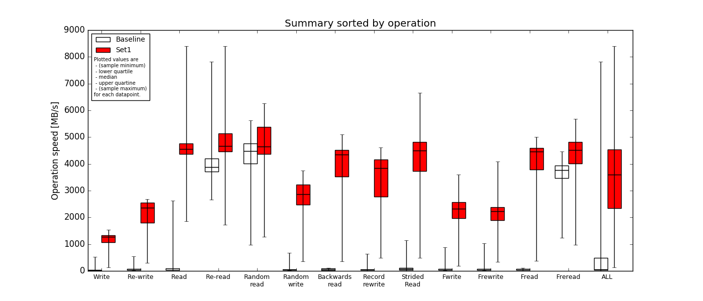
| Operation |
Write |
Re-write |
Read |
Re-read |
Random read |
Random write |
Backwards read |
Record rewrite |
Strided Read |
Fwrite |
Frewrite |
Fread |
Freread |
ALL |
| baeline | first quartile |
25.44 |
37.31 |
39.31 |
3719.22 |
4008.14 |
37.21 |
12.41 |
33.51 |
30.62 |
37.64 |
37.62 |
38.86 |
3476.58 |
37.39 |
| median |
26.18 |
38.55 |
46.3 |
3880.06 |
4484.45 |
37.74 |
50.92 |
37.63 |
67.69 |
41.43 |
41.21 |
41.61 |
3762.11 |
52.16 |
| third quartile |
38.44 |
65.97 |
93.44 |
4204.35 |
4762.46 |
49.34 |
86.52 |
55.72 |
108.88 |
76.39 |
75.85 |
80.18 |
3943.91 |
478.5 |
| minimum |
9.22 |
10.36 |
5.38 |
2666.21 |
974.91 |
11.25 |
1.5 |
5.44 |
4.61 |
10.34 |
10.88 |
4.66 |
1238.8 |
1.5 |
| maximum |
523.53 |
541.98 |
2617.37 |
7812.5 |
5616.33 |
665.8 |
110.95 |
631.69 |
1139.11 |
889.6 |
1025.55 |
110.98 |
4462.95 |
7812.5 |
| mean val. |
63.29 |
76.12 |
140.51 |
4006.21 |
4360.25 |
74.28 |
50.64 |
82.02 |
134.17 |
99.67 |
98.57 |
54.83 |
3658.03 |
992.2 |
| standard dev. |
92.71 |
94.22 |
387.77 |
619.13 |
748.88 |
102.08 |
37.47 |
116.64 |
213.75 |
147.92 |
151.99 |
28.58 |
492.11 |
1691.67 |
| ci. min. 90% |
57.62 |
70.35 |
116.8 |
3968.34 |
4314.45 |
68.03 |
48.35 |
74.88 |
121.09 |
90.62 |
89.27 |
53.08 |
3627.93 |
963.53 |
| ci. max. 90% |
68.96 |
81.88 |
164.23 |
4044.08 |
4406.06 |
80.52 |
52.93 |
89.15 |
147.24 |
108.72 |
107.87 |
56.57 |
3688.13 |
1020.86 |
| geom. mean |
38.67 |
53.2 |
62.49 |
3963.83 |
4275.42 |
48.54 |
29.35 |
48.41 |
62.26 |
61.49 |
60.59 |
46.71 |
3616.06 |
136.82 |
| set1 | first quartile |
1077.89 |
1799.19 |
4371.66 |
4459.3 |
4374.59 |
2473.52 |
3521.01 |
2765.96 |
3734.17 |
1961.99 |
1898.74 |
3780.69 |
4003.68 |
2342.63 |
| median |
1278.9 |
2357.87 |
4550.21 |
4665.39 |
4641.04 |
2866.68 |
4358.16 |
3839.52 |
4505.19 |
2324.89 |
2227.57 |
4465.53 |
4519.48 |
3592.27 |
| third quartile |
1327.12 |
2558.49 |
4765.44 |
5141.02 |
5375.92 |
3222.19 |
4522.63 |
4156.39 |
4817.27 |
2574.81 |
2389.74 |
4592.97 |
4818.57 |
4533.14 |
| minimum |
122.45 |
298.95 |
1860.61 |
1729.05 |
1279.43 |
364.48 |
350.04 |
484.65 |
484.65 |
186.59 |
328.96 |
382.75 |
974.91 |
122.45 |
| maximum |
1545.69 |
2676.81 |
8395.92 |
8395.92 |
6270.53 |
3749.23 |
5094.96 |
4613.55 |
6663.94 |
3603.65 |
4084.81 |
4999.99 |
5681.79 |
8395.92 |
| mean val. |
1142.44 |
2111.79 |
4515.73 |
4730.92 |
4693.38 |
2716.45 |
3902.2 |
3426.44 |
4257.45 |
2257.68 |
2140.36 |
4085.35 |
4401.69 |
3413.99 |
| standard dev. |
297.78 |
588.52 |
597.8 |
691.54 |
772.93 |
681.22 |
963.81 |
958.89 |
1004.18 |
554.38 |
595.44 |
849.95 |
756.27 |
1370.02 |
| ci. min. 90% |
1124.22 |
2075.8 |
4479.16 |
4688.62 |
4646.1 |
2674.78 |
3843.25 |
3367.79 |
4196.03 |
2223.77 |
2103.94 |
4033.36 |
4355.43 |
3390.78 |
| ci. max. 90% |
1160.65 |
2147.79 |
4552.29 |
4773.22 |
4740.65 |
2758.11 |
3961.16 |
3485.1 |
4318.87 |
2291.59 |
2176.78 |
4137.34 |
4447.95 |
3437.21 |
| geom. mean |
1078.04 |
1988.46 |
4475.2 |
4680.77 |
4621.14 |
2597.49 |
3689.23 |
3237.11 |
4070.12 |
2172.68 |
2034.37 |
3929.4 |
4317.31 |
3048.57 |
| linear regression slope 90% |
18.5 - 18.78 |
29.07 - 29.35 |
31.92 - 32.19 |
1.12 - 1.24 |
1.02 - 1.13 |
34.15 - 34.41 |
76.42 - 76.68 |
43.06 - 43.34 |
30.78 - 31.05 |
20.65 - 20.91 |
18.82 - 19.07 |
75.46 - 75.73 |
1.16 - 1.26 |
3.37 - 3.56 |
| ttest equality |
DIFF |
DIFF |
DIFF |
DIFF |
DIFF |
DIFF |
DIFF |
DIFF |
DIFF |
DIFF |
DIFF |
DIFF |
DIFF |
DIFF |
| baseline set1 difference |
1705.11 % |
2674.44 % |
3113.71 % |
18.09 % |
7.64 % |
3557.23 % |
7606.14 % |
4077.66 % |
3073.29 % |
2165.19 % |
2071.43 % |
7351.58 % |
20.33 % |
244.08 % |
| ttest p-value |
0.0 |
0.0 |
0.0 |
0.0 |
0.0 |
0.0 |
0.0 |
0.0 |
0.0 |
0.0 |
0.0 |
0.0 |
0.0 |
0.0 |
Write
| Write |
File size [kB] |
4 |
8 |
16 |
32 |
64 |
128 |
256 |
512 |
1024 |
2048 |
4096 |
8192 |
16384 |
32768 |
65536 |
131072 |
262144 |
524288 |
1048576 |
|---|
| baseline | first quartile |
9.84 |
11.32 |
15.44 |
25.84 |
39.39 |
59.58 |
68.77 |
75.83 |
117.08 |
30.42 |
27.61 |
26.22 |
25.5 |
25.49 |
25.26 |
25.13 |
24.93 |
25.02 |
25.13 |
| median |
10.12 |
17.2 |
24.19 |
36.54 |
51.83 |
98.39 |
123.7 |
163.15 |
202.06 |
31.73 |
28.0 |
26.45 |
25.7 |
25.76 |
25.44 |
25.35 |
25.14 |
25.31 |
25.24 |
| third quartile |
10.28 |
23.07 |
43.0 |
60.41 |
99.83 |
166.17 |
296.94 |
358.21 |
367.93 |
32.37 |
28.45 |
26.7 |
25.84 |
25.99 |
25.74 |
25.72 |
25.58 |
25.55 |
25.66 |
| mean val. |
10.1 |
18.92 |
27.75 |
45.91 |
78.72 |
128.13 |
175.82 |
216.03 |
232.29 |
31.7 |
28.07 |
26.48 |
25.71 |
25.74 |
25.51 |
25.41 |
25.19 |
25.28 |
25.35 |
| standard dev. |
0.66 |
9.43 |
13.43 |
27.68 |
53.53 |
97.05 |
123.75 |
153.09 |
142.79 |
1.42 |
0.61 |
0.34 |
0.25 |
0.33 |
0.33 |
0.38 |
0.79 |
0.57 |
0.42 |
| ci. min. 90% |
9.47 |
13.45 |
21.64 |
35.21 |
60.41 |
98.02 |
140.45 |
175.25 |
196.53 |
31.36 |
27.93 |
26.41 |
25.66 |
25.66 |
25.43 |
25.32 |
24.99 |
25.13 |
25.25 |
| ci. max. 90% |
10.73 |
24.38 |
33.85 |
56.61 |
97.04 |
158.24 |
211.19 |
256.82 |
268.06 |
32.04 |
28.2 |
26.55 |
25.76 |
25.82 |
25.59 |
25.51 |
25.39 |
25.42 |
25.46 |
| geom. mean |
10.08 |
17.15 |
24.8 |
38.9 |
63.46 |
100.3 |
134.52 |
161.65 |
182.53 |
31.67 |
28.06 |
26.48 |
25.71 |
25.74 |
25.51 |
25.41 |
25.18 |
25.27 |
25.35 |
| minimum |
9.22 |
10.88 |
12.66 |
15.9 |
25.09 |
36.15 |
38.44 |
44.49 |
35.75 |
29.78 |
27.15 |
25.83 |
25.16 |
25.1 |
24.98 |
24.77 |
21.0 |
22.31 |
23.42 |
| maximum |
11.03 |
40.46 |
49.62 |
103.79 |
200.29 |
420.84 |
425.76 |
523.53 |
498.5 |
35.75 |
29.32 |
27.2 |
26.42 |
26.27 |
26.46 |
26.16 |
26.19 |
26.2 |
26.03 |
| set1 | first quartile |
126.22 |
231.11 |
303.71 |
465.13 |
524.49 |
664.66 |
922.43 |
1038.7 |
1144.17 |
1167.97 |
1161.12 |
1206.13 |
1212.76 |
1257.81 |
1262.25 |
1257.13 |
1257.35 |
1261.87 |
1312.36 |
| median |
126.22 |
240.48 |
390.55 |
528.93 |
663.98 |
893.46 |
1045.64 |
1200.64 |
1314.08 |
1343.62 |
1337.28 |
1309.02 |
1279.29 |
1302.87 |
1304.52 |
1304.15 |
1306.29 |
1310.54 |
1352.68 |
| third quartile |
130.23 |
290.48 |
434.57 |
592.65 |
762.48 |
976.68 |
1138.76 |
1275.01 |
1353.52 |
1370.73 |
1363.3 |
1332.18 |
1318.4 |
1320.85 |
1320.24 |
1319.79 |
1323.43 |
1324.88 |
1413.28 |
| mean val. |
127.07 |
254.23 |
378.78 |
527.77 |
633.92 |
847.25 |
1001.84 |
1120.18 |
1211.53 |
1237.24 |
1241.88 |
1220.88 |
1205.61 |
1287.98 |
1287.07 |
1287.92 |
1289.28 |
1293.56 |
1363.38 |
| standard dev. |
3.27 |
38.35 |
90.84 |
122.56 |
147.65 |
209.03 |
210.74 |
216.84 |
220.42 |
204.9 |
195.59 |
179.76 |
169.68 |
36.99 |
41.34 |
38.68 |
38.98 |
40.29 |
80.16 |
| ci. min. 90% |
123.95 |
232.0 |
337.47 |
480.39 |
583.4 |
782.4 |
941.61 |
1062.41 |
1156.33 |
1188.66 |
1197.74 |
1182.1 |
1170.49 |
1278.71 |
1276.72 |
1278.23 |
1279.52 |
1283.47 |
1343.31 |
| ci. max. 90% |
130.19 |
276.46 |
420.09 |
575.16 |
684.44 |
912.09 |
1062.07 |
1177.94 |
1266.74 |
1285.82 |
1286.02 |
1259.66 |
1240.74 |
1297.24 |
1297.43 |
1297.61 |
1299.04 |
1303.65 |
1383.46 |
| geom. mean |
127.04 |
251.61 |
369.18 |
514.58 |
615.4 |
819.62 |
976.87 |
1095.51 |
1187.31 |
1216.85 |
1223.28 |
1204.93 |
1191.3 |
1287.45 |
1286.41 |
1287.34 |
1288.7 |
1292.94 |
1361.1 |
| minimum |
122.45 |
195.27 |
243.8 |
339.74 |
383.36 |
477.14 |
578.75 |
623.45 |
630.93 |
733.67 |
739.51 |
743.84 |
740.71 |
1219.0 |
1173.95 |
1213.94 |
1214.97 |
1218.98 |
1219.59 |
| maximum |
130.23 |
301.16 |
602.32 |
846.69 |
832.72 |
1168.18 |
1309.4 |
1377.16 |
1418.53 |
1397.68 |
1389.32 |
1358.21 |
1339.13 |
1331.95 |
1335.06 |
1331.22 |
1335.5 |
1340.17 |
1545.69 |
| ttest equality |
DIFF |
DIFF |
DIFF |
DIFF |
DIFF |
DIFF |
DIFF |
DIFF |
DIFF |
DIFF |
DIFF |
DIFF |
DIFF |
DIFF |
DIFF |
DIFF |
DIFF |
DIFF |
DIFF |
| baseline set1 difference |
1147.21 % |
1298.01 % |
1514.27 % |
1347.5 % |
1181.1 % |
808.1 % |
745.31 % |
635.93 % |
550.35 % |
4134.08 % |
4675.49 % |
4848.44 % |
4878.32 % |
4958.35 % |
5028.15 % |
5044.08 % |
5096.33 % |
5077.85 % |
5260.25 % |
| ttest p-value |
0.0 |
0.0 |
0.0 |
0.0 |
0.0 |
0.0 |
0.0 |
0.0 |
0.0 |
0.0 |
0.0 |
0.0 |
0.0 |
0.0 |
0.0 |
0.0 |
0.0 |
0.0 |
0.0 |
| Write |
Block size [kB] |
4 |
8 |
16 |
32 |
64 |
128 |
256 |
512 |
1024 |
2048 |
4096 |
8192 |
16384 |
|---|
| baseline | first quartile |
19.48 |
26.12 |
27.82 |
27.82 |
25.61 |
25.95 |
25.8 |
25.42 |
25.23 |
25.14 |
25.03 |
25.13 |
24.98 |
| median |
27.01 |
29.89 |
47.49 |
93.5 |
26.12 |
26.52 |
26.21 |
25.67 |
25.49 |
25.46 |
25.26 |
25.31 |
25.12 |
| third quartile |
38.44 |
60.52 |
90.9 |
119.98 |
167.2 |
280.31 |
32.6 |
29.56 |
27.9 |
26.31 |
25.99 |
25.75 |
25.42 |
| mean val. |
28.16 |
42.37 |
59.08 |
78.78 |
81.21 |
107.64 |
109.98 |
93.36 |
64.85 |
26.44 |
25.66 |
25.49 |
25.26 |
| standard dev. |
12.08 |
20.56 |
33.28 |
44.87 |
79.18 |
129.55 |
154.16 |
151.55 |
122.87 |
2.44 |
1.26 |
0.55 |
0.4 |
| ci. min. 90% |
25.66 |
37.94 |
51.57 |
68.14 |
65.98 |
81.83 |
78.07 |
60.66 |
37.12 |
25.86 |
25.35 |
25.34 |
25.15 |
| ci. max. 90% |
30.66 |
46.81 |
66.59 |
89.41 |
96.44 |
133.46 |
141.89 |
126.05 |
92.58 |
27.02 |
25.98 |
25.63 |
25.38 |
| geom. mean |
25.29 |
38.08 |
50.64 |
63.63 |
50.79 |
54.1 |
49.4 |
42.06 |
34.13 |
26.34 |
25.63 |
25.48 |
25.26 |
| minimum |
9.22 |
21.41 |
25.21 |
25.49 |
25.31 |
25.39 |
21.0 |
25.1 |
24.85 |
23.67 |
22.31 |
24.83 |
24.78 |
| maximum |
48.84 |
83.8 |
124.41 |
161.5 |
227.74 |
420.84 |
454.14 |
523.53 |
498.5 |
35.75 |
29.32 |
27.2 |
26.24 |
| set1 | first quartile |
355.4 |
489.12 |
687.73 |
976.68 |
1244.61 |
1279.66 |
1303.79 |
1320.24 |
1327.6 |
1329.21 |
1311.5 |
1237.92 |
1221.27 |
| median |
604.09 |
875.4 |
1099.88 |
1217.66 |
1262.62 |
1289.87 |
1310.22 |
1324.55 |
1331.95 |
1334.5 |
1318.63 |
1241.26 |
1223.53 |
| third quartile |
740.99 |
975.09 |
1144.2 |
1259.51 |
1311.04 |
1332.7 |
1332.7 |
1369.84 |
1349.99 |
1345.48 |
1326.28 |
1249.59 |
1226.24 |
| mean val. |
535.34 |
747.35 |
939.67 |
1106.73 |
1221.13 |
1283.63 |
1321.53 |
1344.32 |
1340.97 |
1339.44 |
1329.23 |
1246.65 |
1234.48 |
| standard dev. |
215.65 |
262.5 |
254.47 |
218.38 |
158.96 |
84.01 |
54.92 |
38.88 |
21.38 |
17.81 |
46.69 |
27.77 |
45.39 |
| ci. min. 90% |
490.7 |
690.72 |
882.24 |
1054.95 |
1190.56 |
1266.89 |
1310.16 |
1335.93 |
1336.15 |
1335.22 |
1317.53 |
1239.25 |
1221.5 |
| ci. max. 90% |
579.99 |
803.98 |
997.09 |
1158.51 |
1251.7 |
1300.37 |
1332.9 |
1352.71 |
1345.8 |
1343.66 |
1340.92 |
1254.04 |
1247.45 |
| geom. mean |
476.15 |
689.19 |
898.22 |
1081.55 |
1208.93 |
1280.77 |
1320.42 |
1343.79 |
1340.81 |
1339.32 |
1328.49 |
1246.36 |
1233.73 |
| minimum |
122.45 |
195.27 |
434.57 |
636.87 |
745.14 |
1045.64 |
1141.24 |
1289.72 |
1310.8 |
1316.06 |
1293.97 |
1173.95 |
1210.88 |
| maximum |
759.58 |
1006.84 |
1187.55 |
1316.15 |
1458.08 |
1458.91 |
1519.05 |
1512.45 |
1387.97 |
1416.17 |
1545.69 |
1386.02 |
1439.58 |
| ttest equality |
DIFF |
DIFF |
DIFF |
DIFF |
DIFF |
DIFF |
DIFF |
DIFF |
DIFF |
DIFF |
DIFF |
DIFF |
DIFF |
| baseline set1 difference |
2136.79 % |
2828.48 % |
2215.96 % |
1202.29 % |
4733.9 % |
4763.3 % |
4898.01 % |
5060.13 % |
5124.53 % |
5142.17 % |
5120.47 % |
4803.54 % |
4771.3 % |
| ttest p-value |
0.0 |
0.0 |
0.0 |
0.0 |
0.0 |
0.0 |
0.0 |
0.0 |
0.0 |
0.0 |
0.0 |
0.0 |
0.0 |
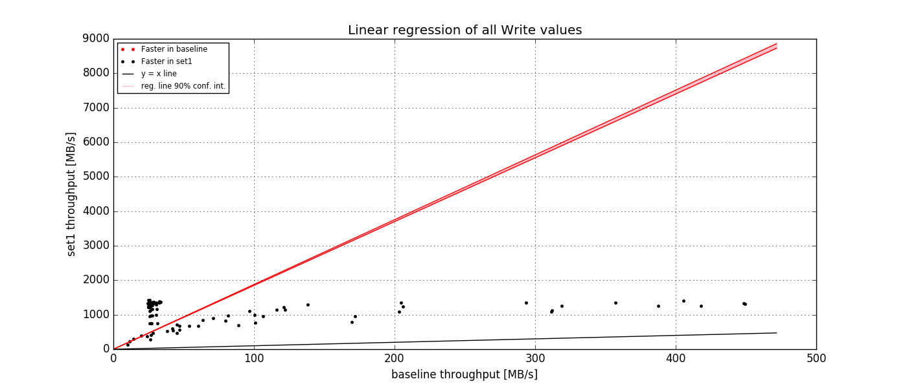
| Regression line |
|---|
| slope | 18.64284 |
| std. error | 0.08344 |
| ci. max 90% | 18.5047 |
| ci. min. 90% | 18.78098 |
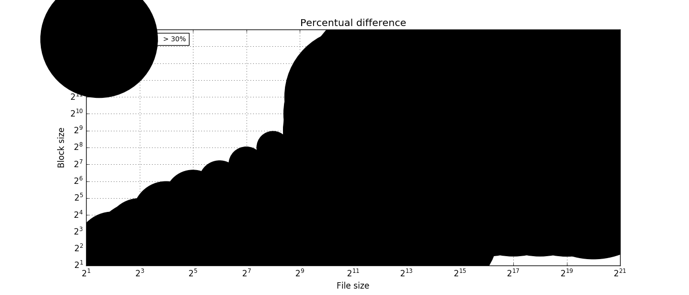
Back on top
Re-write
| Re-write |
File size [kB] |
4 |
8 |
16 |
32 |
64 |
128 |
256 |
512 |
1024 |
2048 |
4096 |
8192 |
16384 |
32768 |
65536 |
131072 |
262144 |
524288 |
1048576 |
|---|
| baseline | first quartile |
10.61 |
13.36 |
16.37 |
29.65 |
43.31 |
68.44 |
68.35 |
77.65 |
109.32 |
66.06 |
46.85 |
39.64 |
38.24 |
37.69 |
37.46 |
37.36 |
37.3 |
36.74 |
36.98 |
| median |
10.88 |
18.53 |
24.42 |
41.96 |
68.9 |
104.21 |
131.37 |
162.92 |
199.56 |
67.79 |
47.78 |
39.88 |
38.4 |
37.73 |
37.48 |
37.37 |
37.3 |
37.26 |
37.0 |
| third quartile |
11.19 |
22.93 |
42.62 |
64.55 |
109.69 |
187.13 |
290.25 |
354.76 |
411.86 |
70.43 |
48.49 |
40.49 |
38.55 |
37.75 |
37.5 |
37.41 |
37.31 |
37.27 |
37.25 |
| mean val. |
11.1 |
19.51 |
30.12 |
50.19 |
84.84 |
139.48 |
179.72 |
216.55 |
253.01 |
66.2 |
47.66 |
40.02 |
38.44 |
37.6 |
37.0 |
37.04 |
37.09 |
36.7 |
36.86 |
| standard dev. |
0.81 |
8.25 |
16.54 |
28.05 |
49.99 |
100.46 |
127.24 |
152.21 |
163.2 |
8.25 |
1.29 |
0.62 |
0.3 |
1.05 |
1.75 |
1.47 |
0.47 |
1.67 |
0.87 |
| ci. min. 90% |
10.32 |
14.72 |
22.6 |
39.34 |
67.73 |
108.32 |
143.35 |
176.0 |
212.13 |
64.25 |
47.37 |
39.89 |
38.38 |
37.33 |
36.56 |
36.67 |
36.97 |
36.28 |
36.64 |
| ci. max. 90% |
11.87 |
24.29 |
37.64 |
61.03 |
101.95 |
170.65 |
216.09 |
257.1 |
293.89 |
68.16 |
47.95 |
40.15 |
38.51 |
37.86 |
37.44 |
37.4 |
37.21 |
37.12 |
37.08 |
| geom. mean |
11.07 |
18.12 |
26.54 |
43.78 |
71.59 |
110.03 |
135.6 |
162.11 |
193.32 |
65.56 |
47.65 |
40.01 |
38.44 |
37.58 |
36.95 |
37.0 |
37.09 |
36.66 |
36.85 |
| minimum |
10.36 |
11.23 |
13.64 |
20.75 |
27.94 |
38.14 |
39.75 |
43.42 |
36.66 |
36.26 |
44.84 |
39.0 |
37.79 |
30.75 |
27.43 |
28.02 |
35.26 |
26.98 |
32.35 |
| maximum |
12.44 |
37.72 |
73.32 |
124.5 |
192.92 |
375.35 |
393.64 |
507.56 |
541.98 |
74.64 |
49.59 |
41.85 |
39.42 |
38.15 |
37.66 |
37.49 |
37.36 |
37.29 |
37.26 |
| set1 | first quartile |
322.48 |
444.23 |
602.32 |
915.61 |
1116.43 |
1214.17 |
1326.44 |
1592.61 |
1748.5 |
1864.25 |
1978.78 |
2188.13 |
2220.69 |
2410.92 |
2420.65 |
2410.73 |
2422.13 |
2425.06 |
2438.74 |
| median |
322.48 |
492.26 |
746.38 |
1076.88 |
1352.61 |
1469.39 |
1799.19 |
2002.19 |
2154.45 |
2372.48 |
2432.96 |
2473.28 |
2431.23 |
2534.67 |
2536.15 |
2533.8 |
2544.2 |
2548.36 |
2555.86 |
| third quartile |
328.96 |
557.22 |
847.34 |
1196.51 |
1525.82 |
1853.95 |
2130.3 |
2272.58 |
2382.04 |
2545.08 |
2587.56 |
2574.47 |
2576.87 |
2573.79 |
2575.05 |
2576.8 |
2575.61 |
2578.66 |
2581.93 |
| mean val. |
324.58 |
507.12 |
739.79 |
1055.77 |
1292.74 |
1504.93 |
1710.04 |
1901.01 |
2049.21 |
2164.23 |
2253.45 |
2284.43 |
2272.82 |
2475.1 |
2477.07 |
2473.5 |
2479.84 |
2483.71 |
2491.27 |
| standard dev. |
18.26 |
69.73 |
143.94 |
231.57 |
321.09 |
390.94 |
443.27 |
460.95 |
467.57 |
467.0 |
457.78 |
430.74 |
416.68 |
132.83 |
133.72 |
134.78 |
135.6 |
136.24 |
138.05 |
| ci. min. 90% |
307.18 |
466.7 |
674.33 |
966.24 |
1182.87 |
1383.66 |
1583.34 |
1778.21 |
1932.09 |
2053.5 |
2150.14 |
2191.51 |
2186.56 |
2441.83 |
2443.58 |
2439.74 |
2445.87 |
2449.59 |
2456.69 |
| ci. max. 90% |
341.99 |
547.55 |
805.25 |
1145.31 |
1402.61 |
1626.21 |
1836.73 |
2023.8 |
2166.32 |
2274.95 |
2356.75 |
2377.36 |
2359.08 |
2508.37 |
2510.56 |
2507.26 |
2513.8 |
2517.83 |
2525.85 |
| geom. mean |
324.17 |
502.87 |
726.72 |
1030.43 |
1250.44 |
1449.39 |
1647.67 |
1838.86 |
1988.99 |
2105.25 |
2196.11 |
2233.59 |
2225.13 |
2471.49 |
2473.41 |
2469.78 |
2476.07 |
2479.92 |
2487.38 |
| minimum |
298.95 |
432.26 |
538.04 |
724.93 |
790.05 |
791.01 |
939.75 |
919.08 |
1126.05 |
1182.69 |
1152.38 |
1190.09 |
1181.93 |
2203.26 |
2210.33 |
2214.5 |
2217.56 |
2223.07 |
2220.19 |
| maximum |
350.04 |
609.01 |
966.53 |
1368.1 |
1738.29 |
2018.0 |
2275.53 |
2548.78 |
2638.25 |
2676.81 |
2659.33 |
2664.99 |
2644.6 |
2611.86 |
2609.57 |
2601.26 |
2610.73 |
2611.61 |
2617.96 |
| ttest equality |
DIFF |
DIFF |
DIFF |
DIFF |
DIFF |
DIFF |
DIFF |
DIFF |
DIFF |
DIFF |
DIFF |
DIFF |
DIFF |
DIFF |
DIFF |
DIFF |
DIFF |
DIFF |
DIFF |
| baseline set1 difference |
2864.03 % |
2557.01 % |
2956.54 % |
2466.17 % |
1863.23 % |
1310.03 % |
1269.55 % |
1128.91 % |
979.61 % |
3399.49 % |
4991.66 % |
6102.5 % |
6232.08 % |
6617.48 % |
6666.23 % |
6681.16 % |
6720.41 % |
6739.97 % |
6808.11 % |
| ttest p-value |
0.0 |
0.0 |
0.0 |
0.0 |
0.0 |
0.0 |
0.0 |
0.0 |
0.0 |
0.0 |
0.0 |
0.0 |
0.0 |
0.0 |
0.0 |
0.0 |
0.0 |
0.0 |
0.0 |
| Re-write |
Block size [kB] |
4 |
8 |
16 |
32 |
64 |
128 |
256 |
512 |
1024 |
2048 |
4096 |
8192 |
16384 |
|---|
| baseline | first quartile |
20.81 |
37.47 |
45.55 |
47.87 |
37.38 |
37.37 |
37.36 |
37.31 |
37.32 |
37.3 |
37.29 |
37.26 |
37.26 |
| median |
38.39 |
47.66 |
66.9 |
96.93 |
39.47 |
38.99 |
38.5 |
37.98 |
37.74 |
37.59 |
37.49 |
37.42 |
37.36 |
| third quartile |
44.31 |
66.83 |
91.97 |
120.05 |
185.34 |
291.34 |
74.44 |
54.18 |
46.17 |
40.16 |
38.74 |
38.01 |
37.72 |
| mean val. |
33.95 |
50.34 |
69.99 |
90.9 |
92.92 |
123.38 |
124.44 |
112.74 |
81.02 |
41.79 |
38.8 |
37.56 |
37.4 |
| standard dev. |
13.36 |
18.37 |
28.64 |
40.34 |
74.97 |
131.22 |
151.86 |
160.3 |
125.99 |
10.2 |
2.87 |
1.96 |
0.85 |
| ci. min. 90% |
31.19 |
46.37 |
63.53 |
81.33 |
78.5 |
97.24 |
93.01 |
78.15 |
52.59 |
39.37 |
38.08 |
37.04 |
37.16 |
| ci. max. 90% |
36.72 |
54.3 |
76.45 |
100.46 |
107.34 |
149.53 |
155.88 |
147.32 |
109.45 |
44.21 |
39.52 |
38.08 |
37.65 |
| geom. mean |
30.44 |
46.86 |
64.7 |
81.27 |
68.42 |
73.82 |
69.54 |
61.42 |
51.16 |
40.88 |
38.71 |
37.5 |
37.39 |
| minimum |
10.36 |
21.12 |
38.27 |
38.2 |
30.75 |
26.98 |
33.66 |
28.02 |
32.35 |
32.51 |
36.29 |
27.43 |
33.62 |
| maximum |
50.24 |
85.43 |
136.83 |
174.36 |
243.92 |
375.35 |
424.66 |
507.56 |
541.98 |
73.04 |
47.41 |
40.79 |
38.85 |
| set1 | first quartile |
728.96 |
1070.37 |
1374.03 |
1649.26 |
2104.93 |
2260.23 |
2457.4 |
2567.72 |
2593.45 |
2591.53 |
2539.23 |
2270.77 |
2216.89 |
| median |
949.96 |
1314.13 |
1608.48 |
1937.62 |
2416.84 |
2509.02 |
2538.23 |
2577.09 |
2600.25 |
2599.19 |
2558.49 |
2275.19 |
2220.69 |
| third quartile |
1182.69 |
1594.3 |
1916.87 |
2240.11 |
2431.28 |
2520.31 |
2548.36 |
2585.94 |
2610.54 |
2611.8 |
2573.34 |
2299.68 |
2227.42 |
| mean val. |
907.48 |
1278.29 |
1602.83 |
1909.33 |
2267.37 |
2396.95 |
2479.06 |
2574.18 |
2605.12 |
2604.6 |
2560.44 |
2295.72 |
2221.59 |
| standard dev. |
299.72 |
353.85 |
362.66 |
331.9 |
242.58 |
174.06 |
107.67 |
31.51 |
23.07 |
23.23 |
28.68 |
41.92 |
7.92 |
| ci. min. 90% |
845.44 |
1201.95 |
1521.0 |
1830.63 |
2220.71 |
2362.27 |
2456.77 |
2567.39 |
2599.91 |
2599.1 |
2553.25 |
2284.56 |
2219.32 |
| ci. max. 90% |
969.53 |
1354.62 |
1684.67 |
1988.02 |
2314.03 |
2431.64 |
2501.35 |
2580.98 |
2610.33 |
2610.11 |
2567.62 |
2306.89 |
2223.85 |
| geom. mean |
845.03 |
1219.56 |
1553.33 |
1879.28 |
2253.28 |
2390.36 |
2476.67 |
2573.99 |
2605.02 |
2604.5 |
2560.28 |
2295.36 |
2221.58 |
| minimum |
298.95 |
521.74 |
538.04 |
1300.24 |
1640.39 |
1979.9 |
2213.09 |
2457.4 |
2550.65 |
2557.65 |
2516.49 |
2263.72 |
2203.26 |
| maximum |
1226.05 |
1697.0 |
2014.58 |
2305.54 |
2542.6 |
2560.84 |
2590.69 |
2639.42 |
2659.33 |
2676.81 |
2647.16 |
2428.7 |
2237.72 |
| ttest equality |
DIFF |
DIFF |
DIFF |
DIFF |
DIFF |
DIFF |
DIFF |
DIFF |
DIFF |
DIFF |
DIFF |
DIFF |
DIFF |
| baseline set1 difference |
2374.59 % |
2657.2 % |
2304.3 % |
1898.91 % |
6023.87 % |
6334.35 % |
6493.14 % |
6685.22 % |
6789.86 % |
6813.7 % |
6724.6 % |
5980.88 % |
5843.98 % |
| ttest p-value |
0.0 |
0.0 |
0.0 |
0.0 |
0.0 |
0.0 |
0.0 |
0.0 |
0.0 |
0.0 |
0.0 |
0.0 |
0.0 |
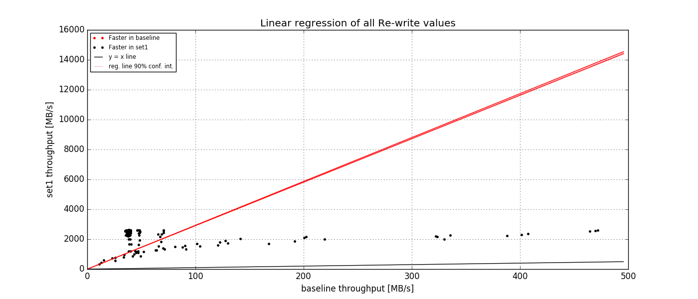
| Regression line |
|---|
| slope | 29.21332 |
| std. error | 0.08416 |
| ci. max 90% | 29.07399 |
| ci. min. 90% | 29.35264 |
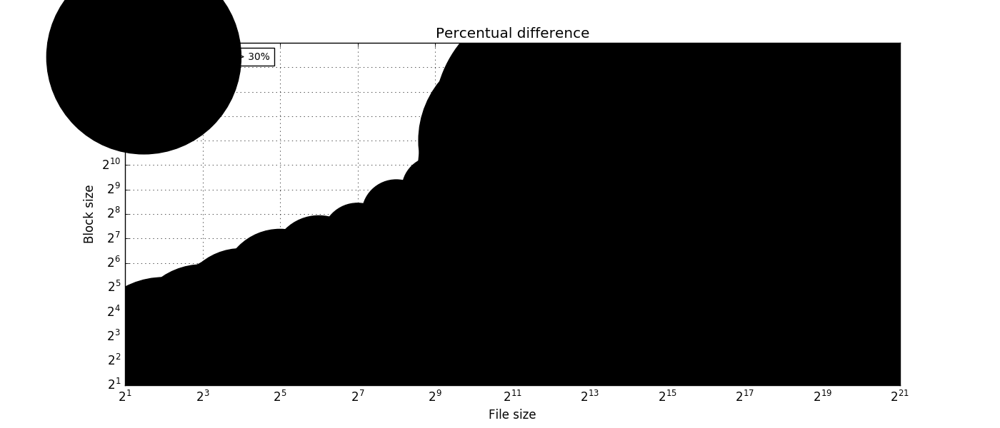
Back on top
Read
| Read |
File size [kB] |
4 |
8 |
16 |
32 |
64 |
128 |
256 |
512 |
1024 |
2048 |
4096 |
8192 |
16384 |
32768 |
65536 |
131072 |
262144 |
524288 |
1048576 |
|---|
| baseline | first quartile |
5.72 |
11.37 |
23.25 |
14.13 |
23.94 |
25.59 |
40.1 |
46.46 |
42.59 |
40.43 |
39.85 |
39.42 |
39.21 |
39.42 |
39.39 |
39.35 |
39.35 |
39.35 |
38.56 |
| median |
6.1 |
12.07 |
23.82 |
29.88 |
25.35 |
40.13 |
56.87 |
64.98 |
48.0 |
42.59 |
40.9 |
40.57 |
39.91 |
67.19 |
66.21 |
65.79 |
65.47 |
65.38 |
62.39 |
| third quartile |
6.1 |
12.44 |
24.79 |
49.2 |
86.92 |
175.21 |
209.54 |
118.13 |
55.23 |
63.52 |
84.52 |
82.14 |
93.44 |
107.84 |
100.87 |
97.84 |
96.37 |
95.64 |
93.3 |
| mean val. |
5.91 |
11.92 |
24.12 |
31.45 |
51.58 |
84.29 |
122.27 |
143.3 |
185.31 |
229.2 |
267.61 |
264.36 |
260.11 |
85.55 |
74.88 |
71.34 |
69.82 |
69.13 |
65.22 |
| standard dev. |
0.35 |
0.71 |
1.97 |
17.76 |
34.85 |
75.51 |
125.03 |
209.19 |
373.9 |
535.06 |
671.58 |
675.69 |
674.71 |
54.43 |
36.34 |
31.25 |
29.21 |
28.29 |
30.0 |
| ci. min. 90% |
5.57 |
11.51 |
23.23 |
24.59 |
39.66 |
60.86 |
86.54 |
87.57 |
91.66 |
102.33 |
116.06 |
118.59 |
120.44 |
71.91 |
65.78 |
63.51 |
62.51 |
62.05 |
57.7 |
| ci. max. 90% |
6.25 |
12.33 |
25.02 |
38.32 |
63.51 |
107.72 |
158.01 |
199.03 |
278.96 |
356.06 |
419.16 |
410.13 |
399.79 |
99.18 |
83.98 |
79.16 |
77.14 |
76.22 |
72.73 |
| geom. mean |
5.9 |
11.9 |
24.05 |
26.27 |
41.19 |
56.74 |
80.89 |
82.65 |
73.51 |
70.42 |
72.29 |
74.03 |
75.99 |
71.78 |
66.71 |
64.72 |
63.82 |
63.41 |
58.0 |
| minimum |
5.38 |
10.87 |
20.78 |
13.22 |
21.35 |
21.63 |
35.62 |
39.54 |
38.08 |
38.52 |
38.68 |
38.42 |
38.62 |
39.0 |
38.88 |
38.87 |
38.84 |
39.0 |
27.39 |
| maximum |
6.24 |
12.87 |
29.42 |
50.65 |
107.93 |
214.36 |
428.02 |
738.48 |
1329.92 |
1862.15 |
2430.14 |
2518.0 |
2617.37 |
207.49 |
141.31 |
121.81 |
113.94 |
110.38 |
108.05 |
| set1 | first quartile |
1860.61 |
3840.41 |
3899.63 |
4297.01 |
4173.89 |
4071.13 |
4504.41 |
4573.42 |
4482.02 |
4535.47 |
4587.32 |
4535.11 |
4435.83 |
3838.32 |
4324.94 |
4285.37 |
4313.99 |
4338.8 |
4355.35 |
| median |
2098.98 |
5508.27 |
5117.72 |
4550.21 |
4457.8 |
4606.87 |
4623.23 |
4736.15 |
4676.94 |
4650.53 |
4711.63 |
4692.07 |
4633.69 |
4513.37 |
4481.11 |
4471.62 |
4483.36 |
4489.61 |
4493.53 |
| third quartile |
3409.29 |
6818.58 |
5334.47 |
5079.19 |
4783.15 |
4818.57 |
4951.09 |
4937.48 |
4855.61 |
4851.69 |
4866.76 |
4797.05 |
4740.73 |
4595.74 |
4540.92 |
4520.91 |
4538.6 |
4551.36 |
4540.38 |
| mean val. |
2527.76 |
5564.03 |
4880.64 |
4532.14 |
4626.1 |
4522.85 |
4692.82 |
4747.02 |
4718.65 |
4701.78 |
4706.05 |
4587.52 |
4472.48 |
4314.08 |
4310.65 |
4298.31 |
4308.32 |
4314.26 |
4322.83 |
| standard dev. |
810.59 |
1787.39 |
1484.37 |
524.96 |
654.91 |
859.1 |
502.06 |
430.17 |
435.73 |
363.25 |
289.59 |
304.59 |
436.84 |
458.91 |
446.0 |
440.11 |
447.27 |
448.1 |
451.85 |
| ci. min. 90% |
1754.95 |
4527.92 |
4205.6 |
4329.17 |
4402.0 |
4256.34 |
4549.32 |
4632.42 |
4609.51 |
4615.66 |
4640.7 |
4521.81 |
4382.04 |
4199.14 |
4198.94 |
4188.08 |
4196.29 |
4202.02 |
4209.65 |
| ci. max. 90% |
3300.56 |
6600.15 |
5555.69 |
4735.12 |
4850.19 |
4789.36 |
4836.32 |
4861.62 |
4827.79 |
4787.91 |
4771.4 |
4653.23 |
4562.91 |
4429.03 |
4422.36 |
4408.55 |
4420.35 |
4426.49 |
4436.0 |
| geom. mean |
2428.45 |
5302.49 |
4693.59 |
4502.65 |
4584.04 |
4433.64 |
4666.97 |
4728.08 |
4699.36 |
4688.19 |
4697.04 |
4576.93 |
4449.45 |
4288.41 |
4286.14 |
4274.41 |
4283.65 |
4289.52 |
4297.69 |
| minimum |
1860.61 |
3721.23 |
3149.91 |
3466.99 |
3702.3 |
2452.17 |
3788.13 |
4026.75 |
3935.34 |
3905.66 |
3988.11 |
3782.57 |
3427.63 |
3410.37 |
3425.59 |
3433.85 |
3437.21 |
3447.88 |
3445.97 |
| maximum |
3409.29 |
7812.5 |
8395.92 |
5283.95 |
6270.53 |
5971.0 |
5704.81 |
5610.27 |
5715.82 |
5600.6 |
5304.54 |
5018.76 |
5022.06 |
4830.96 |
4848.83 |
4801.34 |
4826.74 |
4808.18 |
4809.64 |
| ttest equality |
DIFF |
DIFF |
DIFF |
DIFF |
DIFF |
DIFF |
DIFF |
DIFF |
DIFF |
DIFF |
DIFF |
DIFF |
DIFF |
DIFF |
DIFF |
DIFF |
DIFF |
DIFF |
DIFF |
| baseline set1 difference |
34300.69 % |
45520.07 % |
21389.1 % |
15126.35 % |
17481.89 % |
11380.46 % |
8029.88 % |
7188.47 % |
9642.63 % |
10820.21 % |
11420.88 % |
11464.17 % |
11511.73 % |
6617.57 % |
6667.63 % |
6696.4 % |
6748.2 % |
6767.37 % |
7102.26 % |
| ttest p-value |
0.0001 |
0.0 |
0.0 |
0.0 |
0.0 |
0.0 |
0.0 |
0.0 |
0.0 |
0.0 |
0.0 |
0.0 |
0.0 |
0.0 |
0.0 |
0.0 |
0.0 |
0.0 |
0.0 |
| Read |
Block size [kB] |
4 |
8 |
16 |
32 |
64 |
128 |
256 |
512 |
1024 |
2048 |
4096 |
8192 |
16384 |
|---|
| baseline | first quartile |
21.81 |
23.21 |
39.09 |
39.86 |
39.25 |
39.19 |
39.35 |
46.26 |
65.52 |
83.07 |
96.32 |
105.42 |
110.38 |
| median |
37.08 |
38.25 |
40.03 |
42.83 |
39.82 |
39.65 |
39.91 |
47.26 |
67.19 |
86.23 |
100.82 |
112.81 |
121.77 |
| third quartile |
39.2 |
39.16 |
42.6 |
51.61 |
64.98 |
51.64 |
46.68 |
55.97 |
84.52 |
107.75 |
124.68 |
150.87 |
207.39 |
| mean val. |
29.43 |
31.45 |
39.31 |
50.1 |
57.43 |
65.81 |
74.56 |
107.49 |
178.9 |
267.52 |
362.96 |
419.2 |
482.29 |
| standard dev. |
12.43 |
10.73 |
8.87 |
17.19 |
40.71 |
56.49 |
93.83 |
176.73 |
335.57 |
522.08 |
717.84 |
790.33 |
867.0 |
| ci. min. 90% |
26.85 |
29.14 |
37.31 |
46.02 |
49.6 |
54.55 |
55.13 |
69.37 |
103.18 |
143.73 |
183.16 |
208.65 |
234.48 |
| ci. max. 90% |
32.0 |
33.77 |
41.31 |
54.17 |
65.26 |
77.06 |
93.98 |
145.62 |
254.63 |
391.3 |
542.76 |
629.74 |
730.09 |
| geom. mean |
25.7 |
29.14 |
38.2 |
48.05 |
49.92 |
52.61 |
53.59 |
65.29 |
93.87 |
125.55 |
154.07 |
176.79 |
199.12 |
| minimum |
5.38 |
10.91 |
20.78 |
37.4 |
27.69 |
27.39 |
38.49 |
43.11 |
62.16 |
79.88 |
91.71 |
102.24 |
105.79 |
| maximum |
48.79 |
49.91 |
67.13 |
107.93 |
214.36 |
223.21 |
428.02 |
738.48 |
1329.92 |
1862.15 |
2430.14 |
2518.0 |
2617.37 |
| set1 | first quartile |
3877.22 |
4592.7 |
4457.8 |
4526.24 |
4721.3 |
4643.36 |
4471.05 |
4491.81 |
4511.85 |
4498.71 |
4333.95 |
3576.63 |
3437.51 |
| median |
4015.17 |
4797.9 |
4629.97 |
4636.72 |
4781.39 |
4685.68 |
4518.74 |
4557.46 |
4541.22 |
4537.99 |
4371.66 |
3600.03 |
3448.18 |
| third quartile |
4054.52 |
4902.67 |
4708.66 |
4780.66 |
4818.57 |
4792.92 |
4689.12 |
4735.66 |
4806.71 |
4742.24 |
4553.58 |
3672.71 |
3463.52 |
| mean val. |
3807.51 |
4917.7 |
4667.75 |
4675.71 |
4820.29 |
4770.61 |
4647.75 |
4688.23 |
4697.91 |
4689.26 |
4495.71 |
3650.07 |
3452.05 |
| standard dev. |
522.93 |
761.73 |
740.96 |
279.93 |
312.5 |
297.04 |
333.51 |
305.37 |
349.93 |
312.12 |
280.54 |
115.65 |
19.77 |
| ci. min. 90% |
3699.26 |
4753.37 |
4500.54 |
4609.34 |
4760.18 |
4711.41 |
4578.71 |
4622.36 |
4618.94 |
4615.25 |
4425.45 |
3619.26 |
3446.4 |
| ci. max. 90% |
3915.77 |
5082.03 |
4834.95 |
4742.08 |
4880.39 |
4829.8 |
4716.79 |
4754.11 |
4776.87 |
4763.26 |
4565.98 |
3680.88 |
3457.7 |
| geom. mean |
3759.24 |
4870.45 |
4620.82 |
4667.74 |
4810.97 |
4762.03 |
4636.74 |
4679.17 |
4685.81 |
4679.76 |
4487.74 |
3648.35 |
3451.99 |
| minimum |
1860.61 |
3899.63 |
3124.38 |
3935.34 |
3788.13 |
3959.79 |
3838.32 |
4469.09 |
3782.08 |
4448.61 |
4281.48 |
3551.8 |
3410.37 |
| maximum |
4197.96 |
7812.5 |
8395.92 |
5600.69 |
6270.53 |
5971.0 |
5704.81 |
5610.27 |
5715.82 |
5600.6 |
5304.54 |
4020.03 |
3498.75 |
| ttest equality |
DIFF |
DIFF |
DIFF |
DIFF |
DIFF |
DIFF |
DIFF |
DIFF |
DIFF |
DIFF |
DIFF |
DIFF |
DIFF |
| baseline set1 difference |
10728.1 % |
12442.57 % |
11466.17 % |
10726.46 % |
11907.12 % |
11717.63 % |
11223.67 % |
9543.93 % |
6659.03 % |
5162.54 % |
4236.13 % |
3091.12 % |
2731.66 % |
| ttest p-value |
0.0 |
0.0 |
0.0 |
0.0 |
0.0 |
0.0 |
0.0 |
0.0 |
0.0 |
0.0 |
0.0 |
0.0 |
0.0 |
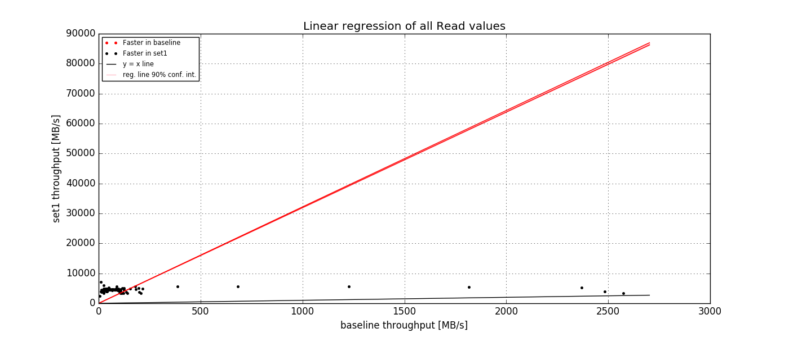
| Regression line |
|---|
| slope | 32.05387 |
| std. error | 0.08326 |
| ci. max 90% | 31.91603 |
| ci. min. 90% | 32.19171 |
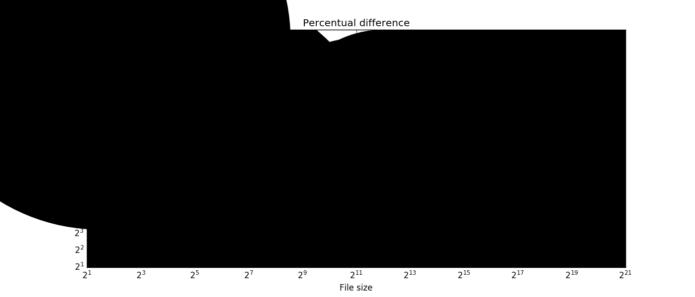
Back on top
Re-read
| Re-read |
File size [kB] |
4 |
8 |
16 |
32 |
64 |
128 |
256 |
512 |
1024 |
2048 |
4096 |
8192 |
16384 |
32768 |
65536 |
131072 |
262144 |
524288 |
1048576 |
|---|
| baseline | first quartile |
3906.25 |
4197.96 |
3899.63 |
3774.66 |
3866.11 |
4039.02 |
3974.8 |
3951.05 |
3983.93 |
4118.51 |
4200.03 |
3914.06 |
3552.46 |
3662.57 |
3641.54 |
3630.8 |
3652.54 |
3671.51 |
3683.82 |
| median |
3906.25 |
5508.27 |
4146.35 |
4397.55 |
4457.8 |
4167.44 |
4099.11 |
4204.35 |
4272.03 |
4465.08 |
4356.81 |
3999.2 |
3657.2 |
3710.97 |
3746.6 |
3734.4 |
3756.14 |
3780.97 |
3784.7 |
| third quartile |
3906.25 |
7812.5 |
5117.72 |
4435.71 |
4783.15 |
4450.45 |
4504.41 |
4750.25 |
4651.01 |
4665.42 |
4519.38 |
4078.67 |
3759.43 |
3758.46 |
3781.38 |
3782.62 |
3798.12 |
3796.76 |
3815.13 |
| mean val. |
3906.25 |
5810.49 |
4513.42 |
4188.16 |
4279.08 |
4276.11 |
4298.5 |
4378.25 |
4418.63 |
4442.52 |
4379.49 |
3977.68 |
3631.21 |
3605.03 |
3610.83 |
3599.76 |
3626.06 |
3643.64 |
3648.85 |
| standard dev. |
0.0 |
1931.59 |
656.83 |
542.18 |
601.82 |
660.74 |
543.19 |
619.74 |
547.59 |
470.86 |
379.24 |
196.86 |
184.83 |
255.77 |
296.54 |
342.18 |
322.96 |
331.78 |
327.83 |
| ci. min. 90% |
3906.25 |
4690.79 |
4214.71 |
3978.53 |
4073.15 |
4071.14 |
4143.25 |
4213.15 |
4281.47 |
4330.88 |
4293.91 |
3935.21 |
3592.95 |
3540.96 |
3536.56 |
3514.05 |
3545.16 |
3560.54 |
3566.74 |
| ci. max. 90% |
3906.25 |
6930.19 |
4812.13 |
4397.79 |
4485.01 |
4481.09 |
4453.76 |
4543.35 |
4555.78 |
4554.16 |
4465.07 |
4020.15 |
3669.47 |
3669.09 |
3685.11 |
3685.47 |
3706.95 |
3726.74 |
3730.96 |
| geom. mean |
3906.25 |
5514.86 |
4469.36 |
4154.63 |
4236.65 |
4229.02 |
4267.35 |
4337.54 |
4387.04 |
4418.97 |
4363.7 |
3972.62 |
3626.43 |
3595.65 |
3598.02 |
3582.34 |
3610.89 |
3627.73 |
3633.32 |
| minimum |
3906.25 |
3721.23 |
3899.63 |
3466.99 |
3128.0 |
3200.67 |
3568.94 |
3378.11 |
3570.21 |
3751.94 |
3669.71 |
3357.19 |
3146.54 |
3056.11 |
2893.56 |
2666.21 |
2932.99 |
3007.25 |
3008.85 |
| maximum |
3906.25 |
7812.5 |
5551.22 |
5283.95 |
5263.33 |
5649.31 |
5583.3 |
5670.96 |
5715.82 |
5649.63 |
5421.09 |
4303.06 |
3900.59 |
3884.87 |
3934.05 |
3942.69 |
3963.76 |
3986.73 |
3984.11 |
| set1 | first quartile |
3906.25 |
4495.56 |
4508.68 |
4267.46 |
4783.15 |
4606.87 |
4504.41 |
4588.4 |
4692.63 |
4785.82 |
4993.51 |
4964.25 |
4365.43 |
3826.39 |
4370.08 |
4330.17 |
4358.27 |
4369.45 |
4383.47 |
| median |
3906.25 |
6818.58 |
5117.72 |
5079.19 |
4783.15 |
4818.57 |
4814.27 |
5244.12 |
5231.07 |
5311.58 |
5419.34 |
5115.55 |
4589.64 |
4483.07 |
4502.98 |
4508.46 |
4518.64 |
4518.7 |
4523.71 |
| third quartile |
3906.25 |
7812.5 |
5551.22 |
5079.19 |
5159.74 |
5415.88 |
5553.73 |
5610.27 |
5556.8 |
5525.89 |
5536.5 |
5266.91 |
4697.59 |
4591.02 |
4569.83 |
4567.64 |
4572.42 |
4575.42 |
4559.68 |
| mean val. |
3806.86 |
6286.94 |
5408.11 |
4588.57 |
4764.48 |
4920.02 |
4945.36 |
5098.18 |
5095.67 |
5145.62 |
5253.11 |
4978.22 |
4420.98 |
4306.89 |
4326.81 |
4327.34 |
4339.57 |
4344.03 |
4351.5 |
| standard dev. |
222.25 |
1822.88 |
1383.3 |
846.61 |
450.15 |
570.14 |
599.27 |
592.59 |
517.36 |
507.16 |
415.79 |
430.01 |
426.1 |
444.19 |
438.94 |
445.83 |
452.58 |
455.08 |
452.51 |
| ci. min. 90% |
3594.97 |
5230.25 |
4779.03 |
4261.23 |
4610.44 |
4743.15 |
4774.07 |
4940.31 |
4966.08 |
5025.37 |
5159.28 |
4885.45 |
4332.77 |
4195.63 |
4216.87 |
4215.68 |
4226.21 |
4230.04 |
4238.16 |
| ci. max. 90% |
4018.75 |
7343.63 |
6037.19 |
4915.91 |
4918.51 |
5096.88 |
5116.64 |
5256.04 |
5225.25 |
5265.87 |
5346.94 |
5070.99 |
4509.19 |
4418.15 |
4436.76 |
4439.01 |
4452.93 |
4458.01 |
4464.84 |
| geom. mean |
3801.38 |
6003.85 |
5256.25 |
4479.41 |
4743.23 |
4887.93 |
4909.65 |
5063.39 |
5069.06 |
5119.66 |
5235.77 |
4958.3 |
4399.03 |
4282.8 |
4303.08 |
4302.89 |
4314.45 |
4318.65 |
4326.44 |
| minimum |
3409.29 |
3721.23 |
3899.63 |
1729.05 |
3923.98 |
4008.14 |
3900.87 |
4003.68 |
4065.01 |
3922.1 |
4073.32 |
3849.84 |
3437.11 |
3418.1 |
3429.62 |
3442.08 |
3458.43 |
3458.29 |
3460.55 |
| maximum |
3906.25 |
7812.5 |
8395.92 |
5283.95 |
5600.69 |
5971.0 |
5673.94 |
5877.57 |
5715.82 |
5954.41 |
5730.3 |
5559.23 |
4903.54 |
4870.58 |
4852.08 |
4830.03 |
4852.53 |
4838.95 |
4842.29 |
| ttest equality |
SAME |
SAME |
DIFF |
DIFF |
DIFF |
DIFF |
DIFF |
DIFF |
DIFF |
DIFF |
DIFF |
DIFF |
DIFF |
DIFF |
DIFF |
DIFF |
DIFF |
DIFF |
DIFF |
| baseline set1 difference |
0.0 % |
23.79 % |
23.43 % |
15.5 % |
7.3 % |
15.62 % |
17.45 % |
24.73 % |
22.45 % |
18.96 % |
24.39 % |
27.91 % |
25.5 % |
20.81 % |
20.19 % |
20.73 % |
20.3 % |
19.51 % |
19.53 % |
| ttest p-value |
0.3466 |
0.5775 |
0.0316 |
0.0829 |
0.0022 |
0.0002 |
0.0 |
0.0 |
0.0 |
0.0 |
0.0 |
0.0 |
0.0 |
0.0 |
0.0 |
0.0 |
0.0 |
0.0 |
0.0 |
| Re-read |
Block size [kB] |
4 |
8 |
16 |
32 |
64 |
128 |
256 |
512 |
1024 |
2048 |
4096 |
8192 |
16384 |
|---|
| baseline | first quartile |
3476.58 |
3964.62 |
3961.52 |
3917.91 |
3909.48 |
3865.31 |
3725.82 |
3744.23 |
3749.47 |
3774.02 |
3657.97 |
3101.63 |
3007.88 |
| median |
3721.23 |
4167.44 |
4039.02 |
3989.99 |
3994.19 |
3934.4 |
3782.31 |
3783.3 |
3793.8 |
3797.44 |
3685.4 |
3123.21 |
3024.21 |
| third quartile |
3877.22 |
4551.6 |
4368.83 |
4046.74 |
4272.45 |
4579.92 |
4434.18 |
4496.82 |
4307.83 |
4074.99 |
3853.55 |
3227.26 |
3136.52 |
| mean val. |
3700.43 |
4541.82 |
4164.26 |
3966.37 |
4122.31 |
4238.08 |
4100.35 |
4141.12 |
4094.18 |
4078.03 |
3918.65 |
3252.03 |
3079.44 |
| standard dev. |
314.7 |
1023.28 |
350.76 |
210.47 |
332.15 |
520.58 |
528.89 |
607.4 |
585.14 |
552.46 |
501.83 |
298.48 |
174.56 |
| ci. min. 90% |
3635.28 |
4321.06 |
4085.11 |
3916.47 |
4058.42 |
4134.34 |
3990.86 |
4010.08 |
3962.13 |
3947.04 |
3792.95 |
3172.52 |
3029.54 |
| ci. max. 90% |
3765.58 |
4762.57 |
4243.42 |
4016.28 |
4186.2 |
4341.82 |
4209.84 |
4272.16 |
4226.22 |
4209.02 |
4044.35 |
3331.55 |
3129.33 |
| geom. mean |
3687.97 |
4454.67 |
4150.66 |
3960.76 |
4109.57 |
4208.55 |
4069.23 |
4101.66 |
4057.89 |
4045.93 |
3891.56 |
3239.96 |
3074.75 |
| minimum |
3128.0 |
3552.46 |
3623.24 |
3466.99 |
3200.67 |
3567.57 |
3270.67 |
3592.4 |
3584.15 |
3670.6 |
3620.32 |
2909.75 |
2666.21 |
| maximum |
5117.72 |
7812.5 |
5159.74 |
4550.21 |
5263.33 |
5649.31 |
5583.3 |
5670.96 |
5715.82 |
5649.63 |
5421.09 |
4077.68 |
3500.21 |
| set1 | first quartile |
3906.25 |
4722.15 |
4542.16 |
4793.2 |
4813.27 |
4689.29 |
4493.0 |
4515.84 |
4532.85 |
4525.41 |
4372.25 |
3597.14 |
3448.56 |
| median |
4065.01 |
4845.48 |
4747.77 |
4902.71 |
5200.98 |
4752.05 |
4599.08 |
4582.66 |
4566.33 |
4547.74 |
4409.14 |
3627.42 |
3460.55 |
| third quartile |
4184.25 |
5118.84 |
5054.75 |
5012.6 |
5556.48 |
5553.73 |
5491.32 |
5410.77 |
5318.79 |
4989.47 |
4616.16 |
3705.28 |
3480.5 |
| mean val. |
4146.37 |
5218.26 |
4781.81 |
4894.07 |
5177.8 |
5085.18 |
4919.32 |
4906.9 |
4863.05 |
4800.79 |
4560.4 |
3678.81 |
3464.51 |
| standard dev. |
699.77 |
961.48 |
297.31 |
308.38 |
395.59 |
477.18 |
511.52 |
467.21 |
472.34 |
413.36 |
309.3 |
121.17 |
21.73 |
| ci. min. 90% |
4001.5 |
5010.83 |
4714.72 |
4820.96 |
5101.71 |
4990.09 |
4813.43 |
4806.11 |
4756.46 |
4702.78 |
4482.93 |
3646.53 |
3458.3 |
| ci. max. 90% |
4291.23 |
5425.68 |
4848.9 |
4967.19 |
5253.89 |
5180.27 |
5025.22 |
5007.69 |
4969.64 |
4898.8 |
4637.87 |
3711.09 |
3470.72 |
| geom. mean |
4094.01 |
5147.68 |
4772.96 |
4883.77 |
5162.92 |
5063.44 |
4893.43 |
4885.63 |
4841.14 |
4784.34 |
4550.83 |
3676.93 |
3464.44 |
| minimum |
1729.05 |
4416.86 |
4390.92 |
3713.04 |
4583.37 |
4300.87 |
3826.39 |
4441.97 |
3813.57 |
4482.47 |
4320.24 |
3582.85 |
3418.1 |
| maximum |
7812.5 |
8395.92 |
5551.22 |
5442.02 |
5794.01 |
5971.0 |
5673.94 |
5686.33 |
5708.04 |
5699.53 |
5384.55 |
4060.9 |
3503.5 |
| ttest equality |
DIFF |
DIFF |
DIFF |
DIFF |
DIFF |
DIFF |
DIFF |
DIFF |
DIFF |
DIFF |
DIFF |
DIFF |
DIFF |
| baseline set1 difference |
9.24 % |
16.27 % |
17.55 % |
22.88 % |
30.21 % |
20.78 % |
21.59 % |
21.13 % |
20.36 % |
19.76 % |
19.64 % |
16.14 % |
14.43 % |
| ttest p-value |
0.0 |
0.0003 |
0.0 |
0.0 |
0.0 |
0.0 |
0.0 |
0.0 |
0.0 |
0.0 |
0.0 |
0.0 |
0.0 |
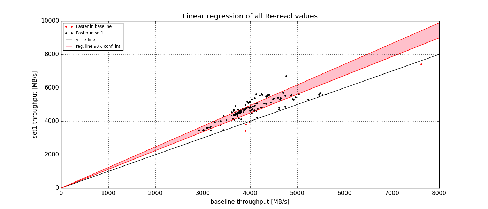
| Regression line |
|---|
| slope | 1.17927 |
| std. error | 0.03383 |
| ci. max 90% | 1.12326 |
| ci. min. 90% | 1.23528 |
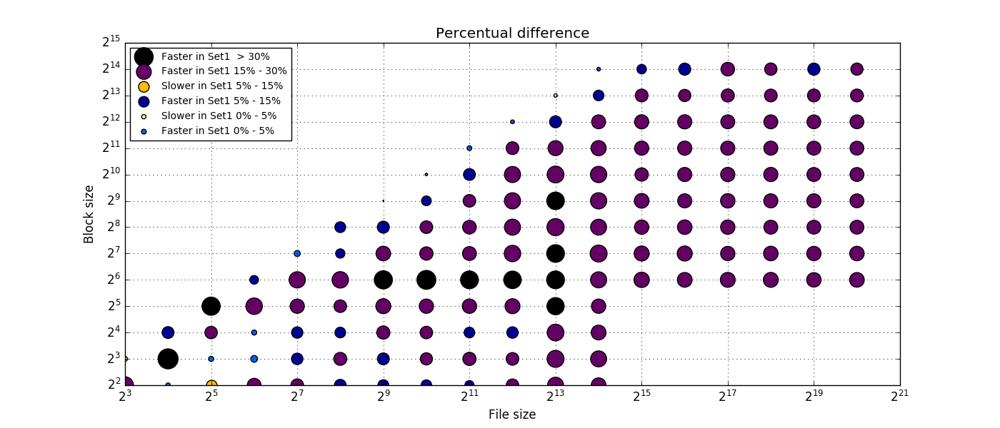
Back on top
Random read
| Random read |
File size [kB] |
4 |
8 |
16 |
32 |
64 |
128 |
256 |
512 |
1024 |
2048 |
4096 |
8192 |
16384 |
32768 |
65536 |
131072 |
262144 |
524288 |
1048576 |
|---|
| baseline | first quartile |
974.91 |
1668.67 |
2539.59 |
3116.95 |
3702.3 |
4039.02 |
4231.44 |
4370.89 |
4486.82 |
4657.44 |
4799.53 |
4617.36 |
4191.73 |
4181.39 |
4255.89 |
4298.03 |
4311.28 |
4321.4 |
4346.87 |
| median |
974.91 |
1949.81 |
2641.97 |
3466.99 |
3923.98 |
4167.44 |
4623.23 |
4720.07 |
4947.25 |
5095.42 |
5209.01 |
5060.4 |
4508.25 |
4443.29 |
4451.24 |
4452.48 |
4463.1 |
4474.48 |
4459.13 |
| third quartile |
974.91 |
2042.34 |
2641.97 |
3466.99 |
4173.89 |
4637.5 |
4904.34 |
5055.75 |
5179.4 |
5306.6 |
5386.3 |
5200.18 |
4613.62 |
4490.57 |
4497.17 |
4495.32 |
4500.46 |
4506.61 |
4509.7 |
| mean val. |
1035.81 |
1971.5 |
2652.85 |
3345.17 |
3922.9 |
4233.24 |
4474.67 |
4666.27 |
4809.47 |
4927.23 |
5036.24 |
4853.18 |
4284.52 |
4234.33 |
4242.43 |
4261.98 |
4274.21 |
4287.43 |
4295.05 |
| standard dev. |
136.19 |
361.16 |
231.85 |
305.6 |
387.96 |
417.74 |
504.54 |
539.37 |
570.82 |
537.79 |
476.2 |
506.18 |
494.21 |
433.98 |
433.56 |
433.18 |
433.49 |
432.05 |
395.78 |
| ci. min. 90% |
905.97 |
1762.14 |
2547.41 |
3227.01 |
3790.14 |
4103.65 |
4330.46 |
4522.58 |
4666.5 |
4799.71 |
4928.78 |
4743.98 |
4182.21 |
4125.63 |
4133.83 |
4153.48 |
4165.63 |
4179.21 |
4195.91 |
| ci. max. 90% |
1165.65 |
2180.86 |
2758.29 |
3463.33 |
4055.65 |
4362.83 |
4618.87 |
4809.95 |
4952.45 |
5054.74 |
5143.7 |
4962.38 |
4386.83 |
4343.03 |
4351.02 |
4370.48 |
4382.78 |
4395.65 |
4394.18 |
| geom. mean |
1029.38 |
1942.9 |
2643.73 |
3331.62 |
3903.93 |
4212.44 |
4445.62 |
4633.97 |
4773.87 |
4895.85 |
5011.96 |
4824.97 |
4252.82 |
4210.69 |
4218.67 |
4238.47 |
4250.74 |
4264.21 |
4275.55 |
| minimum |
974.91 |
1574.95 |
2198.77 |
2800.34 |
3128.0 |
3280.78 |
3532.87 |
3496.38 |
3484.2 |
3661.86 |
3697.21 |
3757.58 |
2811.45 |
3307.83 |
3187.89 |
3394.78 |
3433.38 |
3441.53 |
3432.47 |
| maximum |
1279.43 |
2558.86 |
3149.91 |
3877.22 |
4534.92 |
4818.57 |
5119.86 |
5492.72 |
5616.33 |
5604.34 |
5548.38 |
5482.92 |
4819.38 |
4692.79 |
4641.02 |
4693.1 |
4682.13 |
4688.51 |
4686.29 |
| set1 | first quartile |
1860.61 |
2558.86 |
3149.91 |
3863.3 |
4457.8 |
4864.55 |
5094.98 |
5052.71 |
5128.73 |
5296.49 |
5201.82 |
4930.98 |
4290.63 |
3858.29 |
4335.42 |
4327.69 |
4336.55 |
4355.63 |
4374.59 |
| median |
1860.61 |
2775.61 |
3899.63 |
4397.55 |
5159.74 |
5415.88 |
5438.51 |
5464.25 |
5491.32 |
5451.38 |
5463.46 |
5280.59 |
4624.43 |
4484.27 |
4490.25 |
4480.54 |
4492.57 |
4496.67 |
4500.77 |
| third quartile |
1860.61 |
3721.23 |
3899.63 |
4733.65 |
5263.33 |
5695.46 |
5673.94 |
5614.03 |
5616.33 |
5556.08 |
5587.18 |
5471.31 |
4797.67 |
4577.4 |
4529.04 |
4531.75 |
4549.56 |
4561.7 |
4548.94 |
| mean val. |
1792.05 |
3053.93 |
3646.91 |
4376.83 |
4890.14 |
5158.26 |
5260.28 |
5241.12 |
5288.71 |
5311.93 |
5309.2 |
5071.26 |
4441.9 |
4292.77 |
4299.36 |
4292.74 |
4303.09 |
4305.63 |
4319.91 |
| standard dev. |
304.58 |
726.78 |
413.02 |
675.37 |
739.35 |
811.39 |
606.4 |
597.33 |
557.26 |
521.0 |
520.0 |
605.21 |
530.88 |
445.78 |
425.52 |
424.15 |
430.52 |
433.76 |
410.31 |
| ci. min. 90% |
1501.66 |
2632.62 |
3459.08 |
4115.7 |
4637.15 |
4906.55 |
5086.96 |
5081.99 |
5149.13 |
5188.4 |
5191.86 |
4940.7 |
4332.0 |
4181.11 |
4192.78 |
4186.51 |
4195.26 |
4196.98 |
4217.14 |
| ci. max. 90% |
2082.44 |
3475.23 |
3834.74 |
4637.95 |
5143.13 |
5409.97 |
5433.6 |
5400.25 |
5428.29 |
5435.46 |
5426.55 |
5201.83 |
4551.8 |
4404.42 |
4405.94 |
4398.98 |
4410.93 |
4414.27 |
4422.68 |
| geom. mean |
1768.47 |
2975.74 |
3623.87 |
4326.46 |
4833.07 |
5087.72 |
5221.8 |
5204.26 |
5256.31 |
5282.92 |
5280.64 |
5032.21 |
4407.91 |
4268.44 |
4276.91 |
4270.41 |
4280.11 |
4282.24 |
4299.16 |
| minimum |
1279.43 |
1949.81 |
3005.45 |
3466.99 |
3650.74 |
3051.63 |
3843.67 |
3906.72 |
3906.02 |
3794.37 |
3872.14 |
3811.35 |
3429.91 |
3416.27 |
3435.15 |
3446.06 |
3450.04 |
3363.06 |
3471.73 |
| maximum |
2098.98 |
4197.96 |
4146.35 |
5283.95 |
6270.53 |
6255.99 |
5930.67 |
5961.11 |
5951.01 |
5971.37 |
5935.04 |
5895.22 |
5156.35 |
4835.14 |
4724.99 |
4705.89 |
4716.37 |
4696.12 |
4684.42 |
| ttest equality |
DIFF |
DIFF |
DIFF |
DIFF |
DIFF |
DIFF |
DIFF |
DIFF |
DIFF |
DIFF |
DIFF |
DIFF |
DIFF |
SAME |
SAME |
SAME |
SAME |
SAME |
SAME |
| baseline set1 difference |
90.85 % |
42.35 % |
47.6 % |
26.84 % |
31.49 % |
29.96 % |
17.63 % |
15.77 % |
11.0 % |
6.99 % |
4.88 % |
4.35 % |
2.58 % |
0.92 % |
0.88 % |
0.63 % |
0.66 % |
0.5 % |
0.93 % |
| ttest p-value |
0.001 |
0.0005 |
0.0 |
0.0 |
0.0 |
0.0 |
0.0 |
0.0 |
0.0001 |
0.0004 |
0.0049 |
0.0343 |
0.0826 |
0.5303 |
0.5312 |
0.7344 |
0.7519 |
0.8424 |
0.7705 |
| Random read |
Block size [kB] |
4 |
8 |
16 |
32 |
64 |
128 |
256 |
512 |
1024 |
2048 |
4096 |
8192 |
16384 |
|---|
| baseline | first quartile |
2861.48 |
3643.47 |
3966.06 |
4304.3 |
4641.9 |
4603.88 |
4433.4 |
4463.71 |
4489.58 |
4483.95 |
4276.85 |
3561.11 |
3417.96 |
| median |
3557.92 |
4349.27 |
4238.33 |
4675.5 |
4683.41 |
4666.72 |
4498.27 |
4497.01 |
4506.61 |
4498.82 |
4318.19 |
3569.8 |
3434.75 |
| third quartile |
3676.62 |
4516.06 |
4515.38 |
4794.84 |
4903.23 |
5103.74 |
5127.66 |
5343.53 |
5344.59 |
4899.15 |
4378.87 |
3642.08 |
3446.39 |
| mean val. |
3144.61 |
4017.53 |
4151.56 |
4538.77 |
4770.39 |
4847.72 |
4754.43 |
4836.7 |
4830.89 |
4727.73 |
4405.99 |
3630.09 |
3386.83 |
| standard dev. |
856.16 |
832.41 |
599.18 |
446.82 |
261.4 |
298.11 |
374.3 |
447.91 |
452.55 |
392.1 |
273.22 |
148.13 |
150.54 |
| ci. min. 90% |
2967.37 |
3837.95 |
4016.35 |
4432.83 |
4720.11 |
4788.32 |
4676.95 |
4740.07 |
4728.76 |
4634.76 |
4337.56 |
3590.63 |
3343.8 |
| ci. max. 90% |
3321.85 |
4197.12 |
4286.78 |
4644.71 |
4820.67 |
4907.13 |
4831.92 |
4933.33 |
4933.01 |
4820.7 |
4474.43 |
3669.55 |
3429.85 |
| geom. mean |
2971.28 |
3913.05 |
4103.01 |
4515.57 |
4763.44 |
4838.89 |
4739.98 |
4816.84 |
4810.82 |
4712.71 |
4398.36 |
3627.23 |
3383.24 |
| minimum |
974.91 |
1949.81 |
2641.97 |
3466.99 |
4173.89 |
4432.0 |
3970.73 |
4386.51 |
4421.4 |
4428.28 |
4087.81 |
3343.09 |
2811.45 |
| maximum |
3956.14 |
5178.77 |
5209.01 |
5322.88 |
5460.62 |
5486.68 |
5375.92 |
5548.38 |
5616.33 |
5604.34 |
5319.67 |
4030.17 |
3494.92 |
| set1 | first quartile |
3466.99 |
4397.55 |
4783.15 |
5268.49 |
4683.32 |
4629.68 |
4460.9 |
4492.56 |
4521.05 |
4514.82 |
4338.11 |
3591.17 |
3449.95 |
| median |
3811.35 |
4909.88 |
5221.98 |
5455.46 |
5600.69 |
5169.18 |
4739.39 |
4601.85 |
4550.3 |
4551.16 |
4376.52 |
3605.7 |
3459.69 |
| third quartile |
3906.72 |
5055.75 |
5295.75 |
5616.67 |
5846.48 |
5649.31 |
5442.02 |
5491.96 |
5453.89 |
5073.63 |
4486.84 |
3662.07 |
3480.37 |
| mean val. |
3484.23 |
4646.87 |
5030.97 |
5367.88 |
5311.01 |
5142.1 |
4931.0 |
4921.95 |
4866.49 |
4800.64 |
4502.28 |
3664.84 |
3466.35 |
| standard dev. |
652.69 |
554.15 |
449.22 |
344.9 |
568.73 |
503.56 |
509.5 |
487.95 |
489.5 |
408.94 |
299.52 |
127.6 |
38.56 |
| ci. min. 90% |
3349.12 |
4527.32 |
4929.6 |
5286.1 |
5201.62 |
5041.75 |
4825.53 |
4816.68 |
4756.03 |
4703.68 |
4427.26 |
3630.85 |
3455.33 |
| ci. max. 90% |
3619.35 |
4766.42 |
5132.34 |
5449.65 |
5420.39 |
5242.45 |
5036.48 |
5027.22 |
4976.96 |
4897.6 |
4577.3 |
3698.84 |
3477.37 |
| geom. mean |
3402.98 |
4609.78 |
5009.21 |
5356.38 |
5280.79 |
5117.87 |
4905.08 |
4898.74 |
4842.93 |
4784.44 |
4493.3 |
3662.76 |
3466.14 |
| minimum |
1279.43 |
2775.61 |
3899.63 |
4397.55 |
4660.52 |
4526.77 |
3858.29 |
4445.06 |
3779.42 |
4475.54 |
4274.5 |
3577.08 |
3363.06 |
| maximum |
3996.05 |
5181.66 |
5472.41 |
5779.65 |
6270.53 |
5971.0 |
5609.6 |
5664.89 |
5708.04 |
5664.89 |
5389.74 |
4055.01 |
3608.69 |
| ttest equality |
DIFF |
DIFF |
DIFF |
DIFF |
DIFF |
DIFF |
DIFF |
SAME |
SAME |
SAME |
SAME |
SAME |
DIFF |
| baseline set1 difference |
7.12 % |
12.89 % |
23.21 % |
16.68 % |
19.59 % |
10.77 % |
5.36 % |
2.33 % |
0.97 % |
1.16 % |
1.35 % |
1.01 % |
0.73 % |
| ttest p-value |
0.0122 |
0.0 |
0.0 |
0.0 |
0.0 |
0.0 |
0.026 |
0.3208 |
0.6928 |
0.3651 |
0.1147 |
0.2644 |
0.0035 |
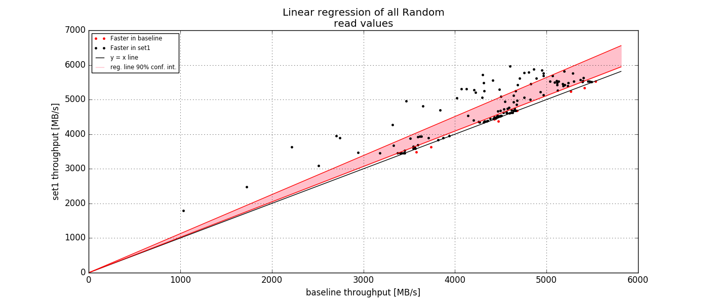
| Regression line |
|---|
| slope | 1.07528 |
| std. error | 0.03174 |
| ci. max 90% | 1.02274 |
| ci. min. 90% | 1.12782 |
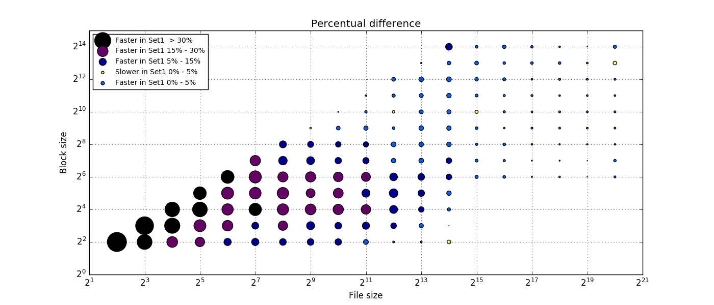
Back on top
Random write
| Random write |
File size [kB] |
4 |
8 |
16 |
32 |
64 |
128 |
256 |
512 |
1024 |
2048 |
4096 |
8192 |
16384 |
32768 |
65536 |
131072 |
262144 |
524288 |
1048576 |
|---|
| baseline | first quartile |
11.56 |
14.23 |
17.14 |
27.03 |
32.17 |
34.54 |
35.08 |
54.74 |
58.18 |
66.37 |
45.66 |
39.14 |
38.1 |
37.74 |
37.48 |
37.36 |
37.26 |
36.77 |
36.98 |
| median |
13.07 |
20.92 |
31.69 |
43.72 |
58.14 |
92.46 |
115.85 |
163.08 |
192.83 |
68.84 |
47.67 |
39.92 |
38.43 |
37.79 |
37.51 |
37.38 |
37.3 |
37.27 |
37.01 |
| third quartile |
15.76 |
27.66 |
55.81 |
74.67 |
122.11 |
206.08 |
354.58 |
373.76 |
412.06 |
71.4 |
48.66 |
40.58 |
38.66 |
37.9 |
37.54 |
37.4 |
37.31 |
37.28 |
37.26 |
| mean val. |
14.17 |
21.26 |
40.78 |
56.13 |
84.04 |
137.66 |
182.55 |
222.51 |
227.95 |
60.63 |
43.5 |
37.41 |
36.39 |
37.83 |
37.44 |
36.86 |
37.12 |
36.88 |
36.53 |
| standard dev. |
3.34 |
8.19 |
28.26 |
38.71 |
68.58 |
134.36 |
164.15 |
193.19 |
172.79 |
18.89 |
10.07 |
6.89 |
6.12 |
0.16 |
0.53 |
2.14 |
0.4 |
1.2 |
1.97 |
| ci. min. 90% |
10.99 |
16.51 |
27.93 |
41.16 |
60.57 |
95.98 |
135.63 |
171.05 |
184.68 |
56.15 |
41.22 |
35.92 |
35.13 |
37.8 |
37.31 |
36.33 |
37.03 |
36.58 |
36.03 |
| ci. max. 90% |
17.36 |
26.01 |
53.63 |
71.09 |
107.51 |
179.34 |
229.47 |
273.98 |
271.23 |
65.11 |
45.77 |
38.9 |
37.66 |
37.87 |
37.58 |
37.4 |
37.22 |
37.18 |
37.02 |
| geom. mean |
13.88 |
19.81 |
33.06 |
44.55 |
58.62 |
83.63 |
105.72 |
127.85 |
138.51 |
55.62 |
41.71 |
36.46 |
35.61 |
37.83 |
37.44 |
36.78 |
37.12 |
36.86 |
36.47 |
| minimum |
11.25 |
11.75 |
14.39 |
14.82 |
13.61 |
15.26 |
15.62 |
12.09 |
12.96 |
12.52 |
15.85 |
15.69 |
15.62 |
37.59 |
33.97 |
23.41 |
36.26 |
29.28 |
27.12 |
| maximum |
19.23 |
34.57 |
107.82 |
145.34 |
245.04 |
565.08 |
527.5 |
665.8 |
497.03 |
74.76 |
50.19 |
41.27 |
39.54 |
38.39 |
37.76 |
37.49 |
37.37 |
37.3 |
37.27 |
| set1 | first quartile |
549.69 |
804.55 |
1043.47 |
1485.65 |
1835.67 |
2018.0 |
2127.8 |
2393.61 |
2597.4 |
2679.38 |
2710.9 |
2623.8 |
2329.29 |
2596.15 |
2651.64 |
2661.56 |
2659.79 |
2657.92 |
2914.54 |
| median |
568.78 |
918.03 |
1289.93 |
1812.61 |
2323.85 |
2692.23 |
3049.91 |
3142.72 |
3366.74 |
3450.96 |
3466.51 |
3154.8 |
2765.34 |
2823.57 |
2848.52 |
2852.0 |
2861.14 |
2867.69 |
3110.64 |
| third quartile |
634.9 |
969.3 |
1499.19 |
2122.43 |
2707.94 |
3200.67 |
3384.62 |
3433.45 |
3484.2 |
3525.28 |
3525.51 |
3373.73 |
2906.93 |
2869.94 |
2893.07 |
2904.14 |
2919.63 |
2917.56 |
3333.8 |
| mean val. |
592.71 |
909.11 |
1251.56 |
1791.81 |
2221.44 |
2544.66 |
2741.78 |
2858.93 |
2970.22 |
3057.78 |
3097.38 |
2918.63 |
2533.38 |
2744.04 |
2766.97 |
2772.73 |
2779.13 |
2784.44 |
3127.58 |
| standard dev. |
51.59 |
108.43 |
404.4 |
446.22 |
627.7 |
711.04 |
742.93 |
729.09 |
730.94 |
711.41 |
685.94 |
622.6 |
514.33 |
162.0 |
166.29 |
169.35 |
171.3 |
172.83 |
318.19 |
| ci. min. 90% |
543.52 |
846.25 |
1067.65 |
1619.27 |
2006.66 |
2324.08 |
2529.44 |
2664.7 |
2787.14 |
2889.11 |
2942.58 |
2784.32 |
2426.91 |
2703.46 |
2725.32 |
2730.31 |
2736.23 |
2741.15 |
3047.89 |
| ci. max. 90% |
641.9 |
971.96 |
1435.47 |
1964.34 |
2436.23 |
2765.23 |
2954.12 |
3053.16 |
3153.3 |
3226.46 |
3252.17 |
3052.95 |
2639.86 |
2784.61 |
2808.62 |
2815.15 |
2822.04 |
2827.73 |
3207.28 |
| geom. mean |
590.95 |
903.33 |
1165.96 |
1736.23 |
2124.12 |
2433.16 |
2620.7 |
2744.66 |
2855.6 |
2949.81 |
2997.24 |
2833.84 |
2467.77 |
2739.23 |
2761.92 |
2767.49 |
2773.79 |
2779.02 |
3111.16 |
| minimum |
549.69 |
783.82 |
364.48 |
1151.72 |
1057.86 |
1341.56 |
1275.94 |
1351.43 |
1329.92 |
1377.48 |
1417.98 |
1364.96 |
1215.44 |
2433.87 |
2447.71 |
2457.25 |
2466.11 |
2471.34 |
2219.25 |
| maximum |
660.49 |
1099.39 |
1733.5 |
2391.58 |
3128.0 |
3365.01 |
3474.34 |
3573.84 |
3676.62 |
3636.46 |
3693.14 |
3532.12 |
3002.39 |
2930.4 |
2943.89 |
2945.84 |
2952.95 |
2962.79 |
3749.23 |
| ttest equality |
DIFF |
DIFF |
DIFF |
DIFF |
DIFF |
DIFF |
DIFF |
DIFF |
DIFF |
DIFF |
DIFF |
DIFF |
DIFF |
DIFF |
DIFF |
DIFF |
DIFF |
DIFF |
DIFF |
| baseline set1 difference |
4252.64 % |
4288.8 % |
3970.04 % |
4045.84 % |
3897.02 % |
2811.62 % |
2532.56 % |
1827.11 % |
1646.01 % |
4913.35 % |
7171.3 % |
7802.54 % |
7095.31 % |
7372.69 % |
7494.67 % |
7530.16 % |
7569.85 % |
7594.46 % |
8305.8 % |
| ttest p-value |
0.0 |
0.0 |
0.0 |
0.0 |
0.0 |
0.0 |
0.0 |
0.0 |
0.0 |
0.0 |
0.0 |
0.0 |
0.0 |
0.0 |
0.0 |
0.0 |
0.0 |
0.0 |
0.0 |
| Random write |
Block size [kB] |
4 |
8 |
16 |
32 |
64 |
128 |
256 |
512 |
1024 |
2048 |
4096 |
8192 |
16384 |
|---|
| baseline | first quartile |
15.62 |
30.65 |
47.72 |
47.46 |
37.35 |
37.33 |
37.39 |
37.31 |
37.32 |
37.3 |
37.3 |
37.27 |
37.28 |
| median |
16.15 |
32.31 |
61.05 |
97.9 |
39.43 |
39.39 |
38.43 |
38.37 |
37.78 |
37.77 |
37.51 |
37.46 |
37.37 |
| third quartile |
16.76 |
35.45 |
68.57 |
121.77 |
192.31 |
307.64 |
74.68 |
55.16 |
46.17 |
40.44 |
38.98 |
38.23 |
37.8 |
| mean val. |
15.86 |
32.55 |
59.28 |
88.36 |
96.02 |
132.19 |
134.32 |
115.36 |
80.24 |
42.09 |
38.81 |
37.75 |
37.32 |
| standard dev. |
1.83 |
3.78 |
14.37 |
36.11 |
78.82 |
146.67 |
171.04 |
167.89 |
123.04 |
10.15 |
3.34 |
1.09 |
1.47 |
| ci. min. 90% |
15.48 |
31.73 |
56.03 |
79.8 |
80.86 |
102.96 |
98.91 |
79.14 |
52.48 |
39.69 |
37.97 |
37.46 |
36.9 |
| ci. max. 90% |
16.24 |
33.37 |
62.52 |
96.92 |
111.18 |
161.42 |
169.73 |
151.58 |
108.01 |
44.5 |
39.64 |
38.04 |
37.74 |
| geom. mean |
15.75 |
32.32 |
57.56 |
79.84 |
69.55 |
76.16 |
71.43 |
62.0 |
50.96 |
41.19 |
38.68 |
37.73 |
37.29 |
| minimum |
11.25 |
23.61 |
37.54 |
38.01 |
23.41 |
33.97 |
35.02 |
35.38 |
27.12 |
36.28 |
32.22 |
35.5 |
29.66 |
| maximum |
20.92 |
38.29 |
107.82 |
145.34 |
245.04 |
565.08 |
527.5 |
665.8 |
497.03 |
74.04 |
48.58 |
40.58 |
39.38 |
| set1 | first quartile |
1151.72 |
1725.85 |
2176.9 |
2707.94 |
2670.01 |
2810.87 |
2861.14 |
2902.48 |
2932.41 |
2928.29 |
2865.83 |
2528.98 |
2452.33 |
| median |
1331.99 |
2018.0 |
2577.58 |
3048.8 |
3128.0 |
3180.8 |
2972.21 |
2923.85 |
2967.87 |
2947.99 |
2891.15 |
2534.65 |
2462.16 |
| third quartile |
1399.04 |
2136.12 |
2658.64 |
3176.06 |
3454.92 |
3519.86 |
3436.82 |
3422.71 |
3469.65 |
3298.89 |
2976.05 |
2589.27 |
2473.39 |
| mean val. |
1203.56 |
1856.26 |
2398.08 |
2925.06 |
3074.3 |
3176.52 |
3134.01 |
3128.24 |
3168.17 |
3107.1 |
2975.49 |
2601.64 |
2564.78 |
| standard dev. |
286.1 |
360.24 |
339.33 |
312.65 |
375.66 |
349.17 |
298.38 |
262.36 |
284.7 |
242.93 |
191.01 |
212.63 |
285.62 |
| ci. min. 90% |
1144.33 |
1778.55 |
2321.5 |
2850.93 |
3002.05 |
3106.94 |
3072.24 |
3071.64 |
3103.92 |
3049.5 |
2927.65 |
2544.99 |
2483.14 |
| ci. max. 90% |
1262.79 |
1933.98 |
2474.65 |
2999.19 |
3146.55 |
3246.1 |
3195.78 |
3184.84 |
3232.42 |
3164.7 |
3023.33 |
2658.28 |
2646.41 |
| geom. mean |
1157.1 |
1813.58 |
2371.03 |
2907.46 |
3051.63 |
3157.63 |
3120.11 |
3117.61 |
3155.76 |
3098.15 |
2969.84 |
2594.26 |
2551.62 |
| minimum |
364.48 |
969.3 |
1400.17 |
2228.9 |
2619.5 |
2755.06 |
2573.79 |
2856.62 |
2596.15 |
2887.05 |
2802.18 |
2219.25 |
2433.17 |
| maximum |
1449.36 |
2173.89 |
2735.29 |
3241.59 |
3583.64 |
3693.14 |
3646.47 |
3526.99 |
3749.23 |
3565.36 |
3442.45 |
3558.69 |
3413.38 |
| ttest equality |
DIFF |
DIFF |
DIFF |
DIFF |
DIFF |
DIFF |
DIFF |
DIFF |
DIFF |
DIFF |
DIFF |
DIFF |
DIFF |
| baseline set1 difference |
8147.44 % |
6145.45 % |
4122.17 % |
3014.18 % |
7832.51 % |
7975.73 % |
7633.55 % |
7520.61 % |
7754.79 % |
7704.69 % |
7607.53 % |
6665.49 % |
6488.58 % |
| ttest p-value |
0.0 |
0.0 |
0.0 |
0.0 |
0.0 |
0.0 |
0.0 |
0.0 |
0.0 |
0.0 |
0.0 |
0.0 |
0.0 |
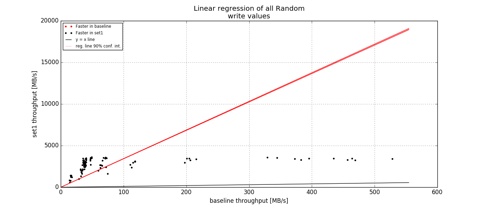
| Regression line |
|---|
| slope | 34.28241 |
| std. error | 0.07855 |
| ci. max 90% | 34.15238 |
| ci. min. 90% | 34.41245 |
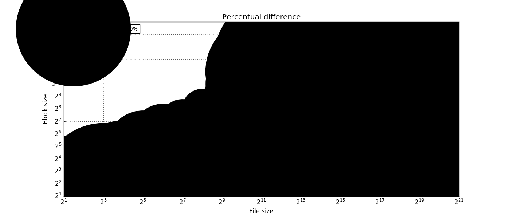
Back on top
Backwards read
| Backwards read |
File size [kB] |
4 |
8 |
16 |
32 |
64 |
128 |
256 |
512 |
1024 |
2048 |
4096 |
8192 |
16384 |
32768 |
65536 |
131072 |
262144 |
524288 |
1048576 |
|---|
| baseline | first quartile |
4.39 |
3.58 |
3.4 |
4.9 |
4.24 |
3.66 |
5.56 |
6.03 |
6.1 |
7.22 |
6.35 |
11.0 |
12.37 |
51.71 |
51.48 |
51.27 |
51.18 |
51.29 |
47.42 |
| median |
4.62 |
4.57 |
6.57 |
8.44 |
8.99 |
12.83 |
13.2 |
24.42 |
25.06 |
42.53 |
49.02 |
52.68 |
52.59 |
71.64 |
71.15 |
70.74 |
70.48 |
70.34 |
66.8 |
| third quartile |
4.68 |
8.95 |
15.47 |
16.16 |
18.92 |
27.4 |
54.84 |
56.04 |
70.73 |
68.76 |
81.52 |
80.57 |
90.23 |
99.9 |
98.66 |
98.02 |
97.83 |
97.66 |
95.6 |
| mean val. |
4.56 |
5.98 |
8.6 |
12.02 |
15.88 |
19.87 |
27.29 |
33.91 |
40.54 |
44.62 |
47.0 |
50.79 |
54.25 |
74.48 |
74.15 |
73.79 |
73.67 |
73.71 |
68.91 |
| standard dev. |
0.2 |
2.9 |
5.83 |
10.28 |
15.3 |
21.37 |
27.81 |
32.3 |
36.57 |
37.39 |
38.85 |
39.59 |
40.3 |
28.08 |
27.42 |
27.1 |
26.87 |
26.74 |
29.6 |
| ci. min. 90% |
4.37 |
4.3 |
5.95 |
8.05 |
10.64 |
13.24 |
19.34 |
25.31 |
31.38 |
35.75 |
38.23 |
42.25 |
45.91 |
67.45 |
67.28 |
67.01 |
66.94 |
67.01 |
61.49 |
| ci. max. 90% |
4.75 |
7.66 |
11.25 |
16.0 |
21.11 |
26.5 |
35.24 |
42.52 |
49.7 |
53.48 |
55.77 |
59.33 |
62.59 |
81.51 |
81.02 |
80.58 |
80.4 |
80.41 |
76.32 |
| geom. mean |
4.56 |
5.36 |
6.8 |
8.4 |
9.77 |
10.62 |
13.8 |
17.07 |
20.47 |
23.65 |
24.1 |
27.03 |
29.66 |
68.07 |
67.97 |
67.72 |
67.72 |
67.8 |
60.97 |
| minimum |
4.33 |
2.93 |
2.59 |
2.48 |
2.08 |
1.54 |
1.52 |
1.52 |
1.52 |
1.55 |
1.5 |
1.54 |
1.52 |
23.77 |
23.86 |
24.27 |
24.62 |
24.68 |
18.19 |
| maximum |
4.8 |
9.97 |
17.25 |
29.26 |
44.71 |
63.88 |
80.51 |
93.6 |
103.03 |
106.62 |
109.11 |
110.33 |
110.95 |
110.8 |
109.28 |
108.52 |
108.19 |
108.01 |
107.64 |
| set1 | first quartile |
357.68 |
618.0 |
1043.47 |
1642.39 |
2303.43 |
2733.66 |
3336.17 |
3548.15 |
3877.13 |
4046.89 |
4347.9 |
4376.2 |
4259.85 |
3802.33 |
4274.39 |
4277.08 |
4308.74 |
4342.15 |
4371.29 |
| median |
382.75 |
651.44 |
1114.45 |
1729.05 |
2323.85 |
2973.77 |
3521.01 |
4065.78 |
4237.5 |
4367.25 |
4483.72 |
4512.25 |
4495.86 |
4461.76 |
4468.35 |
4476.62 |
4492.25 |
4506.41 |
4505.99 |
| third quartile |
391.91 |
657.92 |
1114.45 |
1729.05 |
2501.24 |
3241.68 |
3974.8 |
4272.88 |
4402.06 |
4510.48 |
4589.21 |
4645.63 |
4616.16 |
4564.95 |
4531.33 |
4535.31 |
4554.27 |
4544.33 |
4555.34 |
| mean val. |
374.86 |
648.39 |
1085.95 |
1676.94 |
2395.87 |
2972.64 |
3572.04 |
3901.81 |
4093.39 |
4223.93 |
4376.51 |
4412.46 |
4321.06 |
4272.99 |
4283.23 |
4271.53 |
4302.88 |
4316.09 |
4309.24 |
| standard dev. |
19.71 |
39.59 |
63.1 |
94.36 |
227.23 |
335.98 |
405.88 |
412.15 |
414.18 |
399.38 |
343.31 |
351.46 |
453.94 |
449.13 |
432.73 |
467.44 |
435.13 |
437.85 |
473.02 |
| ci. min. 90% |
356.06 |
625.44 |
1057.25 |
1640.46 |
2318.11 |
2868.42 |
3456.03 |
3792.01 |
3989.65 |
4129.23 |
4299.03 |
4336.64 |
4227.09 |
4160.5 |
4174.85 |
4154.45 |
4193.89 |
4206.41 |
4190.76 |
| ci. max. 90% |
393.65 |
671.34 |
1114.65 |
1713.43 |
2473.62 |
3076.87 |
3688.04 |
4011.6 |
4197.13 |
4318.62 |
4453.98 |
4488.29 |
4415.03 |
4385.49 |
4391.62 |
4388.62 |
4411.86 |
4425.76 |
4427.72 |
| geom. mean |
374.44 |
647.31 |
1084.24 |
1674.36 |
2385.83 |
2954.12 |
3548.57 |
3879.53 |
4071.44 |
4203.95 |
4361.98 |
4397.67 |
4295.6 |
4248.3 |
4260.04 |
4243.74 |
4279.45 |
4292.41 |
4280.98 |
| minimum |
350.04 |
597.89 |
966.53 |
1492.75 |
2083.72 |
2311.62 |
2662.67 |
3107.79 |
3246.85 |
3310.67 |
3448.69 |
3560.22 |
3407.09 |
3400.95 |
3425.94 |
3080.99 |
3452.08 |
3455.45 |
3011.52 |
| maximum |
391.91 |
715.37 |
1195.79 |
1851.15 |
2855.42 |
3571.3 |
4036.0 |
4379.96 |
4584.91 |
4694.75 |
4761.11 |
5094.96 |
4950.56 |
4819.86 |
4765.85 |
4737.41 |
4729.71 |
4739.25 |
4748.14 |
| ttest equality |
DIFF |
DIFF |
DIFF |
DIFF |
DIFF |
DIFF |
DIFF |
DIFF |
DIFF |
DIFF |
DIFF |
DIFF |
DIFF |
DIFF |
DIFF |
DIFF |
DIFF |
DIFF |
DIFF |
| baseline set1 difference |
8182.71 % |
14144.63 % |
16861.89 % |
20374.69 % |
25751.45 % |
23079.86 % |
26583.77 % |
16546.77 % |
16807.08 % |
10168.34 % |
9046.99 % |
8465.13 % |
8448.28 % |
6128.06 % |
6180.24 % |
6227.99 % |
6273.67 % |
6306.71 % |
6645.51 % |
| ttest p-value |
0.0 |
0.0 |
0.0 |
0.0 |
0.0 |
0.0 |
0.0 |
0.0 |
0.0 |
0.0 |
0.0 |
0.0 |
0.0 |
0.0 |
0.0 |
0.0 |
0.0 |
0.0 |
0.0 |
| Backwards read |
Block size [kB] |
4 |
8 |
16 |
32 |
64 |
128 |
256 |
512 |
1024 |
2048 |
4096 |
8192 |
16384 |
|---|
| baseline | first quartile |
1.56 |
3.11 |
6.22 |
12.41 |
24.47 |
48.23 |
68.46 |
51.29 |
70.52 |
86.68 |
97.79 |
104.35 |
108.01 |
| median |
1.63 |
3.19 |
6.38 |
12.66 |
24.95 |
48.92 |
69.58 |
52.18 |
71.64 |
87.75 |
98.6 |
105.13 |
108.51 |
| third quartile |
3.55 |
5.93 |
10.45 |
18.42 |
25.66 |
50.91 |
70.74 |
59.0 |
81.52 |
94.47 |
102.37 |
107.63 |
110.69 |
| mean val. |
2.51 |
4.73 |
8.67 |
15.94 |
26.4 |
49.72 |
69.69 |
59.44 |
77.51 |
91.57 |
100.73 |
106.14 |
108.99 |
| standard dev. |
1.26 |
2.32 |
3.74 |
5.73 |
5.6 |
5.44 |
4.63 |
14.2 |
11.44 |
7.49 |
4.51 |
2.49 |
1.28 |
| ci. min. 90% |
2.25 |
4.23 |
7.82 |
14.58 |
25.33 |
48.64 |
68.73 |
56.37 |
74.92 |
89.79 |
99.6 |
105.48 |
108.63 |
| ci. max. 90% |
2.77 |
5.23 |
9.51 |
17.29 |
27.48 |
50.81 |
70.65 |
62.5 |
80.09 |
93.34 |
101.86 |
106.81 |
109.36 |
| geom. mean |
2.25 |
4.29 |
8.04 |
15.13 |
25.93 |
49.43 |
69.53 |
58.07 |
76.77 |
91.28 |
100.64 |
106.12 |
108.99 |
| minimum |
1.5 |
2.91 |
5.94 |
11.64 |
18.19 |
35.93 |
56.61 |
46.84 |
66.59 |
83.41 |
94.54 |
102.78 |
107.03 |
| maximum |
5.51 |
9.97 |
17.25 |
29.26 |
44.71 |
63.88 |
80.51 |
93.6 |
103.03 |
106.62 |
109.11 |
110.33 |
110.95 |
| set1 | first quartile |
1492.75 |
2101.18 |
2323.85 |
3051.63 |
4272.88 |
4310.2 |
4366.85 |
4476.0 |
4495.2 |
4469.3 |
4287.3 |
3585.2 |
3436.14 |
| median |
2906.21 |
3532.33 |
3496.38 |
4050.13 |
4656.71 |
4593.25 |
4461.76 |
4500.3 |
4522.81 |
4503.09 |
4324.24 |
3590.57 |
3452.97 |
| third quartile |
3345.0 |
4203.86 |
3894.85 |
4479.36 |
4723.66 |
4654.12 |
4502.62 |
4527.99 |
4557.66 |
4544.0 |
4386.49 |
3620.34 |
3463.88 |
| mean val. |
2426.57 |
3087.33 |
3205.64 |
3677.78 |
4346.32 |
4434.14 |
4402.14 |
4498.3 |
4512.23 |
4511.85 |
4334.56 |
3614.89 |
3431.85 |
| standard dev. |
1132.89 |
1291.99 |
1069.15 |
970.39 |
625.86 |
351.06 |
183.45 |
90.37 |
142.14 |
79.46 |
79.15 |
137.17 |
86.66 |
| ci. min. 90% |
2192.04 |
2808.6 |
2964.37 |
3447.7 |
4225.94 |
4364.18 |
4364.16 |
4478.8 |
4480.16 |
4493.01 |
4314.73 |
3578.35 |
3407.08 |
| ci. max. 90% |
2661.09 |
3366.06 |
3446.91 |
3907.86 |
4466.7 |
4504.09 |
4440.12 |
4517.79 |
4544.3 |
4530.7 |
4354.38 |
3651.44 |
3456.62 |
| geom. mean |
2012.17 |
2694.84 |
2980.84 |
3524.47 |
4292.03 |
4418.91 |
4398.2 |
4497.4 |
4509.88 |
4511.17 |
4333.85 |
3612.24 |
3430.72 |
| minimum |
350.04 |
644.97 |
1114.45 |
1729.05 |
2501.24 |
3280.78 |
3802.33 |
4238.33 |
3743.58 |
4320.0 |
4191.84 |
3011.52 |
3080.99 |
| maximum |
3639.78 |
4566.59 |
4656.58 |
4801.79 |
5094.96 |
4829.43 |
4665.0 |
4700.29 |
4761.11 |
4744.95 |
4519.96 |
3944.89 |
3500.35 |
| ttest equality |
DIFF |
DIFF |
DIFF |
DIFF |
DIFF |
DIFF |
DIFF |
DIFF |
DIFF |
DIFF |
DIFF |
DIFF |
DIFF |
| baseline set1 difference |
177675.09 % |
110599.43 % |
54694.89 % |
31881.32 % |
18566.94 % |
9289.61 % |
6312.32 % |
8525.11 % |
6213.28 % |
5032.01 % |
4285.53 % |
3315.25 % |
3082.29 % |
| ttest p-value |
0.0 |
0.0 |
0.0 |
0.0 |
0.0 |
0.0 |
0.0 |
0.0 |
0.0 |
0.0 |
0.0 |
0.0 |
0.0 |
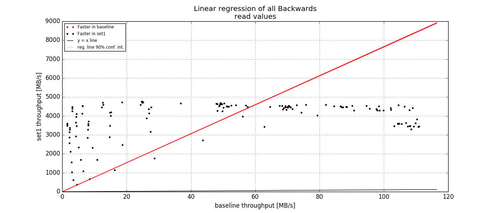
| Regression line |
|---|
| slope | 76.54796 |
| std. error | 0.07744 |
| ci. max 90% | 76.41975 |
| ci. min. 90% | 76.67616 |
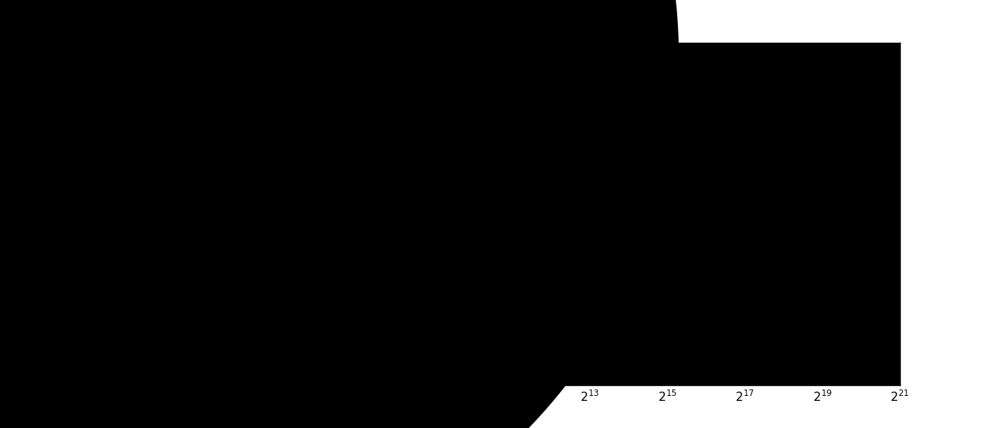
Back on top
Record rewrite
| Record rewrite |
File size [kB] |
4 |
8 |
16 |
32 |
64 |
128 |
256 |
512 |
1024 |
2048 |
4096 |
8192 |
16384 |
32768 |
65536 |
131072 |
262144 |
524288 |
1048576 |
|---|
| baseline | first quartile |
14.41 |
15.5 |
18.45 |
30.1 |
47.1 |
69.8 |
85.18 |
120.37 |
109.49 |
29.56 |
20.73 |
22.35 |
22.81 |
32.58 |
33.64 |
35.35 |
35.27 |
35.73 |
35.45 |
| median |
14.51 |
20.35 |
34.28 |
46.39 |
62.81 |
122.53 |
157.33 |
247.71 |
339.1 |
61.02 |
42.29 |
37.81 |
38.34 |
37.78 |
37.52 |
37.37 |
37.3 |
37.14 |
36.99 |
| third quartile |
17.75 |
27.01 |
51.16 |
80.02 |
132.74 |
206.82 |
318.26 |
435.76 |
461.68 |
71.8 |
48.22 |
40.52 |
38.81 |
37.89 |
37.64 |
37.43 |
37.33 |
37.29 |
37.26 |
| mean val. |
15.38 |
21.67 |
37.22 |
63.01 |
98.79 |
151.59 |
209.14 |
273.58 |
315.37 |
51.32 |
35.15 |
31.02 |
29.99 |
35.86 |
35.64 |
35.47 |
35.2 |
35.29 |
35.22 |
| standard dev. |
2.93 |
8.34 |
20.15 |
41.61 |
67.04 |
105.37 |
142.86 |
181.27 |
186.31 |
23.43 |
15.12 |
12.6 |
11.83 |
3.67 |
3.56 |
3.45 |
3.32 |
3.34 |
3.33 |
| ci. min. 90% |
12.58 |
16.84 |
28.05 |
46.93 |
75.85 |
118.9 |
168.3 |
225.29 |
268.7 |
45.76 |
31.74 |
28.3 |
27.54 |
34.94 |
34.74 |
34.6 |
34.36 |
34.45 |
34.38 |
| ci. max. 90% |
18.17 |
26.51 |
46.38 |
79.1 |
121.73 |
184.28 |
249.97 |
321.87 |
362.03 |
56.87 |
38.56 |
33.73 |
32.44 |
36.78 |
36.53 |
36.33 |
36.03 |
36.12 |
36.05 |
| geom. mean |
15.14 |
20.29 |
32.36 |
52.29 |
79.98 |
119.59 |
160.04 |
203.79 |
236.82 |
43.58 |
30.27 |
27.02 |
26.25 |
35.66 |
35.44 |
35.28 |
35.03 |
35.11 |
35.05 |
| minimum |
11.43 |
11.46 |
15.21 |
25.16 |
33.46 |
39.2 |
41.61 |
38.7 |
32.4 |
10.24 |
6.67 |
5.77 |
5.44 |
27.36 |
27.06 |
27.18 |
27.3 |
27.19 |
27.25 |
| maximum |
18.77 |
37.93 |
83.93 |
165.33 |
234.1 |
385.84 |
469.83 |
600.94 |
631.69 |
76.85 |
50.21 |
42.86 |
39.85 |
38.49 |
37.85 |
37.54 |
37.39 |
37.31 |
37.27 |
| set1 | first quartile |
549.69 |
804.55 |
1114.45 |
1697.35 |
2152.15 |
2501.91 |
2662.67 |
2860.11 |
3105.04 |
3226.11 |
3286.61 |
3104.25 |
2749.6 |
3865.18 |
3912.21 |
3900.63 |
3907.45 |
3952.88 |
3940.05 |
| median |
549.69 |
918.03 |
1430.74 |
1892.1 |
2600.49 |
3091.44 |
3417.72 |
3560.84 |
3597.77 |
3809.89 |
3891.0 |
3927.57 |
3927.29 |
4123.71 |
4144.52 |
4151.79 |
4153.0 |
4148.91 |
4152.11 |
| third quartile |
549.69 |
969.3 |
1567.63 |
2086.94 |
2985.5 |
3386.75 |
3754.52 |
3793.69 |
3950.16 |
3947.5 |
4044.37 |
4103.02 |
4123.73 |
4224.43 |
4273.17 |
4254.91 |
4292.14 |
4272.58 |
4267.54 |
| mean val. |
584.24 |
896.1 |
1357.21 |
1847.51 |
2488.53 |
2853.39 |
3174.85 |
3293.39 |
3423.59 |
3531.29 |
3588.32 |
3579.08 |
3538.45 |
3860.54 |
3893.94 |
3895.51 |
3901.91 |
3902.34 |
3914.28 |
| standard dev. |
117.05 |
89.16 |
225.52 |
352.52 |
584.74 |
703.05 |
758.4 |
788.56 |
796.98 |
775.93 |
772.18 |
803.91 |
845.17 |
643.83 |
639.3 |
630.82 |
629.78 |
629.85 |
626.28 |
| ci. min. 90% |
472.65 |
844.42 |
1254.66 |
1711.21 |
2288.45 |
2635.29 |
2958.09 |
3083.32 |
3223.96 |
3347.31 |
3414.07 |
3405.64 |
3363.49 |
3699.27 |
3733.81 |
3737.51 |
3744.17 |
3744.58 |
3757.41 |
| ci. max. 90% |
695.84 |
947.78 |
1459.77 |
1983.81 |
2688.62 |
3071.49 |
3391.62 |
3503.47 |
3623.21 |
3715.26 |
3762.57 |
3752.51 |
3713.41 |
4021.8 |
4054.07 |
4053.51 |
4059.66 |
4060.1 |
4071.15 |
| geom. mean |
575.98 |
892.02 |
1339.29 |
1812.06 |
2413.79 |
2751.09 |
3064.53 |
3177.35 |
3307.78 |
3421.85 |
3480.52 |
3467.01 |
3417.96 |
3799.37 |
3834.42 |
3837.91 |
3844.53 |
3844.88 |
3857.46 |
| minimum |
484.65 |
783.82 |
1043.47 |
1300.24 |
1491.1 |
1358.94 |
1601.35 |
1592.61 |
1597.34 |
1654.29 |
1602.59 |
1671.22 |
1666.52 |
2535.86 |
2627.68 |
2655.27 |
2669.14 |
2671.29 |
2428.31 |
| maximum |
787.48 |
998.85 |
1733.5 |
2228.9 |
3128.0 |
3671.34 |
4020.53 |
4204.35 |
4383.65 |
4474.39 |
4478.93 |
4502.25 |
4581.81 |
4562.31 |
4573.1 |
4590.45 |
4580.68 |
4569.31 |
4613.55 |
| ttest equality |
DIFF |
DIFF |
DIFF |
DIFF |
DIFF |
DIFF |
DIFF |
DIFF |
DIFF |
DIFF |
DIFF |
DIFF |
DIFF |
DIFF |
DIFF |
DIFF |
DIFF |
DIFF |
DIFF |
| baseline set1 difference |
3687.42 % |
4410.51 % |
4073.77 % |
3979.06 % |
4040.47 % |
2423.02 % |
2072.32 % |
1337.5 % |
960.97 % |
6143.32 % |
9099.67 % |
10286.56 % |
10142.59 % |
10814.7 % |
10946.87 % |
11009.33 % |
11034.7 % |
11070.81 % |
11124.87 % |
| ttest p-value |
0.0 |
0.0 |
0.0 |
0.0 |
0.0 |
0.0 |
0.0 |
0.0 |
0.0 |
0.0 |
0.0 |
0.0 |
0.0 |
0.0 |
0.0 |
0.0 |
0.0 |
0.0 |
0.0 |
| Record rewrite |
Block size [kB] |
4 |
8 |
16 |
32 |
64 |
128 |
256 |
512 |
1024 |
2048 |
4096 |
8192 |
16384 |
|---|
| baseline | first quartile |
10.44 |
16.38 |
20.73 |
27.88 |
27.47 |
31.55 |
37.54 |
36.29 |
37.32 |
37.26 |
37.29 |
37.28 |
37.29 |
| median |
18.17 |
34.75 |
62.36 |
122.43 |
31.19 |
34.47 |
39.83 |
38.85 |
37.89 |
37.6 |
37.51 |
37.4 |
37.37 |
| third quartile |
39.2 |
71.72 |
117.02 |
156.2 |
221.25 |
310.14 |
71.84 |
54.83 |
46.7 |
39.93 |
38.77 |
37.93 |
37.78 |
| mean val. |
23.88 |
43.34 |
72.3 |
114.13 |
109.59 |
132.93 |
148.7 |
121.72 |
81.34 |
41.94 |
38.73 |
37.71 |
37.49 |
| standard dev. |
15.2 |
29.13 |
50.17 |
84.16 |
117.92 |
157.36 |
196.93 |
180.08 |
126.37 |
10.8 |
2.95 |
1.27 |
0.64 |
| ci. min. 90% |
20.73 |
37.06 |
60.98 |
94.18 |
86.91 |
101.57 |
107.93 |
82.87 |
52.82 |
39.38 |
37.99 |
37.37 |
37.31 |
| ci. max. 90% |
27.03 |
49.63 |
83.63 |
134.09 |
132.27 |
164.29 |
189.46 |
160.57 |
109.86 |
44.51 |
39.47 |
38.05 |
37.67 |
| geom. mean |
18.5 |
33.02 |
54.04 |
80.69 |
62.51 |
69.55 |
74.28 |
62.79 |
51.58 |
40.93 |
38.63 |
37.69 |
37.48 |
| minimum |
5.44 |
9.87 |
15.69 |
22.63 |
27.06 |
31.22 |
36.99 |
30.93 |
35.33 |
30.56 |
35.36 |
33.51 |
35.35 |
| maximum |
46.81 |
92.56 |
167.84 |
287.78 |
434.03 |
558.96 |
631.69 |
600.94 |
600.23 |
74.33 |
47.87 |
40.56 |
39.0 |
| set1 | first quartile |
1300.24 |
2076.9 |
2654.21 |
3370.45 |
4160.99 |
4247.93 |
3953.52 |
3932.64 |
3974.42 |
3934.14 |
3790.65 |
2810.21 |
2601.42 |
| median |
1607.25 |
2657.12 |
3131.89 |
3792.65 |
4319.79 |
4444.9 |
4200.66 |
4117.59 |
4123.71 |
4127.83 |
3906.04 |
2841.66 |
2669.14 |
| third quartile |
1679.26 |
2718.91 |
3218.71 |
3901.86 |
4391.32 |
4541.15 |
4244.24 |
4147.39 |
4163.74 |
4148.63 |
3953.17 |
2877.03 |
2690.44 |
| mean val. |
1428.78 |
2315.93 |
2856.54 |
3538.14 |
4161.68 |
4312.48 |
4069.15 |
3990.26 |
4021.59 |
4022.32 |
3832.76 |
2821.13 |
2651.33 |
| standard dev. |
363.19 |
583.26 |
544.24 |
534.13 |
377.76 |
347.99 |
263.26 |
242.06 |
215.47 |
194.58 |
190.94 |
95.74 |
113.12 |
| ci. min. 90% |
1353.59 |
2190.09 |
2733.72 |
3411.5 |
4089.03 |
4243.13 |
4014.65 |
3938.04 |
3972.97 |
3976.18 |
3784.93 |
2795.63 |
2618.99 |
| ci. max. 90% |
1503.96 |
2441.76 |
2979.35 |
3664.78 |
4234.34 |
4381.82 |
4123.64 |
4042.48 |
4070.22 |
4068.45 |
3880.58 |
2846.64 |
2683.66 |
| geom. mean |
1365.54 |
2218.05 |
2793.39 |
3489.96 |
4142.41 |
4297.12 |
4060.2 |
3982.48 |
4015.55 |
4017.47 |
3827.89 |
2819.47 |
2649.03 |
| minimum |
484.65 |
969.3 |
1567.63 |
2086.94 |
2985.5 |
3200.67 |
3330.87 |
3126.32 |
3345.26 |
3496.99 |
3360.95 |
2428.31 |
2456.69 |
| maximum |
1717.84 |
2790.43 |
3316.01 |
3956.51 |
4432.74 |
4613.55 |
4298.19 |
4178.93 |
4181.11 |
4187.67 |
4074.75 |
2975.47 |
3048.21 |
| ttest equality |
DIFF |
DIFF |
DIFF |
DIFF |
DIFF |
DIFF |
DIFF |
DIFF |
DIFF |
DIFF |
DIFF |
DIFF |
DIFF |
| baseline set1 difference |
8745.67 % |
7545.75 % |
4922.17 % |
2997.83 % |
13748.85 % |
12793.26 % |
10446.18 % |
10498.39 % |
10784.03 % |
10876.95 % |
10312.57 % |
7497.94 % |
7043.38 % |
| ttest p-value |
0.0 |
0.0 |
0.0 |
0.0 |
0.0 |
0.0 |
0.0 |
0.0 |
0.0 |
0.0 |
0.0 |
0.0 |
0.0 |
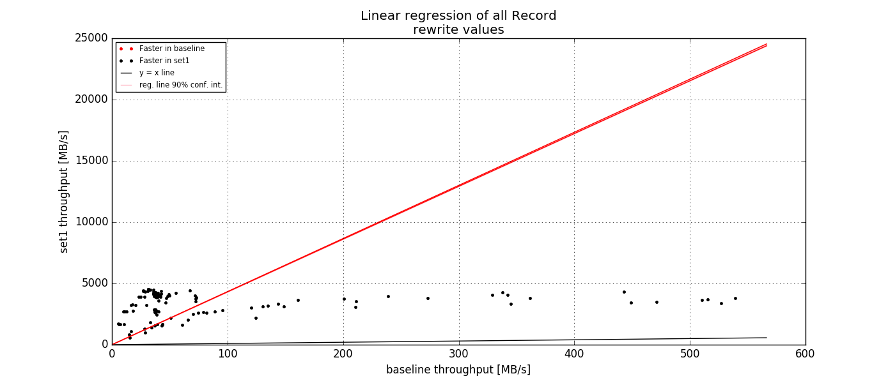
| Regression line |
|---|
| slope | 43.20199 |
| std. error | 0.08319 |
| ci. max 90% | 43.06428 |
| ci. min. 90% | 43.33971 |
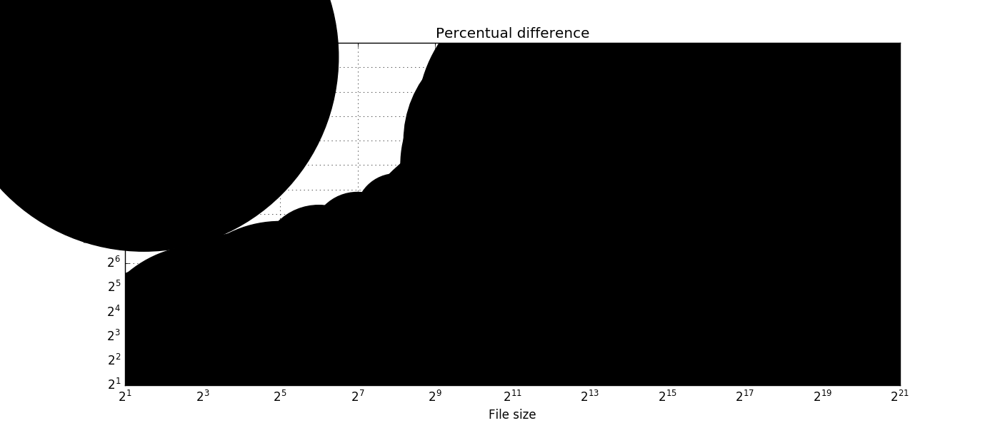
Back on top
Strided Read
| Strided Read |
File size [kB] |
4 |
8 |
16 |
32 |
64 |
128 |
256 |
512 |
1024 |
2048 |
4096 |
8192 |
16384 |
32768 |
65536 |
131072 |
262144 |
524288 |
1048576 |
|---|
| baseline | first quartile |
4.86 |
5.34 |
9.88 |
15.11 |
23.65 |
39.58 |
21.51 |
23.02 |
20.81 |
19.38 |
19.36 |
26.98 |
29.43 |
53.41 |
53.01 |
52.49 |
52.38 |
52.24 |
48.34 |
| median |
4.99 |
5.75 |
10.21 |
18.47 |
27.78 |
47.39 |
79.98 |
91.43 |
100.35 |
88.9 |
67.69 |
64.2 |
53.56 |
76.13 |
77.53 |
77.17 |
76.47 |
76.03 |
68.06 |
| third quartile |
5.08 |
8.85 |
16.59 |
21.47 |
32.02 |
50.16 |
95.51 |
107.91 |
113.1 |
148.68 |
218.75 |
202.86 |
192.19 |
365.62 |
382.62 |
103.24 |
100.43 |
98.98 |
96.21 |
| mean val. |
4.93 |
6.9 |
12.45 |
19.83 |
29.84 |
42.77 |
67.55 |
83.82 |
101.96 |
108.27 |
124.73 |
148.17 |
173.28 |
277.1 |
284.31 |
250.84 |
190.42 |
77.23 |
71.89 |
| standard dev. |
0.2 |
2.1 |
3.64 |
5.89 |
8.26 |
15.91 |
35.83 |
62.0 |
99.44 |
105.32 |
131.02 |
172.93 |
233.04 |
319.04 |
363.76 |
359.87 |
335.49 |
25.63 |
27.73 |
| ci. min. 90% |
4.74 |
5.69 |
10.79 |
17.56 |
27.01 |
37.84 |
57.31 |
67.3 |
77.06 |
83.3 |
95.17 |
110.87 |
125.04 |
197.19 |
193.2 |
160.7 |
106.39 |
70.81 |
64.95 |
| ci. max. 90% |
5.12 |
8.12 |
14.1 |
22.11 |
32.66 |
47.71 |
77.79 |
100.34 |
126.87 |
133.24 |
154.3 |
185.48 |
221.53 |
357.01 |
375.42 |
340.98 |
274.45 |
83.65 |
78.84 |
| geom. mean |
4.92 |
6.63 |
12.0 |
19.07 |
28.87 |
37.96 |
50.58 |
54.6 |
57.58 |
59.47 |
60.76 |
65.09 |
67.14 |
145.78 |
135.51 |
115.81 |
94.6 |
72.76 |
66.0 |
| minimum |
4.61 |
4.8 |
9.4 |
12.43 |
21.52 |
9.71 |
8.47 |
7.84 |
8.08 |
6.93 |
6.63 |
6.12 |
5.31 |
41.13 |
39.99 |
38.18 |
39.31 |
38.82 |
30.81 |
| maximum |
5.09 |
10.0 |
19.03 |
30.31 |
45.49 |
63.45 |
101.09 |
194.69 |
363.24 |
357.53 |
429.69 |
550.43 |
782.63 |
996.76 |
1136.49 |
1113.76 |
1139.11 |
114.57 |
110.86 |
| set1 | first quartile |
484.65 |
866.75 |
1430.74 |
2228.9 |
2985.5 |
3596.31 |
3843.67 |
3996.05 |
4272.03 |
4435.94 |
4668.13 |
4741.47 |
4255.26 |
3880.72 |
4435.2 |
4327.55 |
4337.88 |
4358.85 |
4386.45 |
| median |
484.65 |
866.75 |
1430.74 |
2228.9 |
3128.0 |
3777.14 |
4231.44 |
4483.04 |
4625.36 |
4860.75 |
5000.95 |
5146.23 |
4752.14 |
4573.35 |
4522.63 |
4488.56 |
4485.87 |
4495.01 |
4511.71 |
| third quartile |
499.42 |
969.3 |
1567.63 |
2391.58 |
3128.0 |
4413.91 |
4300.87 |
4815.01 |
5048.48 |
5152.54 |
5326.43 |
5374.25 |
4989.21 |
4775.27 |
4677.65 |
4551.11 |
4541.5 |
4558.16 |
4554.31 |
| mean val. |
504.43 |
927.55 |
1486.07 |
2277.37 |
3141.56 |
3738.27 |
4108.62 |
4431.09 |
4710.2 |
4859.83 |
4936.04 |
4924.61 |
4573.29 |
4480.21 |
4403.26 |
4300.43 |
4293.79 |
4308.13 |
4349.96 |
| standard dev. |
36.53 |
91.2 |
75.3 |
121.76 |
243.2 |
722.49 |
503.51 |
676.94 |
699.92 |
764.38 |
595.12 |
584.32 |
662.39 |
633.12 |
510.39 |
432.69 |
445.26 |
432.39 |
449.76 |
| ci. min. 90% |
469.6 |
874.68 |
1451.82 |
2230.29 |
3058.35 |
3514.14 |
3964.71 |
4250.75 |
4534.89 |
4678.59 |
4801.75 |
4798.55 |
4436.17 |
4321.63 |
4275.42 |
4192.05 |
4182.26 |
4199.82 |
4237.3 |
| ci. max. 90% |
539.26 |
980.42 |
1520.31 |
2324.45 |
3224.78 |
3962.4 |
4252.53 |
4611.43 |
4885.51 |
5041.06 |
5070.34 |
5050.67 |
4710.42 |
4638.79 |
4531.1 |
4408.81 |
4405.31 |
4416.43 |
4462.61 |
| geom. mean |
503.43 |
923.79 |
1484.29 |
2274.34 |
3133.04 |
3652.02 |
4077.16 |
4379.63 |
4658.96 |
4800.93 |
4897.85 |
4887.1 |
4522.7 |
4434.73 |
4372.21 |
4277.11 |
4268.99 |
4284.95 |
4324.36 |
| minimum |
484.65 |
866.75 |
1400.17 |
2086.94 |
2855.42 |
1417.74 |
2906.21 |
3126.32 |
3321.42 |
3413.05 |
3499.77 |
3627.97 |
3316.67 |
3301.4 |
3366.98 |
3344.93 |
3349.55 |
3454.72 |
3011.73 |
| maximum |
568.78 |
1137.55 |
1567.63 |
2579.87 |
3702.3 |
4647.71 |
5221.84 |
5686.33 |
6290.14 |
6663.94 |
6105.68 |
5574.93 |
5515.28 |
5536.39 |
5252.34 |
4748.14 |
4727.52 |
4711.99 |
4902.99 |
| ttest equality |
DIFF |
DIFF |
DIFF |
DIFF |
DIFF |
DIFF |
DIFF |
DIFF |
DIFF |
DIFF |
DIFF |
DIFF |
DIFF |
DIFF |
DIFF |
DIFF |
DIFF |
DIFF |
DIFF |
| baseline set1 difference |
9613.9 % |
14963.63 % |
13919.87 % |
11967.53 % |
11161.76 % |
7870.96 % |
5190.79 % |
4803.18 % |
4509.16 % |
5367.55 % |
7288.08 % |
7915.98 % |
8772.8 % |
5907.07 % |
5733.6 % |
5716.39 % |
5766.36 % |
5812.37 % |
6529.43 % |
| ttest p-value |
0.0 |
0.0 |
0.0 |
0.0 |
0.0 |
0.0 |
0.0 |
0.0 |
0.0 |
0.0 |
0.0 |
0.0 |
0.0 |
0.0 |
0.0 |
0.0 |
0.0 |
0.0 |
0.0 |
| Strided Read |
Block size [kB] |
4 |
8 |
16 |
32 |
64 |
128 |
256 |
512 |
1024 |
2048 |
4096 |
8192 |
16384 |
|---|
| baseline | first quartile |
7.14 |
6.69 |
18.58 |
29.81 |
40.0 |
49.24 |
76.07 |
52.49 |
70.87 |
87.7 |
100.39 |
109.42 |
110.9 |
| median |
8.23 |
9.95 |
19.5 |
32.19 |
44.31 |
55.51 |
77.37 |
53.53 |
73.93 |
98.69 |
108.88 |
151.24 |
203.04 |
| third quartile |
10.28 |
17.96 |
31.05 |
50.61 |
58.86 |
79.58 |
93.14 |
111.05 |
218.75 |
287.25 |
338.04 |
438.26 |
664.82 |
| mean val. |
10.42 |
14.39 |
29.93 |
54.01 |
75.09 |
87.78 |
117.66 |
128.82 |
187.46 |
252.18 |
309.86 |
343.86 |
388.89 |
| standard dev. |
5.64 |
11.22 |
22.08 |
43.47 |
78.48 |
82.26 |
98.19 |
144.4 |
215.62 |
286.93 |
340.47 |
343.45 |
362.0 |
| ci. min. 90% |
9.26 |
11.97 |
24.95 |
43.7 |
59.99 |
71.38 |
97.33 |
97.67 |
138.8 |
184.15 |
224.58 |
252.36 |
285.42 |
| ci. max. 90% |
11.59 |
16.81 |
34.91 |
64.32 |
90.18 |
104.17 |
137.99 |
159.98 |
236.11 |
320.21 |
395.14 |
435.35 |
492.36 |
| geom. mean |
9.33 |
11.55 |
25.42 |
43.99 |
56.93 |
69.52 |
97.78 |
88.64 |
123.94 |
162.49 |
197.42 |
226.65 |
261.01 |
| minimum |
4.61 |
4.85 |
15.3 |
27.56 |
30.81 |
35.19 |
65.11 |
48.03 |
66.51 |
83.83 |
95.4 |
104.52 |
108.49 |
| maximum |
32.02 |
52.26 |
101.09 |
193.72 |
363.24 |
357.53 |
429.69 |
550.43 |
782.63 |
996.76 |
1136.49 |
1113.76 |
1139.11 |
| set1 | first quartile |
2228.9 |
3238.54 |
3056.75 |
4181.03 |
4645.02 |
4619.61 |
4460.01 |
4496.34 |
4520.84 |
4514.78 |
4358.85 |
3592.06 |
3394.3 |
| median |
3208.56 |
4183.67 |
4112.85 |
4526.62 |
4705.36 |
4777.62 |
4497.05 |
4547.87 |
4558.16 |
4561.79 |
4550.61 |
3660.79 |
3437.53 |
| third quartile |
3470.95 |
4606.87 |
4404.22 |
4854.34 |
4869.6 |
5499.53 |
5231.59 |
5068.39 |
5202.18 |
5157.09 |
5031.44 |
3764.33 |
3466.35 |
| mean val. |
2721.68 |
3641.87 |
3701.24 |
4228.36 |
4608.88 |
4994.35 |
4818.16 |
4764.5 |
4779.12 |
4821.87 |
4667.55 |
3699.39 |
3427.52 |
| standard dev. |
1052.94 |
1280.19 |
1081.82 |
927.03 |
556.73 |
685.5 |
538.16 |
379.25 |
401.26 |
393.89 |
347.96 |
212.19 |
46.43 |
| ci. min. 90% |
2503.7 |
3365.68 |
3457.11 |
4008.56 |
4501.8 |
4857.74 |
4706.75 |
4682.68 |
4688.57 |
4728.48 |
4580.4 |
3642.86 |
3414.25 |
| ci. max. 90% |
2939.65 |
3918.05 |
3945.37 |
4448.16 |
4715.96 |
5130.95 |
4929.57 |
4846.32 |
4869.67 |
4915.26 |
4754.71 |
3755.92 |
3440.79 |
| geom. mean |
2385.89 |
3298.85 |
3492.65 |
4103.11 |
4570.31 |
4948.53 |
4789.88 |
4750.21 |
4763.11 |
4806.61 |
4655.15 |
3693.56 |
3427.21 |
| minimum |
484.65 |
866.75 |
1400.17 |
2086.94 |
2985.5 |
3571.3 |
3872.21 |
4118.4 |
3880.72 |
4406.23 |
4312.53 |
3011.73 |
3301.4 |
| maximum |
3817.15 |
5038.79 |
5012.01 |
5298.51 |
5574.93 |
6663.94 |
6105.68 |
5529.0 |
5515.28 |
5536.39 |
5252.34 |
4456.69 |
3489.65 |
| ttest equality |
DIFF |
DIFF |
DIFF |
DIFF |
DIFF |
DIFF |
DIFF |
DIFF |
DIFF |
DIFF |
DIFF |
DIFF |
DIFF |
| baseline set1 difference |
38888.56 % |
41952.27 % |
20989.4 % |
13961.81 % |
10519.98 % |
8506.74 % |
5712.68 % |
8396.66 % |
6065.69 % |
4522.46 % |
4079.44 % |
2320.5 % |
1593.04 % |
| ttest p-value |
0.0 |
0.0 |
0.0 |
0.0 |
0.0 |
0.0 |
0.0 |
0.0 |
0.0 |
0.0 |
0.0 |
0.0 |
0.0 |
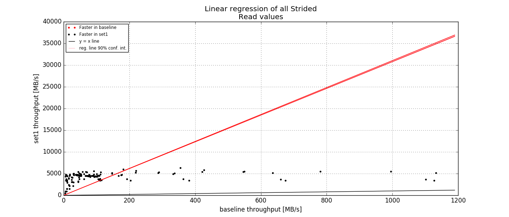
| Regression line |
|---|
| slope | 30.91853 |
| std. error | 0.08154 |
| ci. max 90% | 30.78354 |
| ci. min. 90% | 31.05352 |
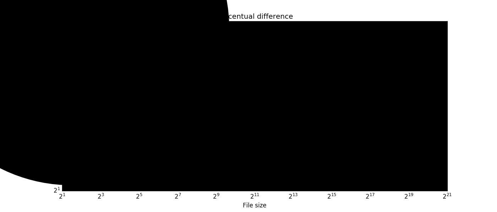
Back on top
Fwrite
| Fwrite |
File size [kB] |
4 |
8 |
16 |
32 |
64 |
128 |
256 |
512 |
1024 |
2048 |
4096 |
8192 |
16384 |
32768 |
65536 |
131072 |
262144 |
524288 |
1048576 |
|---|
| baseline | first quartile |
15.76 |
26.82 |
22.73 |
34.25 |
42.81 |
63.57 |
77.07 |
99.39 |
101.93 |
68.89 |
47.63 |
40.06 |
38.53 |
38.06 |
37.58 |
37.44 |
37.33 |
36.89 |
36.99 |
| median |
17.05 |
30.67 |
54.62 |
68.68 |
70.95 |
126.91 |
140.6 |
192.32 |
213.94 |
74.81 |
50.28 |
41.06 |
39.11 |
38.99 |
37.98 |
37.66 |
37.42 |
37.29 |
37.26 |
| third quartile |
17.29 |
37.19 |
65.85 |
124.89 |
193.49 |
323.4 |
405.96 |
467.46 |
504.56 |
93.96 |
56.08 |
44.22 |
41.37 |
43.2 |
39.96 |
38.6 |
37.89 |
37.55 |
37.32 |
| mean val. |
15.54 |
31.76 |
47.88 |
79.62 |
116.71 |
182.89 |
234.6 |
289.93 |
317.42 |
152.49 |
60.0 |
46.19 |
43.6 |
44.56 |
39.26 |
38.11 |
37.71 |
37.29 |
37.02 |
| standard dev. |
2.98 |
6.93 |
22.1 |
51.77 |
83.46 |
147.28 |
194.72 |
244.99 |
246.48 |
223.97 |
27.02 |
13.0 |
11.15 |
11.76 |
4.01 |
2.26 |
0.8 |
0.46 |
0.99 |
| ci. min. 90% |
12.7 |
27.74 |
37.83 |
59.6 |
88.15 |
137.2 |
178.94 |
224.66 |
255.68 |
99.39 |
53.9 |
43.39 |
41.29 |
41.61 |
38.25 |
37.55 |
37.51 |
37.18 |
36.78 |
| ci. max. 90% |
18.38 |
35.78 |
57.93 |
99.63 |
145.27 |
228.58 |
290.25 |
355.19 |
379.15 |
205.59 |
66.09 |
49.0 |
45.91 |
47.51 |
40.26 |
38.68 |
37.91 |
37.41 |
37.27 |
| geom. mean |
15.27 |
31.07 |
42.0 |
61.65 |
88.7 |
130.11 |
162.54 |
195.49 |
221.94 |
96.09 |
56.31 |
44.92 |
42.59 |
43.4 |
39.08 |
38.05 |
37.7 |
37.29 |
37.01 |
| minimum |
10.34 |
22.77 |
17.56 |
17.4 |
30.46 |
40.37 |
40.28 |
37.47 |
44.35 |
35.56 |
36.51 |
35.95 |
35.86 |
37.78 |
33.78 |
31.01 |
36.43 |
36.3 |
31.04 |
| maximum |
17.29 |
43.41 |
73.32 |
160.27 |
275.13 |
488.25 |
637.51 |
840.61 |
889.6 |
868.76 |
144.23 |
92.25 |
82.11 |
76.38 |
50.36 |
42.83 |
39.77 |
38.49 |
37.83 |
| set1 | first quartile |
391.91 |
866.75 |
1020.01 |
1474.16 |
1693.37 |
1821.74 |
1962.54 |
2135.02 |
2304.81 |
2365.96 |
2386.77 |
2370.37 |
2076.85 |
2103.6 |
2038.02 |
1960.97 |
1938.41 |
1925.52 |
2001.49 |
| median |
391.91 |
866.75 |
1315.83 |
1642.39 |
2019.51 |
2291.59 |
2629.29 |
2692.8 |
2778.04 |
2737.56 |
2825.01 |
2646.43 |
2299.84 |
2177.17 |
2137.11 |
2118.47 |
2122.35 |
2123.11 |
2163.15 |
| third quartile |
391.91 |
943.66 |
1499.19 |
1703.76 |
2244.27 |
2576.21 |
3199.25 |
3041.51 |
3066.45 |
3014.22 |
2967.45 |
2746.25 |
2429.74 |
2349.68 |
2347.17 |
2340.17 |
2351.77 |
2349.35 |
2366.38 |
| mean val. |
359.14 |
874.08 |
1285.51 |
1580.98 |
1917.84 |
2230.17 |
2500.13 |
2571.13 |
2640.67 |
2654.38 |
2619.61 |
2476.03 |
2175.19 |
2204.61 |
2181.93 |
2150.66 |
2140.98 |
2133.66 |
2179.34 |
| standard dev. |
98.11 |
82.2 |
271.57 |
305.83 |
450.3 |
558.73 |
653.39 |
648.49 |
636.76 |
607.08 |
530.58 |
414.61 |
343.6 |
131.99 |
157.0 |
185.27 |
200.07 |
210.84 |
215.07 |
| ci. min. 90% |
265.6 |
826.43 |
1162.01 |
1462.73 |
1763.75 |
2056.85 |
2313.38 |
2398.38 |
2481.18 |
2510.44 |
2499.87 |
2386.59 |
2104.06 |
2171.55 |
2142.61 |
2104.25 |
2090.87 |
2080.85 |
2125.47 |
| ci. max. 90% |
452.68 |
921.73 |
1409.01 |
1699.23 |
2071.92 |
2403.5 |
2686.88 |
2743.89 |
2800.16 |
2798.32 |
2739.34 |
2565.48 |
2246.32 |
2237.67 |
2221.26 |
2197.06 |
2191.1 |
2186.47 |
2233.21 |
| geom. mean |
344.72 |
870.48 |
1257.49 |
1550.21 |
1862.1 |
2155.03 |
2405.81 |
2479.22 |
2551.41 |
2574.43 |
2554.8 |
2432.45 |
2142.58 |
2200.74 |
2176.37 |
2142.85 |
2131.8 |
2123.39 |
2168.83 |
| minimum |
186.59 |
715.37 |
912.68 |
1076.07 |
1203.57 |
1301.59 |
1351.6 |
1351.43 |
1351.34 |
1372.75 |
1326.18 |
1333.76 |
1254.21 |
1901.94 |
1923.14 |
1916.4 |
1875.73 |
1857.86 |
1848.15 |
| maximum |
433.37 |
969.3 |
1733.5 |
2086.94 |
2501.24 |
3051.63 |
3330.87 |
3450.37 |
3546.06 |
3603.65 |
3410.14 |
2830.93 |
2511.86 |
2394.15 |
2377.66 |
2377.16 |
2385.39 |
2382.38 |
2609.36 |
| ttest equality |
DIFF |
DIFF |
DIFF |
DIFF |
DIFF |
DIFF |
DIFF |
DIFF |
DIFF |
DIFF |
DIFF |
DIFF |
DIFF |
DIFF |
DIFF |
DIFF |
DIFF |
DIFF |
DIFF |
| baseline set1 difference |
2198.34 % |
2726.18 % |
2308.98 % |
2291.39 % |
2746.42 % |
1705.66 % |
1770.04 % |
1300.15 % |
1198.5 % |
3559.17 % |
5518.32 % |
6345.57 % |
5780.97 % |
5484.44 % |
5527.3 % |
5525.67 % |
5571.26 % |
5593.64 % |
5705.6 % |
| ttest p-value |
0.0001 |
0.0 |
0.0 |
0.0 |
0.0 |
0.0 |
0.0 |
0.0 |
0.0 |
0.0 |
0.0 |
0.0 |
0.0 |
0.0 |
0.0 |
0.0 |
0.0 |
0.0 |
0.0 |
| Fwrite |
Block size [kB] |
4 |
8 |
16 |
32 |
64 |
128 |
256 |
512 |
1024 |
2048 |
4096 |
8192 |
16384 |
|---|
| baseline | first quartile |
30.46 |
41.18 |
47.56 |
48.73 |
37.45 |
37.41 |
37.45 |
37.37 |
37.42 |
37.47 |
37.89 |
37.88 |
38.44 |
| median |
38.68 |
56.31 |
72.72 |
127.43 |
39.95 |
40.08 |
39.35 |
39.01 |
38.99 |
39.55 |
40.0 |
39.85 |
39.76 |
| third quartile |
44.62 |
72.55 |
104.45 |
157.72 |
208.15 |
323.4 |
94.63 |
77.73 |
68.39 |
54.73 |
49.2 |
44.72 |
46.57 |
| mean val. |
36.12 |
56.41 |
80.04 |
114.1 |
116.58 |
156.09 |
169.7 |
150.35 |
153.84 |
54.3 |
46.53 |
45.59 |
45.87 |
| standard dev. |
10.7 |
17.5 |
33.06 |
60.45 |
115.19 |
188.43 |
240.16 |
236.82 |
248.72 |
31.49 |
15.18 |
13.65 |
12.89 |
| ci. min. 90% |
33.91 |
52.63 |
72.58 |
99.77 |
94.42 |
118.54 |
119.99 |
99.26 |
97.71 |
46.83 |
42.72 |
41.96 |
42.18 |
| ci. max. 90% |
38.33 |
60.18 |
87.5 |
128.44 |
138.73 |
193.64 |
219.42 |
201.44 |
209.96 |
61.76 |
50.33 |
49.23 |
49.55 |
| geom. mean |
34.09 |
53.62 |
73.3 |
96.15 |
76.1 |
81.5 |
78.26 |
70.2 |
68.14 |
48.81 |
44.75 |
44.1 |
44.49 |
| minimum |
10.34 |
22.92 |
38.37 |
38.26 |
33.63 |
31.01 |
36.75 |
33.78 |
34.05 |
35.91 |
31.04 |
37.04 |
37.36 |
| maximum |
49.61 |
83.74 |
160.27 |
236.63 |
488.25 |
637.51 |
840.61 |
889.6 |
868.76 |
144.23 |
92.25 |
82.11 |
76.38 |
| set1 | first quartile |
1076.07 |
1719.79 |
2074.79 |
2235.9 |
2326.11 |
2363.23 |
2348.53 |
2370.82 |
2122.74 |
2010.22 |
1942.69 |
1879.14 |
1910.36 |
| median |
1301.59 |
1867.13 |
2306.18 |
2658.15 |
2498.92 |
2503.78 |
2427.98 |
2389.77 |
2140.98 |
2047.98 |
2019.94 |
1947.65 |
1964.82 |
| third quartile |
1372.75 |
1967.59 |
2362.97 |
2718.44 |
2839.69 |
2919.13 |
2867.5 |
2869.54 |
2569.35 |
2467.81 |
2322.92 |
2187.37 |
2129.05 |
| mean val. |
1183.11 |
1761.6 |
2131.68 |
2487.9 |
2592.94 |
2652.87 |
2633.86 |
2647.09 |
2424.66 |
2300.35 |
2206.8 |
2071.04 |
2053.31 |
| standard dev. |
288.73 |
315.98 |
349.07 |
295.12 |
304.42 |
332.71 |
354.04 |
365.39 |
438.61 |
477.51 |
446.84 |
266.9 |
197.17 |
| ci. min. 90% |
1123.34 |
1693.43 |
2052.91 |
2417.93 |
2534.38 |
2586.57 |
2560.57 |
2568.27 |
2325.68 |
2187.14 |
2094.88 |
1999.93 |
1996.96 |
| ci. max. 90% |
1242.88 |
1829.77 |
2210.45 |
2557.87 |
2651.49 |
2719.17 |
2707.15 |
2725.92 |
2523.63 |
2413.57 |
2318.73 |
2142.14 |
2109.67 |
| geom. mean |
1123.26 |
1722.14 |
2097.7 |
2469.33 |
2575.92 |
2633.11 |
2611.83 |
2623.97 |
2390.57 |
2260.19 |
2170.17 |
2055.91 |
2044.7 |
| minimum |
186.59 |
715.37 |
1289.93 |
1825.37 |
2026.31 |
2109.98 |
2177.17 |
2203.11 |
1945.16 |
1820.9 |
1589.21 |
1848.15 |
1857.86 |
| maximum |
1401.04 |
2024.47 |
2398.25 |
2776.87 |
3248.32 |
3422.21 |
3377.58 |
3450.37 |
3546.06 |
3603.65 |
3410.14 |
2744.33 |
2492.18 |
| ttest equality |
DIFF |
DIFF |
DIFF |
DIFF |
DIFF |
DIFF |
DIFF |
DIFF |
DIFF |
DIFF |
DIFF |
DIFF |
DIFF |
| baseline set1 difference |
3265.13 % |
3215.83 % |
3071.45 % |
1985.92 % |
6154.48 % |
6147.32 % |
6070.58 % |
6026.76 % |
5391.61 % |
5078.3 % |
4949.23 % |
4787.26 % |
4841.36 % |
| ttest p-value |
0.0 |
0.0 |
0.0 |
0.0 |
0.0 |
0.0 |
0.0 |
0.0 |
0.0 |
0.0 |
0.0 |
0.0 |
0.0 |
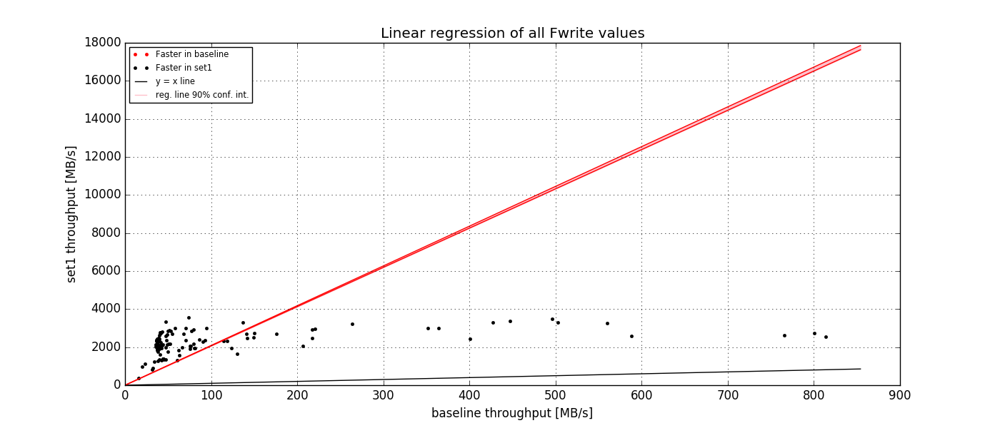
| Regression line |
|---|
| slope | 20.77626 |
| std. error | 0.0783 |
| ci. max 90% | 20.64664 |
| ci. min. 90% | 20.90588 |
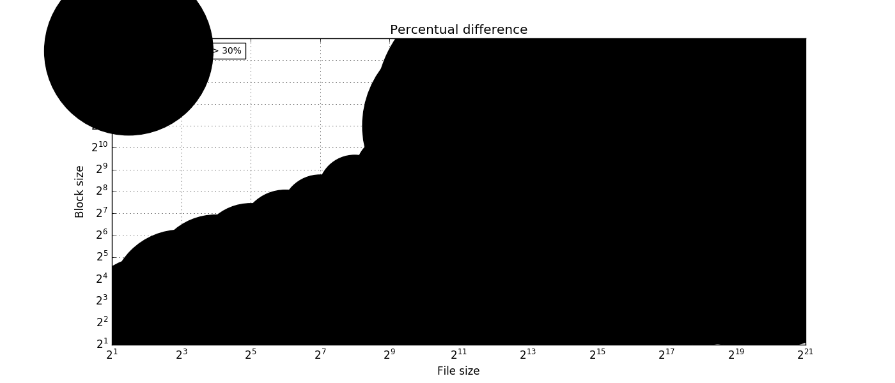
Back on top
Frewrite
| Frewrite |
File size [kB] |
4 |
8 |
16 |
32 |
64 |
128 |
256 |
512 |
1024 |
2048 |
4096 |
8192 |
16384 |
32768 |
65536 |
131072 |
262144 |
524288 |
1048576 |
|---|
| baseline | first quartile |
13.11 |
24.02 |
21.61 |
33.51 |
52.75 |
73.37 |
76.3 |
78.47 |
94.32 |
68.77 |
47.45 |
39.96 |
38.51 |
38.06 |
37.63 |
37.41 |
37.32 |
37.27 |
36.98 |
| median |
13.66 |
25.95 |
43.67 |
63.73 |
77.06 |
121.62 |
140.62 |
197.05 |
207.09 |
73.34 |
49.62 |
41.06 |
39.03 |
39.01 |
38.1 |
37.65 |
37.38 |
37.31 |
37.26 |
| third quartile |
15.82 |
31.6 |
51.4 |
99.39 |
172.14 |
315.1 |
389.74 |
471.72 |
485.41 |
92.28 |
56.35 |
44.38 |
41.29 |
43.36 |
40.12 |
38.58 |
37.89 |
37.42 |
37.29 |
| mean val. |
13.95 |
28.7 |
39.74 |
66.28 |
105.64 |
171.97 |
233.45 |
286.76 |
320.38 |
158.69 |
59.59 |
46.06 |
43.67 |
44.45 |
39.7 |
38.1 |
37.55 |
36.98 |
36.83 |
| standard dev. |
2.19 |
6.32 |
14.75 |
37.67 |
64.46 |
127.45 |
201.23 |
242.93 |
274.18 |
243.2 |
26.36 |
13.07 |
11.53 |
12.05 |
4.2 |
1.87 |
1.09 |
1.8 |
1.51 |
| ci. min. 90% |
11.86 |
25.03 |
33.04 |
51.71 |
83.59 |
132.43 |
175.93 |
222.05 |
251.7 |
101.03 |
53.64 |
43.24 |
41.28 |
41.43 |
38.65 |
37.63 |
37.28 |
36.52 |
36.45 |
| ci. max. 90% |
16.04 |
32.36 |
46.45 |
80.84 |
127.7 |
211.5 |
290.96 |
351.48 |
389.05 |
216.35 |
65.54 |
48.88 |
46.06 |
47.47 |
40.75 |
38.56 |
37.82 |
37.43 |
37.21 |
| geom. mean |
13.81 |
28.12 |
36.72 |
54.62 |
85.14 |
128.69 |
160.45 |
190.41 |
217.37 |
96.44 |
56.02 |
44.77 |
42.61 |
43.23 |
39.5 |
38.05 |
37.53 |
36.92 |
36.79 |
| minimum |
10.88 |
21.76 |
18.56 |
15.81 |
17.66 |
37.25 |
44.25 |
37.44 |
46.37 |
36.8 |
36.58 |
36.46 |
36.39 |
30.6 |
33.83 |
33.77 |
33.49 |
28.55 |
28.47 |
| maximum |
16.29 |
40.92 |
59.86 |
118.85 |
204.35 |
452.83 |
686.78 |
805.11 |
1025.55 |
903.38 |
143.97 |
92.17 |
83.22 |
76.31 |
49.99 |
42.86 |
39.79 |
37.93 |
37.84 |
| set1 | first quartile |
328.96 |
567.39 |
710.01 |
1057.67 |
1331.99 |
1504.17 |
1618.67 |
1809.31 |
1956.48 |
1989.92 |
2006.07 |
2159.81 |
2173.3 |
2158.37 |
2047.94 |
2017.05 |
1936.71 |
1927.4 |
1954.94 |
| median |
328.96 |
597.89 |
925.58 |
1333.62 |
1693.37 |
1978.29 |
2194.57 |
2335.29 |
2369.92 |
2408.34 |
2402.3 |
2387.41 |
2338.55 |
2320.03 |
2252.96 |
2134.29 |
2123.35 |
2123.16 |
2127.4 |
| third quartile |
328.96 |
635.98 |
1114.45 |
1481.38 |
1848.61 |
2232.86 |
2659.64 |
2757.96 |
2881.09 |
2943.32 |
2687.25 |
2509.6 |
2420.97 |
2374.58 |
2354.08 |
2350.39 |
2346.81 |
2347.18 |
2354.72 |
| mean val. |
328.96 |
598.67 |
917.87 |
1275.36 |
1601.96 |
1952.96 |
2215.76 |
2346.39 |
2429.76 |
2409.97 |
2367.11 |
2308.69 |
2235.97 |
2326.82 |
2214.35 |
2165.18 |
2143.97 |
2135.32 |
2145.89 |
| standard dev. |
0.0 |
43.79 |
181.56 |
297.55 |
427.17 |
572.73 |
689.54 |
770.46 |
772.7 |
641.71 |
560.25 |
491.19 |
419.08 |
239.78 |
144.73 |
175.89 |
197.32 |
207.92 |
207.95 |
| ci. min. 90% |
328.96 |
573.29 |
835.3 |
1160.32 |
1455.8 |
1775.29 |
2018.67 |
2141.14 |
2236.22 |
2257.82 |
2240.68 |
2202.72 |
2149.22 |
2266.77 |
2178.1 |
2121.13 |
2094.55 |
2083.24 |
2093.8 |
| ci. max. 90% |
328.96 |
624.06 |
1000.43 |
1390.41 |
1748.13 |
2130.63 |
2412.84 |
2551.65 |
2623.3 |
2562.12 |
2493.54 |
2414.66 |
2322.73 |
2386.88 |
2250.6 |
2209.24 |
2193.39 |
2187.4 |
2197.97 |
| geom. mean |
328.96 |
597.21 |
900.33 |
1241.3 |
1543.3 |
1868.72 |
2107.09 |
2222.21 |
2307.51 |
2316.82 |
2292.82 |
2250.08 |
2191.33 |
2315.76 |
2209.67 |
2158.19 |
2135.06 |
2125.35 |
2135.92 |
| minimum |
328.96 |
521.74 |
676.98 |
869.14 |
822.27 |
1115.97 |
1185.09 |
1160.05 |
1201.87 |
1214.37 |
1224.72 |
1185.34 |
1219.43 |
2007.54 |
1996.56 |
1930.47 |
1888.58 |
1864.56 |
1855.64 |
| maximum |
328.96 |
657.92 |
1133.73 |
1752.17 |
2323.85 |
2915.86 |
3521.01 |
3965.83 |
4084.81 |
3521.95 |
3350.21 |
3316.7 |
3116.59 |
2949.53 |
2395.57 |
2379.98 |
2373.98 |
2373.96 |
2389.74 |
| ttest equality |
DIFF |
DIFF |
DIFF |
DIFF |
DIFF |
DIFF |
DIFF |
DIFF |
DIFF |
DIFF |
DIFF |
DIFF |
DIFF |
DIFF |
DIFF |
DIFF |
DIFF |
DIFF |
DIFF |
| baseline set1 difference |
2309.02 % |
2203.79 % |
2019.62 % |
1992.5 % |
2097.49 % |
1526.68 % |
1460.64 % |
1085.12 % |
1044.41 % |
3183.92 % |
4741.1 % |
5715.12 % |
5891.78 % |
5847.0 % |
5812.89 % |
5568.99 % |
5580.03 % |
5590.5 % |
5609.94 % |
| ttest p-value |
0.0 |
0.0 |
0.0 |
0.0 |
0.0 |
0.0 |
0.0 |
0.0 |
0.0 |
0.0 |
0.0 |
0.0 |
0.0 |
0.0 |
0.0 |
0.0 |
0.0 |
0.0 |
0.0 |
| Frewrite |
Block size [kB] |
4 |
8 |
16 |
32 |
64 |
128 |
256 |
512 |
1024 |
2048 |
4096 |
8192 |
16384 |
|---|
| baseline | first quartile |
26.3 |
39.61 |
48.34 |
48.47 |
37.38 |
37.41 |
37.45 |
37.38 |
37.45 |
37.43 |
37.89 |
37.86 |
37.92 |
| median |
38.33 |
52.51 |
74.67 |
118.8 |
40.44 |
39.76 |
39.16 |
39.1 |
39.01 |
39.49 |
40.11 |
39.84 |
39.77 |
| third quartile |
45.45 |
73.62 |
94.01 |
149.8 |
197.01 |
315.1 |
93.4 |
76.5 |
70.04 |
54.98 |
46.93 |
44.77 |
49.91 |
| mean val. |
35.96 |
55.39 |
74.71 |
106.56 |
110.02 |
154.96 |
165.93 |
159.88 |
157.87 |
53.69 |
46.5 |
45.79 |
45.6 |
| standard dev. |
11.28 |
18.04 |
27.11 |
53.21 |
104.83 |
189.92 |
234.35 |
264.8 |
262.29 |
30.65 |
15.1 |
14.17 |
13.47 |
| ci. min. 90% |
33.62 |
51.5 |
68.6 |
93.95 |
89.86 |
117.11 |
117.42 |
102.75 |
98.68 |
46.43 |
42.72 |
42.01 |
41.75 |
| ci. max. 90% |
38.29 |
59.28 |
80.83 |
119.18 |
130.19 |
192.8 |
214.45 |
217.01 |
217.06 |
60.96 |
50.28 |
49.56 |
49.44 |
| geom. mean |
33.69 |
52.27 |
69.61 |
91.56 |
74.08 |
81.03 |
77.39 |
71.0 |
68.26 |
48.43 |
44.76 |
44.19 |
44.05 |
| minimum |
10.88 |
21.76 |
38.24 |
38.24 |
30.6 |
33.77 |
33.49 |
28.47 |
29.1 |
34.63 |
36.88 |
35.52 |
28.55 |
| maximum |
49.98 |
85.38 |
123.29 |
192.31 |
452.83 |
686.78 |
805.11 |
1025.55 |
903.38 |
143.97 |
92.17 |
83.22 |
76.31 |
| set1 | first quartile |
869.14 |
1327.31 |
1726.84 |
2159.47 |
2322.67 |
2362.91 |
2349.84 |
2373.81 |
2127.94 |
2011.63 |
1954.94 |
1889.14 |
1893.38 |
| median |
1185.09 |
1597.72 |
1953.01 |
2201.14 |
2334.65 |
2381.97 |
2389.74 |
2401.69 |
2176.75 |
2074.17 |
2021.84 |
2001.16 |
2023.49 |
| third quartile |
1223.22 |
1687.25 |
1982.0 |
2230.5 |
2392.5 |
2475.96 |
2635.6 |
2721.84 |
2620.29 |
2485.14 |
2422.72 |
2404.71 |
2464.19 |
| mean val. |
1013.5 |
1448.29 |
1808.68 |
2109.54 |
2366.26 |
2482.02 |
2576.68 |
2643.63 |
2404.77 |
2321.22 |
2290.36 |
2213.38 |
2194.06 |
| standard dev. |
286.82 |
337.03 |
300.94 |
264.44 |
203.15 |
273.57 |
406.45 |
459.27 |
426.02 |
450.18 |
477.68 |
426.47 |
366.18 |
| ci. min. 90% |
954.13 |
1375.58 |
1740.77 |
2046.84 |
2327.19 |
2427.51 |
2492.54 |
2544.55 |
2308.64 |
2214.48 |
2170.71 |
2099.76 |
2089.4 |
| ci. max. 90% |
1072.88 |
1521.0 |
1876.59 |
2172.24 |
2405.33 |
2536.54 |
2660.82 |
2742.71 |
2500.91 |
2427.96 |
2410.0 |
2326.99 |
2298.72 |
| geom. mean |
956.12 |
1393.22 |
1775.03 |
2089.24 |
2357.55 |
2469.35 |
2550.8 |
2611.24 |
2372.78 |
2283.89 |
2247.58 |
2177.35 |
2166.85 |
| minimum |
328.96 |
521.74 |
912.68 |
1353.97 |
1835.67 |
2166.1 |
2181.95 |
2227.95 |
2007.54 |
1995.26 |
1922.54 |
1855.64 |
1860.25 |
| maximum |
1246.32 |
1720.49 |
2028.29 |
2323.85 |
2915.86 |
3521.01 |
3965.83 |
4084.81 |
3521.95 |
3350.21 |
3316.7 |
3116.59 |
2949.53 |
| ttest equality |
DIFF |
DIFF |
DIFF |
DIFF |
DIFF |
DIFF |
DIFF |
DIFF |
DIFF |
DIFF |
DIFF |
DIFF |
DIFF |
| baseline set1 difference |
2992.12 % |
2942.79 % |
2515.63 % |
1752.83 % |
5672.5 % |
5891.42 % |
6002.17 % |
6042.49 % |
5479.72 % |
5152.05 % |
4940.69 % |
4923.02 % |
4988.4 % |
| ttest p-value |
0.0 |
0.0 |
0.0 |
0.0 |
0.0 |
0.0 |
0.0 |
0.0 |
0.0 |
0.0 |
0.0 |
0.0 |
0.0 |
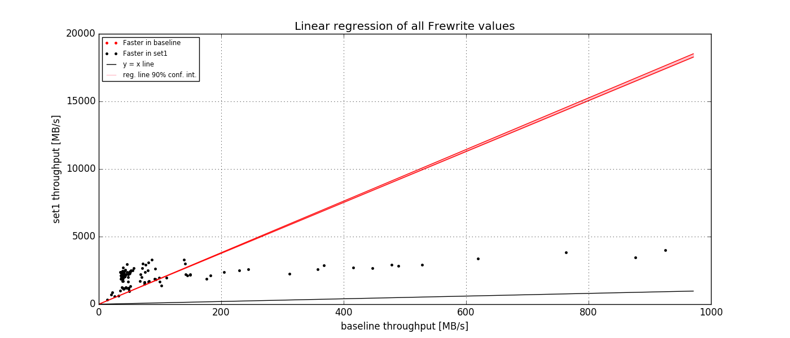
| Regression line |
|---|
| slope | 18.94824 |
| std. error | 0.07576 |
| ci. max 90% | 18.82281 |
| ci. min. 90% | 19.07366 |
Back on top
Fread
| Fread |
File size [kB] |
4 |
8 |
16 |
32 |
64 |
128 |
256 |
512 |
1024 |
2048 |
4096 |
8192 |
16384 |
32768 |
65536 |
131072 |
262144 |
524288 |
1048576 |
|---|
| baseline | first quartile |
4.95 |
5.4 |
9.96 |
9.82 |
15.79 |
19.26 |
30.56 |
39.78 |
39.99 |
39.23 |
39.17 |
39.04 |
39.01 |
39.41 |
39.36 |
39.32 |
39.21 |
39.32 |
38.55 |
| median |
4.98 |
7.12 |
10.55 |
12.63 |
16.34 |
24.83 |
39.98 |
51.74 |
43.31 |
40.87 |
39.98 |
39.68 |
39.6 |
65.84 |
65.57 |
65.44 |
65.3 |
65.23 |
62.48 |
| third quartile |
5.15 |
8.99 |
16.1 |
22.98 |
34.02 |
48.34 |
76.93 |
61.74 |
47.47 |
54.27 |
69.97 |
72.24 |
84.26 |
96.13 |
95.45 |
95.17 |
95.05 |
94.98 |
92.98 |
| mean val. |
5.06 |
7.3 |
12.52 |
17.1 |
24.76 |
32.96 |
48.49 |
54.59 |
51.96 |
51.69 |
54.08 |
57.16 |
60.39 |
69.13 |
68.76 |
68.58 |
68.49 |
68.47 |
65.0 |
| standard dev. |
0.19 |
2.16 |
3.65 |
8.64 |
11.89 |
17.62 |
21.25 |
18.96 |
20.33 |
21.62 |
23.84 |
25.98 |
27.83 |
27.99 |
27.69 |
27.58 |
27.55 |
27.48 |
29.63 |
| ci. min. 90% |
4.88 |
6.05 |
10.86 |
13.76 |
20.69 |
27.49 |
42.42 |
49.54 |
46.86 |
46.56 |
48.7 |
51.56 |
54.63 |
62.12 |
61.82 |
61.68 |
61.59 |
61.59 |
57.57 |
| ci. max. 90% |
5.25 |
8.56 |
14.18 |
20.44 |
28.83 |
38.42 |
54.57 |
59.64 |
57.05 |
56.81 |
59.46 |
62.77 |
66.16 |
76.14 |
75.7 |
75.49 |
75.39 |
75.35 |
72.42 |
| geom. mean |
5.06 |
7.01 |
12.07 |
15.2 |
22.36 |
29.04 |
44.44 |
51.8 |
49.06 |
48.48 |
50.14 |
52.45 |
54.97 |
63.5 |
63.22 |
63.07 |
62.98 |
62.99 |
57.92 |
| minimum |
4.88 |
4.66 |
9.14 |
9.13 |
14.74 |
16.07 |
27.7 |
34.73 |
36.35 |
37.84 |
37.83 |
38.29 |
38.51 |
38.98 |
38.93 |
38.89 |
38.93 |
38.88 |
27.45 |
| maximum |
5.36 |
10.81 |
18.38 |
30.94 |
45.13 |
66.85 |
81.67 |
96.6 |
102.08 |
106.76 |
109.18 |
110.35 |
110.98 |
108.54 |
107.75 |
107.4 |
107.21 |
107.12 |
106.46 |
| set1 | first quartile |
391.91 |
969.3 |
1480.87 |
2228.9 |
2736.2 |
3571.3 |
3959.79 |
4202.24 |
4307.13 |
4479.18 |
4494.55 |
4373.31 |
4210.67 |
3852.54 |
4259.27 |
4276.23 |
4318.71 |
4330.5 |
4375.58 |
| median |
391.91 |
969.3 |
1567.63 |
2228.9 |
2985.5 |
3671.34 |
4099.11 |
4366.33 |
4501.26 |
4586.93 |
4581.68 |
4588.45 |
4594.98 |
4481.87 |
4485.23 |
4484.62 |
4502.12 |
4515.48 |
4515.09 |
| third quartile |
391.91 |
969.3 |
1567.63 |
2228.9 |
3128.0 |
3797.69 |
4231.44 |
4426.19 |
4564.95 |
4684.26 |
4672.27 |
4729.6 |
4671.43 |
4564.95 |
4553.16 |
4546.41 |
4558.89 |
4549.53 |
4562.83 |
| mean val. |
398.37 |
964.96 |
1542.21 |
2220.02 |
2912.78 |
3619.33 |
4018.93 |
4231.19 |
4391.67 |
4531.02 |
4527.31 |
4493.58 |
4393.92 |
4260.14 |
4297.65 |
4305.95 |
4323.44 |
4318.38 |
4338.87 |
| standard dev. |
19.96 |
36.63 |
120.34 |
118.99 |
269.74 |
283.48 |
284.49 |
337.97 |
250.77 |
254.67 |
265.45 |
323.26 |
448.25 |
458.9 |
456.6 |
444.22 |
446.73 |
454.41 |
454.85 |
| ci. min. 90% |
379.34 |
943.72 |
1487.48 |
2174.02 |
2820.48 |
3531.39 |
3937.62 |
4141.16 |
4328.86 |
4470.63 |
4467.41 |
4423.84 |
4301.13 |
4145.2 |
4183.28 |
4194.68 |
4211.54 |
4204.56 |
4224.95 |
| ci. max. 90% |
417.4 |
986.19 |
1596.93 |
2266.03 |
3005.08 |
3707.27 |
4100.24 |
4321.23 |
4454.48 |
4591.4 |
4587.21 |
4563.32 |
4486.72 |
4375.08 |
4412.01 |
4417.21 |
4435.33 |
4432.19 |
4452.8 |
| geom. mean |
397.98 |
964.3 |
1537.81 |
2216.96 |
2898.65 |
3607.93 |
4008.22 |
4216.54 |
4384.39 |
4523.5 |
4519.14 |
4481.58 |
4369.56 |
4234.54 |
4272.02 |
4281.63 |
4298.93 |
4293.09 |
4313.47 |
| minimum |
382.75 |
866.75 |
1315.83 |
1933.05 |
1902.27 |
2899.73 |
3014.83 |
2979.73 |
3845.14 |
3780.69 |
3700.47 |
3777.03 |
3425.53 |
3385.16 |
3381.4 |
3438.82 |
3454.84 |
3456.61 |
3455.98 |
| maximum |
433.37 |
998.85 |
1780.59 |
2436.02 |
3128.0 |
4167.44 |
4318.58 |
4672.74 |
4740.37 |
4852.26 |
4895.88 |
4895.74 |
4999.99 |
4854.2 |
4839.31 |
4803.88 |
4831.09 |
4816.28 |
4828.42 |
| ttest equality |
DIFF |
DIFF |
DIFF |
DIFF |
DIFF |
DIFF |
DIFF |
DIFF |
DIFF |
DIFF |
DIFF |
DIFF |
DIFF |
DIFF |
DIFF |
DIFF |
DIFF |
DIFF |
DIFF |
| baseline set1 difference |
7767.36 % |
13520.13 % |
14759.35 % |
17542.37 % |
18166.93 % |
14687.01 % |
10152.78 % |
8339.58 % |
10292.76 % |
11122.92 % |
11358.67 % |
11463.01 % |
11502.75 % |
6707.33 % |
6740.23 % |
6753.18 % |
6794.95 % |
6822.14 % |
7125.95 % |
| ttest p-value |
0.0 |
0.0 |
0.0 |
0.0 |
0.0 |
0.0 |
0.0 |
0.0 |
0.0 |
0.0 |
0.0 |
0.0 |
0.0 |
0.0 |
0.0 |
0.0 |
0.0 |
0.0 |
0.0 |
| Fread |
Block size [kB] |
4 |
8 |
16 |
32 |
64 |
128 |
256 |
512 |
1024 |
2048 |
4096 |
8192 |
16384 |
|---|
| baseline | first quartile |
10.05 |
13.79 |
20.65 |
32.87 |
39.18 |
39.17 |
39.22 |
46.2 |
65.35 |
82.55 |
95.02 |
102.8 |
107.12 |
| median |
29.25 |
33.36 |
38.4 |
39.17 |
39.61 |
39.49 |
39.52 |
46.74 |
65.84 |
83.03 |
95.38 |
103.1 |
107.38 |
| third quartile |
38.29 |
38.51 |
39.14 |
40.13 |
43.64 |
46.9 |
42.95 |
51.03 |
69.97 |
86.29 |
97.4 |
104.42 |
108.45 |
| mean val. |
24.78 |
26.79 |
31.63 |
36.99 |
41.43 |
45.36 |
45.68 |
53.4 |
70.17 |
86.13 |
97.29 |
104.15 |
107.9 |
| standard dev. |
13.82 |
12.72 |
10.13 |
5.94 |
5.53 |
12.96 |
12.76 |
14.48 |
10.6 |
7.4 |
4.61 |
2.58 |
1.39 |
| ci. min. 90% |
21.92 |
24.05 |
29.34 |
35.58 |
40.37 |
42.77 |
43.04 |
50.28 |
67.77 |
84.37 |
96.13 |
103.46 |
107.5 |
| ci. max. 90% |
27.64 |
29.54 |
33.91 |
38.39 |
42.5 |
47.94 |
48.32 |
56.52 |
72.56 |
87.88 |
98.44 |
104.84 |
108.29 |
| geom. mean |
19.69 |
23.09 |
29.76 |
36.46 |
41.06 |
43.86 |
44.35 |
51.95 |
69.52 |
85.84 |
97.18 |
104.12 |
107.89 |
| minimum |
4.66 |
8.35 |
15.02 |
23.34 |
27.49 |
27.45 |
38.44 |
43.01 |
62.28 |
79.84 |
91.33 |
101.43 |
106.41 |
| maximum |
41.87 |
43.55 |
52.0 |
49.38 |
55.25 |
80.88 |
81.67 |
96.6 |
102.08 |
106.76 |
109.18 |
110.35 |
110.98 |
| set1 | first quartile |
2054.24 |
2228.9 |
3071.41 |
3671.34 |
4384.55 |
4395.73 |
4470.69 |
4490.46 |
4516.62 |
4483.05 |
4266.81 |
3588.92 |
3443.33 |
| median |
3568.94 |
4131.67 |
4272.88 |
4300.9 |
4715.87 |
4644.75 |
4495.72 |
4517.64 |
4542.19 |
4515.78 |
4330.5 |
3596.97 |
3457.51 |
| third quartile |
3862.87 |
4663.6 |
4584.44 |
4637.9 |
4795.14 |
4701.38 |
4544.53 |
4589.45 |
4595.97 |
4564.35 |
4384.54 |
3614.34 |
3472.54 |
| mean val. |
2867.54 |
3573.85 |
3771.22 |
4015.54 |
4479.87 |
4530.38 |
4483.44 |
4514.97 |
4546.59 |
4528.92 |
4324.41 |
3634.99 |
3454.88 |
| standard dev. |
1209.13 |
1332.24 |
1031.3 |
773.84 |
490.24 |
249.01 |
136.47 |
152.64 |
147.39 |
76.46 |
122.2 |
99.51 |
26.52 |
| ci. min. 90% |
2617.23 |
3286.44 |
3538.49 |
3832.07 |
4385.57 |
4480.76 |
4455.19 |
4482.04 |
4513.33 |
4510.79 |
4293.81 |
3608.48 |
3447.3 |
| ci. max. 90% |
3117.85 |
3861.26 |
4003.94 |
4199.02 |
4574.16 |
4580.01 |
4511.69 |
4547.9 |
4579.85 |
4547.05 |
4355.02 |
3661.5 |
3462.46 |
| geom. mean |
2440.82 |
3224.05 |
3592.38 |
3928.75 |
4449.46 |
4523.32 |
4481.3 |
4512.29 |
4544.09 |
4528.29 |
4322.69 |
3633.7 |
3454.78 |
| minimum |
382.75 |
969.3 |
1531.01 |
2228.9 |
3128.0 |
3918.28 |
3818.12 |
3880.27 |
3852.54 |
4329.15 |
3846.4 |
3482.95 |
3381.4 |
| maximum |
3974.32 |
4895.88 |
4813.57 |
4813.57 |
4999.99 |
4848.34 |
4694.75 |
4801.99 |
4774.92 |
4785.82 |
4592.97 |
3960.25 |
3498.38 |
| ttest equality |
DIFF |
DIFF |
DIFF |
DIFF |
DIFF |
DIFF |
DIFF |
DIFF |
DIFF |
DIFF |
DIFF |
DIFF |
DIFF |
| baseline set1 difference |
12103.15 % |
12285.87 % |
11028.3 % |
10879.83 % |
11805.64 % |
11661.9 % |
11276.8 % |
9565.33 % |
6798.95 % |
5338.84 % |
4440.04 % |
3388.68 % |
3120.03 % |
| ttest p-value |
0.0 |
0.0 |
0.0 |
0.0 |
0.0 |
0.0 |
0.0 |
0.0 |
0.0 |
0.0 |
0.0 |
0.0 |
0.0 |
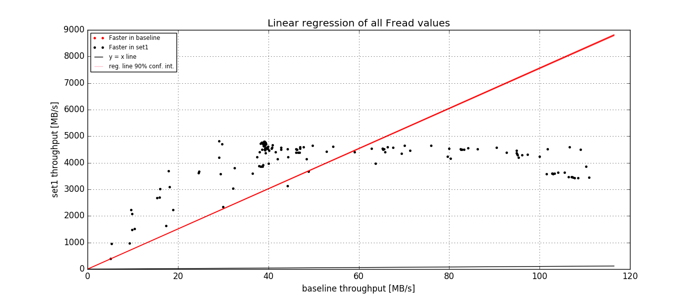
| Regression line |
|---|
| slope | 75.59424 |
| std. error | 0.08135 |
| ci. max 90% | 75.45956 |
| ci. min. 90% | 75.72891 |
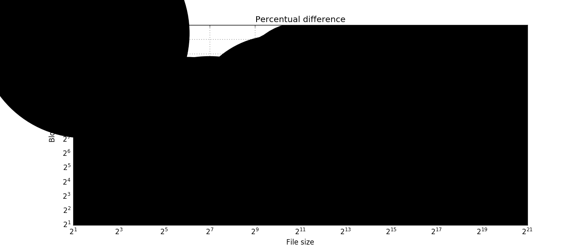
Back on top
Freread
| Freread |
File size [kB] |
4 |
8 |
16 |
32 |
64 |
128 |
256 |
512 |
1024 |
2048 |
4096 |
8192 |
16384 |
32768 |
65536 |
131072 |
262144 |
524288 |
1048576 |
|---|
| baseline | first quartile |
1279.43 |
1668.67 |
2590.78 |
3135.27 |
2985.5 |
3476.58 |
3675.28 |
3744.72 |
3831.09 |
3938.68 |
3999.52 |
3597.23 |
3417.33 |
3533.55 |
3587.66 |
3622.37 |
3644.7 |
3656.04 |
3679.59 |
| median |
1279.43 |
1949.81 |
2641.97 |
3301.13 |
3284.78 |
3671.34 |
3843.67 |
3921.39 |
4033.74 |
4149.08 |
4158.12 |
3875.85 |
3643.1 |
3684.99 |
3731.54 |
3753.22 |
3762.11 |
3781.5 |
3790.74 |
| third quartile |
1387.8 |
1949.81 |
3077.68 |
3466.99 |
3702.3 |
3777.14 |
4036.0 |
4138.03 |
4220.45 |
4282.51 |
4226.21 |
3946.4 |
3717.57 |
3733.48 |
3747.33 |
3786.87 |
3784.01 |
3800.27 |
3809.2 |
| mean val. |
1465.01 |
1951.94 |
2751.63 |
3188.28 |
3357.4 |
3582.75 |
3823.53 |
3917.68 |
4020.47 |
4064.17 |
4044.86 |
3765.59 |
3537.81 |
3557.38 |
3591.66 |
3615.13 |
3624.22 |
3644.37 |
3650.5 |
| standard dev. |
357.49 |
368.59 |
294.18 |
588.15 |
469.28 |
382.07 |
285.16 |
303.72 |
293.28 |
311.2 |
300.86 |
267.85 |
264.59 |
297.23 |
312.79 |
323.17 |
330.09 |
328.12 |
326.28 |
| ci. min. 90% |
1124.19 |
1738.28 |
2617.85 |
2960.88 |
3196.82 |
3464.22 |
3742.03 |
3836.77 |
3947.01 |
3990.38 |
3976.97 |
3707.81 |
3483.04 |
3482.93 |
3513.31 |
3534.18 |
3541.54 |
3562.18 |
3568.78 |
| ci. max. 90% |
1805.84 |
2165.61 |
2885.42 |
3415.69 |
3517.97 |
3701.27 |
3905.04 |
3998.6 |
4093.93 |
4137.96 |
4112.76 |
3823.38 |
3592.59 |
3631.83 |
3670.0 |
3696.07 |
3706.9 |
3726.55 |
3732.23 |
| geom. mean |
1435.74 |
1921.97 |
2737.01 |
3114.19 |
3326.48 |
3561.96 |
3812.87 |
3905.86 |
4009.81 |
4051.53 |
4032.33 |
3755.76 |
3527.52 |
3544.42 |
3577.36 |
3599.93 |
3608.34 |
3628.81 |
3635.12 |
| minimum |
1279.43 |
1502.73 |
2198.77 |
1238.8 |
2707.94 |
2719.25 |
3160.21 |
3140.36 |
3424.46 |
3035.17 |
2745.5 |
3173.35 |
2954.15 |
2963.46 |
2970.94 |
2970.46 |
2868.02 |
3002.61 |
3005.67 |
| maximum |
2098.98 |
2558.86 |
3149.91 |
3995.4 |
4173.89 |
4304.3 |
4248.59 |
4426.19 |
4462.95 |
4415.51 |
4347.77 |
4179.25 |
3906.26 |
3895.81 |
3927.61 |
3952.7 |
3976.51 |
3982.77 |
3984.33 |
| set1 | first quartile |
1279.43 |
1949.81 |
2539.59 |
3066.82 |
3650.74 |
4167.44 |
4300.87 |
4454.45 |
4625.36 |
4703.35 |
4938.46 |
4717.81 |
4189.38 |
3791.05 |
4311.54 |
4309.76 |
4338.39 |
4358.19 |
4389.63 |
| median |
1279.43 |
1949.81 |
2641.97 |
3466.99 |
3923.98 |
4377.37 |
4623.23 |
4768.36 |
4976.6 |
5148.58 |
5291.15 |
4925.95 |
4509.46 |
4426.0 |
4473.34 |
4489.01 |
4509.97 |
4510.42 |
4519.19 |
| third quartile |
1279.43 |
1949.81 |
2641.97 |
3466.99 |
4173.89 |
4775.85 |
4997.84 |
5155.17 |
5263.9 |
5384.91 |
5416.74 |
5093.42 |
4593.73 |
4570.08 |
4581.22 |
4570.6 |
4568.09 |
4581.66 |
4555.75 |
| mean val. |
1240.2 |
1867.62 |
2634.44 |
3351.39 |
3827.5 |
4352.8 |
4569.14 |
4756.09 |
4900.78 |
4982.59 |
5121.43 |
4791.0 |
4317.81 |
4239.74 |
4311.76 |
4314.32 |
4330.6 |
4325.05 |
4343.22 |
| standard dev. |
155.55 |
174.12 |
315.53 |
356.46 |
470.43 |
447.52 |
485.56 |
518.36 |
538.02 |
553.65 |
457.35 |
428.53 |
430.1 |
440.22 |
439.71 |
440.2 |
445.61 |
456.08 |
453.4 |
| ci. min. 90% |
1091.9 |
1766.69 |
2490.95 |
3213.57 |
3666.53 |
4213.98 |
4430.35 |
4617.99 |
4766.02 |
4851.32 |
5018.22 |
4698.55 |
4228.77 |
4129.47 |
4201.63 |
4204.06 |
4218.98 |
4210.81 |
4229.65 |
| ci. max. 90% |
1388.5 |
1968.55 |
2777.94 |
3489.21 |
3988.47 |
4491.63 |
4707.92 |
4894.18 |
5035.54 |
5113.86 |
5224.64 |
4883.45 |
4406.84 |
4350.0 |
4421.9 |
4424.58 |
4442.21 |
4439.28 |
4456.78 |
| geom. mean |
1231.6 |
1859.56 |
2617.1 |
3332.78 |
3793.57 |
4329.61 |
4542.61 |
4727.31 |
4869.99 |
4949.81 |
5099.48 |
4770.76 |
4294.79 |
4216.13 |
4287.94 |
4290.46 |
4306.22 |
4299.59 |
4317.98 |
| minimum |
974.91 |
1502.73 |
2198.77 |
2800.34 |
2152.15 |
3476.58 |
3474.34 |
3674.02 |
3647.84 |
3690.86 |
3941.27 |
3784.27 |
3069.83 |
3416.27 |
3402.84 |
3446.5 |
3462.22 |
3462.59 |
3458.52 |
| maximum |
1387.8 |
1949.81 |
3149.91 |
3877.22 |
4534.92 |
5002.48 |
5119.86 |
5492.72 |
5646.57 |
5664.89 |
5681.79 |
5308.57 |
4796.3 |
4810.7 |
4852.17 |
4807.32 |
4832.37 |
4835.16 |
4812.44 |
| ttest equality |
SAME |
SAME |
SAME |
SAME |
DIFF |
DIFF |
DIFF |
DIFF |
DIFF |
DIFF |
DIFF |
DIFF |
DIFF |
DIFF |
DIFF |
DIFF |
DIFF |
DIFF |
DIFF |
| baseline set1 difference |
0.0 % |
0.0 % |
0.0 % |
5.02 % |
19.46 % |
19.23 % |
20.28 % |
21.6 % |
23.37 % |
24.09 % |
27.25 % |
27.09 % |
23.78 % |
20.11 % |
19.88 % |
19.6 % |
19.88 % |
19.28 % |
19.22 % |
| ttest p-value |
0.2333 |
0.5213 |
0.3018 |
0.2956 |
0.0009 |
0.0 |
0.0 |
0.0 |
0.0 |
0.0 |
0.0 |
0.0 |
0.0 |
0.0 |
0.0 |
0.0 |
0.0 |
0.0 |
0.0 |
| Freread |
Block size [kB] |
4 |
8 |
16 |
32 |
64 |
128 |
256 |
512 |
1024 |
2048 |
4096 |
8192 |
16384 |
|---|
| baseline | first quartile |
2707.94 |
3389.54 |
3590.73 |
3677.52 |
3900.87 |
3851.34 |
3740.49 |
3741.5 |
3739.84 |
3721.29 |
3546.3 |
3091.32 |
2977.58 |
| median |
3160.21 |
3719.24 |
3705.85 |
3891.92 |
3959.78 |
3903.67 |
3784.69 |
3782.76 |
3793.52 |
3767.3 |
3622.66 |
3102.81 |
2996.36 |
| third quartile |
3386.75 |
3909.85 |
3911.3 |
4012.35 |
4034.87 |
4096.71 |
4158.12 |
4183.15 |
4026.05 |
3815.14 |
3666.11 |
3113.05 |
3007.38 |
| mean val. |
2939.46 |
3535.85 |
3662.74 |
3777.93 |
3943.66 |
3946.28 |
3898.91 |
3921.36 |
3905.12 |
3820.12 |
3617.34 |
3113.54 |
2990.63 |
| standard dev. |
673.67 |
603.64 |
423.34 |
371.26 |
227.12 |
234.45 |
228.7 |
270.83 |
254.9 |
181.42 |
114.65 |
51.55 |
28.3 |
| ci. min. 90% |
2800.0 |
3405.63 |
3567.2 |
3689.9 |
3899.98 |
3899.56 |
3851.57 |
3862.93 |
3847.6 |
3777.11 |
3588.63 |
3099.81 |
2982.54 |
| ci. max. 90% |
3078.92 |
3666.08 |
3758.27 |
3865.95 |
3987.35 |
3993.0 |
3946.26 |
3979.79 |
3962.64 |
3863.14 |
3646.06 |
3127.27 |
2998.72 |
| geom. mean |
2837.42 |
3469.06 |
3635.69 |
3757.55 |
3936.56 |
3938.74 |
3892.46 |
3912.47 |
3897.31 |
3816.11 |
3615.58 |
3113.13 |
2990.5 |
| minimum |
1238.8 |
1502.73 |
2539.59 |
2391.58 |
2951.88 |
2719.25 |
3600.3 |
3582.62 |
3589.9 |
3573.65 |
3408.65 |
3057.5 |
2868.02 |
| maximum |
3693.14 |
4218.77 |
4219.83 |
4255.15 |
4324.24 |
4347.77 |
4406.23 |
4426.19 |
4462.95 |
4413.18 |
3948.69 |
3292.29 |
3026.36 |
| set1 | first quartile |
2800.34 |
3466.99 |
3923.98 |
4486.37 |
4736.34 |
4686.73 |
4484.77 |
4508.78 |
4520.43 |
4502.61 |
4315.24 |
3592.17 |
3452.21 |
| median |
3719.22 |
4463.87 |
4311.55 |
4717.39 |
4810.13 |
4775.21 |
4558.73 |
4568.53 |
4570.6 |
4529.01 |
4359.75 |
3604.43 |
3463.13 |
| third quartile |
3853.63 |
4649.3 |
4547.76 |
4803.35 |
4992.85 |
5102.47 |
5178.77 |
5376.94 |
5255.56 |
4818.35 |
4415.17 |
3634.16 |
3474.86 |
| mean val. |
3250.38 |
4033.16 |
4194.72 |
4607.05 |
4840.42 |
4876.38 |
4808.38 |
4834.17 |
4831.98 |
4744.03 |
4448.06 |
3649.19 |
3452.49 |
| standard dev. |
889.22 |
976.48 |
582.21 |
420.74 |
281.62 |
282.88 |
397.61 |
496.18 |
460.19 |
400.1 |
260.34 |
113.45 |
70.38 |
| ci. min. 90% |
3066.29 |
3822.5 |
4063.34 |
4507.29 |
4786.26 |
4820.01 |
4726.07 |
4727.13 |
4728.13 |
4649.16 |
4382.85 |
3618.97 |
3432.37 |
| ci. max. 90% |
3434.46 |
4243.82 |
4326.11 |
4706.81 |
4894.59 |
4932.75 |
4890.69 |
4941.22 |
4935.83 |
4838.89 |
4513.27 |
3679.42 |
3472.6 |
| geom. mean |
3083.37 |
3887.23 |
4150.39 |
4586.92 |
4832.12 |
4868.16 |
4792.23 |
4809.19 |
4811.07 |
4728.55 |
4441.15 |
3647.54 |
3451.74 |
| minimum |
974.91 |
1949.81 |
2641.97 |
3466.99 |
3942.75 |
3849.44 |
3791.05 |
3690.86 |
3765.63 |
4400.35 |
4189.38 |
3477.54 |
3069.83 |
| maximum |
4123.38 |
5579.75 |
5154.6 |
5398.41 |
5479.52 |
5539.22 |
5479.52 |
5656.88 |
5681.79 |
5664.89 |
5249.76 |
4022.44 |
3513.4 |
| ttest equality |
DIFF |
DIFF |
DIFF |
DIFF |
DIFF |
DIFF |
DIFF |
DIFF |
DIFF |
DIFF |
DIFF |
DIFF |
DIFF |
| baseline set1 difference |
17.69 % |
20.02 % |
16.34 % |
21.21 % |
21.47 % |
22.33 % |
20.45 % |
20.77 % |
20.48 % |
20.22 % |
20.35 % |
16.17 % |
15.58 % |
| ttest p-value |
0.0264 |
0.0011 |
0.0 |
0.0 |
0.0 |
0.0 |
0.0 |
0.0 |
0.0 |
0.0 |
0.0 |
0.0 |
0.0 |
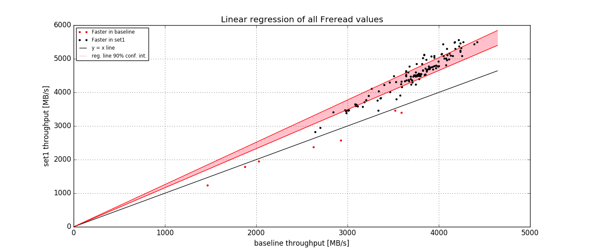
| Regression line |
|---|
| slope | 1.2109 |
| std. error | 0.02875 |
| ci. max 90% | 1.16331 |
| ci. min. 90% | 1.25849 |
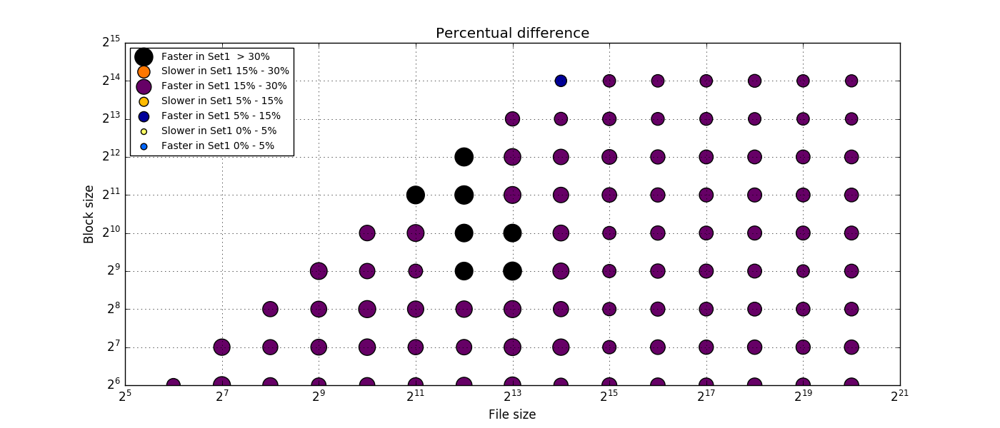
Back on top
ALL
| ALL |
File size [kB] |
4 |
8 |
16 |
32 |
64 |
128 |
256 |
512 |
1024 |
2048 |
4096 |
8192 |
16384 |
32768 |
65536 |
131072 |
262144 |
524288 |
1048576 |
|---|
| baseline | first quartile |
5.72 |
10.96 |
16.24 |
20.13 |
30.46 |
41.92 |
56.31 |
61.74 |
51.55 |
40.91 |
39.96 |
39.18 |
38.34 |
37.81 |
37.52 |
37.38 |
37.31 |
37.26 |
36.98 |
| median |
11.43 |
22.45 |
26.12 |
44.29 |
66.64 |
97.55 |
129.39 |
154.23 |
194.48 |
70.19 |
48.89 |
40.92 |
39.42 |
46.59 |
42.8 |
39.84 |
39.32 |
39.25 |
37.33 |
| third quartile |
18.77 |
39.83 |
73.32 |
139.77 |
224.86 |
376.16 |
526.45 |
705.51 |
825.03 |
808.15 |
289.16 |
320.96 |
338.04 |
365.62 |
382.62 |
121.79 |
110.51 |
108.0 |
107.63 |
| mean val. |
500.6 |
762.14 |
784.54 |
858.7 |
942.32 |
1014.13 |
1082.89 |
1137.17 |
1176.52 |
1106.82 |
1094.46 |
1026.47 |
939.95 |
933.0 |
935.51 |
934.8 |
933.6 |
928.65 |
928.71 |
| standard dev. |
1094.68 |
1705.2 |
1458.81 |
1523.05 |
1624.88 |
1681.09 |
1732.41 |
1775.93 |
1808.22 |
1877.02 |
1889.63 |
1772.84 |
1607.03 |
1589.93 |
1598.51 |
1605.37 |
1613.46 |
1622.29 |
1624.93 |
| ci. min. 90% |
273.98 |
514.37 |
611.89 |
702.78 |
793.64 |
873.78 |
949.03 |
1008.84 |
1053.35 |
985.55 |
978.07 |
921.93 |
848.92 |
824.71 |
826.62 |
825.45 |
823.7 |
818.14 |
818.03 |
| ci. max. 90% |
727.21 |
1009.92 |
957.2 |
1014.63 |
1091.0 |
1154.48 |
1216.75 |
1265.5 |
1299.69 |
1228.1 |
1210.85 |
1131.01 |
1030.99 |
1041.3 |
1044.39 |
1044.15 |
1043.5 |
1039.15 |
1039.39 |
| geom. mean |
30.43 |
47.73 |
69.18 |
92.61 |
127.27 |
166.88 |
209.11 |
238.23 |
255.66 |
150.1 |
128.07 |
119.67 |
116.87 |
136.92 |
132.99 |
130.21 |
127.9 |
125.04 |
121.38 |
| minimum |
4.33 |
2.93 |
2.59 |
2.48 |
2.08 |
1.54 |
1.52 |
1.52 |
1.52 |
1.55 |
1.5 |
1.54 |
1.52 |
23.77 |
23.86 |
23.41 |
21.0 |
22.31 |
18.19 |
| maximum |
3906.25 |
7812.5 |
5551.22 |
5283.95 |
5263.33 |
5649.31 |
5583.3 |
5670.96 |
5715.82 |
5649.63 |
5548.38 |
5482.92 |
4819.38 |
4692.79 |
4641.02 |
4693.1 |
4682.13 |
4688.51 |
4686.29 |
| set1 | first quartile |
350.04 |
644.97 |
1035.29 |
1353.97 |
1726.84 |
2018.0 |
2265.74 |
2485.36 |
2597.4 |
2615.88 |
2636.76 |
2578.77 |
2420.97 |
2447.99 |
2420.65 |
2410.73 |
2422.13 |
2425.06 |
2438.74 |
| median |
484.65 |
969.3 |
1430.74 |
2086.94 |
2736.2 |
3200.67 |
3668.84 |
3842.3 |
4014.43 |
4036.28 |
4178.84 |
4019.07 |
3712.22 |
3674.7 |
3615.4 |
3607.77 |
3596.37 |
3592.2 |
3595.01 |
| third quartile |
1279.43 |
1949.81 |
2641.97 |
3466.99 |
3923.98 |
4167.44 |
4390.92 |
4631.46 |
4713.73 |
4785.82 |
4910.21 |
4799.11 |
4601.6 |
4503.22 |
4495.37 |
4491.41 |
4505.45 |
4514.91 |
4519.19 |
| mean val. |
997.02 |
1796.36 |
2047.31 |
2392.5 |
2824.22 |
3170.58 |
3423.97 |
3576.73 |
3686.47 |
3754.74 |
3799.8 |
3695.88 |
3454.07 |
3466.61 |
3465.7 |
3450.47 |
3456.68 |
3458.81 |
3504.41 |
| standard dev. |
1082.36 |
2027.79 |
1659.63 |
1381.61 |
1395.21 |
1420.29 |
1387.39 |
1396.26 |
1387.72 |
1389.93 |
1392.15 |
1341.03 |
1244.73 |
1124.52 |
1130.85 |
1128.96 |
1136.92 |
1139.7 |
1121.26 |
| ci. min. 90% |
772.95 |
1501.71 |
1850.88 |
2251.06 |
2696.56 |
3052.0 |
3316.76 |
3475.84 |
3591.94 |
3664.94 |
3714.05 |
3616.8 |
3383.56 |
3390.01 |
3388.67 |
3373.57 |
3379.24 |
3381.18 |
3428.03 |
| ci. max. 90% |
1221.08 |
2091.02 |
2243.74 |
2533.94 |
2951.88 |
3289.16 |
3531.17 |
3677.63 |
3780.99 |
3844.54 |
3885.55 |
3774.95 |
3524.58 |
3543.2 |
3542.72 |
3527.37 |
3534.12 |
3536.44 |
3580.78 |
| geom. mean |
628.7 |
1138.25 |
1540.28 |
1994.06 |
2420.58 |
2780.97 |
3060.34 |
3225.12 |
3348.75 |
3422.42 |
3468.0 |
3382.74 |
3172.82 |
3246.49 |
3241.46 |
3225.48 |
3228.7 |
3229.94 |
3285.02 |
| minimum |
122.45 |
195.27 |
243.8 |
339.74 |
383.36 |
477.14 |
578.75 |
623.45 |
630.93 |
733.67 |
739.51 |
743.84 |
740.71 |
1219.0 |
1173.95 |
1213.94 |
1214.97 |
1218.98 |
1219.59 |
| maximum |
3906.25 |
7812.5 |
8395.92 |
5283.95 |
6270.53 |
6255.99 |
5930.67 |
5961.11 |
6290.14 |
6663.94 |
6105.68 |
5895.22 |
5515.28 |
5536.39 |
5252.34 |
4830.03 |
4852.53 |
4838.95 |
4902.99 |
| ttest equality |
DIFF |
DIFF |
DIFF |
DIFF |
DIFF |
DIFF |
DIFF |
DIFF |
DIFF |
DIFF |
DIFF |
DIFF |
DIFF |
DIFF |
DIFF |
DIFF |
DIFF |
DIFF |
DIFF |
| baseline set1 difference |
4141.37 % |
4217.39 % |
5377.12 % |
4611.84 % |
4006.03 % |
3181.08 % |
2735.43 % |
2391.24 % |
1964.19 % |
5650.31 % |
8448.17 % |
9722.73 % |
9318.06 % |
7787.51 % |
8348.0 % |
8956.56 % |
9047.02 % |
9052.8 % |
9530.6 % |
| ttest p-value |
0.0104 |
0.0 |
0.0 |
0.0 |
0.0 |
0.0 |
0.0 |
0.0 |
0.0 |
0.0 |
0.0 |
0.0 |
0.0 |
0.0 |
0.0 |
0.0 |
0.0 |
0.0 |
0.0 |
| ALL |
Block size [kB] |
4 |
8 |
16 |
32 |
64 |
128 |
256 |
512 |
1024 |
2048 |
4096 |
8192 |
16384 |
|---|
| baseline | first quartile |
14.35 |
24.36 |
38.22 |
39.05 |
37.32 |
38.0 |
38.56 |
38.36 |
37.86 |
37.75 |
37.72 |
37.66 |
37.57 |
| median |
36.15 |
39.1 |
58.18 |
94.7 |
46.29 |
50.91 |
69.43 |
52.35 |
69.89 |
82.92 |
95.11 |
102.85 |
107.24 |
| third quartile |
48.34 |
82.86 |
136.57 |
193.66 |
334.21 |
455.75 |
561.8 |
636.27 |
794.54 |
545.3 |
635.88 |
769.92 |
1116.53 |
| mean val. |
771.2 |
957.92 |
961.81 |
1002.53 |
1049.47 |
1083.69 |
1070.34 |
1077.06 |
1074.11 |
1044.89 |
1003.68 |
861.45 |
828.76 |
| standard dev. |
1408.63 |
1742.68 |
1680.35 |
1711.03 |
1784.36 |
1808.32 |
1767.91 |
1796.16 |
1786.85 |
1763.71 |
1664.7 |
1386.99 |
1311.02 |
| ci. min. 90% |
691.4 |
855.16 |
858.31 |
891.99 |
955.38 |
984.99 |
970.19 |
971.15 |
964.05 |
930.94 |
890.29 |
761.23 |
727.46 |
| ci. max. 90% |
850.99 |
1060.68 |
1065.31 |
1113.08 |
1143.55 |
1182.39 |
1170.48 |
1182.97 |
1184.16 |
1158.84 |
1117.07 |
961.68 |
930.06 |
| geom. mean |
58.06 |
84.24 |
116.74 |
151.93 |
150.23 |
168.59 |
173.99 |
165.09 |
170.24 |
161.27 |
162.4 |
159.4 |
161.09 |
| minimum |
1.5 |
2.91 |
5.94 |
11.64 |
18.19 |
25.39 |
21.0 |
25.1 |
24.85 |
23.67 |
22.31 |
24.83 |
24.78 |
| maximum |
5117.72 |
7812.5 |
5209.01 |
5322.88 |
5460.62 |
5649.31 |
5583.3 |
5670.96 |
5715.82 |
5649.63 |
5421.09 |
4077.68 |
3500.21 |
| set1 | first quartile |
1114.45 |
1592.36 |
1967.65 |
2242.95 |
2471.72 |
2535.58 |
2576.97 |
2636.76 |
2608.79 |
2608.27 |
2562.73 |
2292.13 |
2228.54 |
| median |
1657.03 |
2641.97 |
3131.89 |
3766.08 |
4374.09 |
4492.27 |
4328.92 |
4456.42 |
4474.56 |
4463.68 |
4266.38 |
3576.42 |
3408.83 |
| third quartile |
3721.23 |
4583.39 |
4521.09 |
4718.52 |
4786.39 |
4703.7 |
4517.41 |
4544.34 |
4550.56 |
4534.58 |
4376.52 |
3610.04 |
3458.32 |
| mean val. |
2228.93 |
2963.6 |
3160.83 |
3503.31 |
3789.87 |
3856.74 |
3786.5 |
3804.37 |
3774.05 |
3737.88 |
3579.08 |
2987.83 |
2851.48 |
| standard dev. |
1376.61 |
1652.31 |
1424.2 |
1357.27 |
1329.68 |
1290.43 |
1208.48 |
1189.8 |
1222.12 |
1223.52 |
1136.07 |
818.29 |
734.1 |
| ci. min. 90% |
2150.95 |
2866.17 |
3073.11 |
3415.62 |
3719.76 |
3786.3 |
3718.04 |
3734.21 |
3698.78 |
3658.83 |
3501.7 |
2928.7 |
2794.75 |
| ci. max. 90% |
2306.91 |
3061.02 |
3248.55 |
3591.01 |
3859.98 |
3927.17 |
3854.96 |
3874.52 |
3849.33 |
3816.93 |
3656.46 |
3046.96 |
2908.2 |
| geom. mean |
1735.12 |
2432.61 |
2779.17 |
3178.93 |
3494.05 |
3583.16 |
3543.69 |
3569.59 |
3524.56 |
3484.09 |
3350.42 |
2848.78 |
2734.1 |
| minimum |
122.45 |
195.27 |
434.57 |
636.87 |
745.14 |
1045.64 |
1141.24 |
1289.72 |
1310.8 |
1316.06 |
1293.97 |
1173.95 |
1210.88 |
| maximum |
7812.5 |
8395.92 |
8395.92 |
5779.65 |
6270.53 |
6663.94 |
6105.68 |
5686.33 |
5715.82 |
5699.53 |
5389.74 |
4456.69 |
3608.69 |
| ttest equality |
DIFF |
DIFF |
DIFF |
DIFF |
DIFF |
DIFF |
DIFF |
DIFF |
DIFF |
DIFF |
DIFF |
DIFF |
DIFF |
| baseline set1 difference |
4484.07 % |
6657.62 % |
5283.41 % |
3877.01 % |
9348.31 % |
8724.26 % |
6134.8 % |
8412.48 % |
6302.69 % |
5283.06 % |
4385.53 % |
3377.14 % |
3078.63 % |
| ttest p-value |
0.0 |
0.0 |
0.0 |
0.0 |
0.0 |
0.0 |
0.0 |
0.0 |
0.0 |
0.0 |
0.0 |
0.0 |
0.0 |
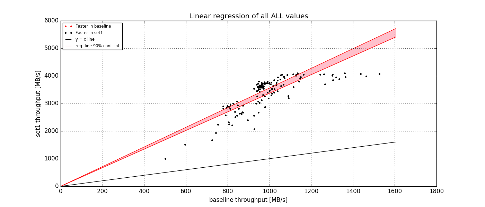
| Regression line |
|---|
| slope | 3.46675 |
| std. error | 0.05743 |
| ci. max 90% | 3.37167 |
| ci. min. 90% | 3.56182 |
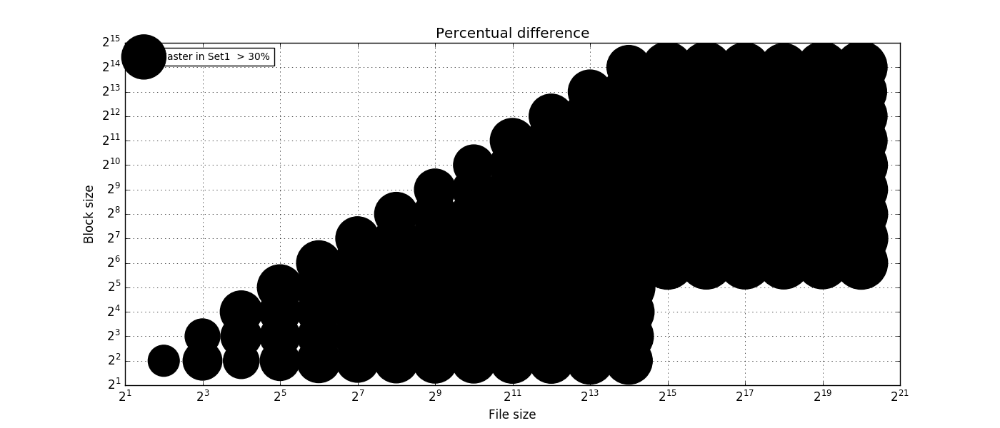
Back on top
Plotted values are median with first and third quartile errorbars.
mean => Arithmetic mean
standar dev. => Sample standard deviation
ci. max 90%, ci.min => confidence interval at confidence level 90% => it means that mean value of the distribution lies with 90% propability in interval ci_min-ci_max
geom. mean => Geometric mean
median => Second quartile = cuts data set in half = 50th percentile
first quartile => cuts off lowest 25% of data = 25th percentile
third quartile => cuts off highest 25% of data, or lowest 75% = 75th percentile
minimum => Lowest value of data set
maximum => Hightest value of data set
baseline set1 difference => Difference of medians of both sets in percennt.
ttest p-value => Student's t-test p-value = probability the both data sets are equal
ttest equality => If p-value is higher than 0.1, data sets are considered being equal with 90% probability. Otherwise the data sets are considered being different.
Linear regression of all results regression line is in y = ax form, b coeficient is zero.
for details about operations performed see Iozone documentation